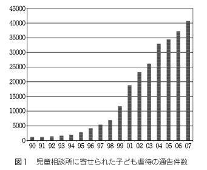
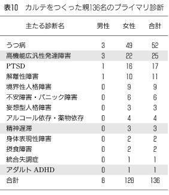

| そだちの臨床 | |
| 杉山登志郎 | |
| (2017) | |

１
発達障害のパラダイム転換
ニッチからメインストリームへ
先日、愛知県心身障害者コロニー中央病院に勤める内科医の先生にお話をうかがったときのことである。彼は、自分の仕事は「ニッチ産業」だと言っておられた。ニッチ（niche）とは、直訳すれば「隙間」や「くぼみ」のことで、需要が小規模であるために「市場」としては成り立たないけれど必要なもの、の意である。重度の発達障害を抱え、コミュニケーションにも、一人での移動にも制限のある成人の、成人病をはじめとする健康を管理する医師というのは、たしかにニッチであるにちがいない。
筆者も二〇年前、ほかならぬコロニー中央病院で児童精神科医として働いていたときの、自分の仕事に対するイメージは、彼と同じであった。当時、発達障害をメインテーマとして臨床・研究をおこなっている精神科医は、全国でたぶん両手で数えられるくらいしか存在せず、相互に知り合いでない者は「もぐり」で、若手のドクターには「発達障害臨床をします、と宣言したとたんに、わが国のトップの専門家になってしまうという情けない底の浅い領域です（だから、あなたにも活躍の機会があるから、この世界に来ませんか）」と勧誘していた。
ところが、こんにちでは隔世の感がある。昨今の小児精神科領域の学会では、発達障害に関する研究演題が九割を占めた。厚生労働省も発達障害は年々重みが増していると明言している。とりわけ、「発達障害者支援法」は大きな意味をもつものとなった。これまで「認定」されてこなかった軽度発達障害に対し、発達障害として支援をおこなうことを宣言したからである。文部科学省も、それに先立って特殊教育から特別支援教育へと舵をきった。二〇〇七年度は本格的に特別支援教育がスタートした。スクールカウンセラーも、いまや発達障害にきちんと対応できるかどうかが、機能するか否かの分かれ目になるとまでいわれるようになっている。
書店には啓蒙書から専門書までがずらりと並び、そこそこ売れている。筆者は、自分が執筆した発達障害にかかわる啓発書が、インターネット書店「アマゾン」の売れ行きランキングで瞬間風速一〇番台になったのを見たときには、自分の目を疑った。
発達障害に関する講演会も多く開催されている。そこには、発達障害という診断を受けた子どもの保護者のみならず、普通の保育園の保育士、小中学校通常学級の教師が数多く参加し、質疑応答の時間になると、それぞれが抱えている深刻な事例の相談が途切れることなくつづく。要するに、いまや発達障害はニッチどころではなくなってしまったのである。
発達障害は本当に増えたのだろうか。この疑問は、どこでも尋ねられることであるが、確実な答えはなく、唯一正しいと考えられる答えは「少なくとも減ってはいない」ということであろう。ただ、公表された罹病率を足しただけで、その拡がりは推測できる。
もっとも、新しい広汎性発達障害の悉皆調査の結果は二・一％である。男女差があって、男児の三・三％、女児の〇・八％である。これは一九七〇年代のロッター（Lotter, V.）による自閉症の有病率〇・〇四％の、じつに五〇倍である。
一方、注意欠陥多動性障害（ＡＤＨＤ）に関しては三～五％台の罹病率をもつことが報告されてきた。しかし、多いものでは一〇％台のものがいくつも報告されている。バラツキが大きいのは理由があって、ＡＤＨＤの症状をもつだけか、それとも治療の対象となる適応障害も存在するかによって、罹病率は数倍の開きになるからである。日本では、上林靖子による七％という悉皆調査の結果がある。
学習障害（ＬＤ）の罹病率も三％前後といわれているが、じつはむずかしい問題がある。第一は定義の曖昧さである。とくに文部科学省による定義は広すぎて、広汎性発達障害、ＡＤＨＤ、ＬＤが、すべて「文部科学省定義のＬＤ」となってしまう。そもそも、こんにちの学校現場の混乱に関する責任の一端は、文部科学省が軽度発達障害への対応の端緒を、一部の専門家のみの意見を採り入れ、学習障害から始めたところにある。学習のみ遅れている生徒に対しては、じつのところ現場の教師はなんら問題を感じていなかった（困ったことに、いまでもあまり感じていないようであるが）。第二に、学習障害は併存症として生じる場合がもっとも多く、いちばん併存しやすいのは広汎性発達障害である。第三に、現在わが国でおこなわれている一斉知能検査では学習障害の児童は知的障害にカウントされてしまう可能性が高い。第四に、境界知能となるものも多いため、そのバラツキによって、ときにはその日のコンディションによって、高く見積もられたり低く見積もられたりすることが生じる。筆者は、他の障害に併存しない純粋のＬＤはそれほど多いものではないと考えているが、併存例をすべて集めれば、やはり三％台にはなるであろう。
前記の発達障害に加えて、古典的発達障害である精神遅滞を忘れてはならない。これも適応障害の有無で約二倍の開きをもつが、ＩＱ七〇未満の知的障害は二％ほど存在する。こうしてみると、重複はあるにせよ、罹病率を足しただけで、たしかに児童の一割に達するのである。
詳述はしないが、いわゆる情緒障害も、不登校三％、摂食障害二・五％、心身症二％、子ども虐待二％、うつ病と統合失調症併せて少なくとも二％と考えると、こちらも子どもの一割に達する。もちろん、これらのあいだには併存が数多く認められるのであるが、単純に合計すれば児童の二割に達する問題であり、日本児童青年精神医学会認定医一四〇名ではとうてい追いつかない需要を抱えていることが理解できる。
実際に、授業参観に行ってみれば、この数字がなんら誇張ではないことを目の当たりにするであろう。三〇～四〇人の通常クラスでは、行動観察だけで、これは発達障害かな？ と疑われる生徒が四、五人はカウントできるのが常である。疑義のある方は、ご自分で見学することをお薦めする。
発達障害のパラダイム転換
軽度発達障害の概念の成立と、発達障害者支援法の登場によって、発達障害のパラダイムが大きく変わった。要約すれば、障害診断からニード判定への変化である。
先に、発達障害、情緒障害という言葉を用いたが、児童精神医学が対象とする領域は、従来からこの二つに分けられてきた。従来の成人精神医学の分類でいえば、器質因性の精神疾患と心因性（一部に内因性）の精神疾患の区分に相当する。
しかし、近年の生物学的精神医学研究の進展によって、器質性・心因性といった区別が怪しくなってきた。神経症においても、脳の機能的な異常が明らかにされ、また心因であることがもっとも明確な疾患である外傷後ストレス障害（ＰＴＳＤ）において、強い心的外傷により、扁桃体の機能障害や海馬の萎縮などの明確な器質的変化が現われることが明らかとなった。
さらにいえば、その後の研究によって、強い外傷後ストレス障害症状を呈する個体は、もともと扁桃体が小さいということも明らかになった。小さい扁桃体がつくられるのは被虐待体験であるという説がもっとも有力であるが、一方で遺伝的な素因があることも疑いない。つまり、最新の知見では、もともと器質的な基盤がある個体が強い心因に晒されたときに、さらに器質的な変化がひきおこされ、精神症状として発現するのである。これは器質因（素因）と心因との掛け算によって治療の対象となる精神科疾患が生じるという普遍的なモデルである。
このモデルは、ほぼすべての慢性疾患の場合と同一であることに注目してほしい。糖尿病の素因をもつ者は多い。素因がある個体とない個体では、糖尿病のなりやすさに大きな違いがある。しかし、素因があっても節制によって発病を防げ、素因がなくても極端な食生活をつづければ発症に至る。
このモデルは、児童に見られるこころの問題にもそのまま当てはまる。児童の精神科疾患においてもっとも多いパターンはといえば、もともとの生物学的素因に情緒的な問題が絡み合って複合的な臨床像がつくられるものである。チック障害を例にとればわかりやすいのではないだろうか。明らかな生物学的素因をもち、それなくしては生じないが、臨床的経過としては、ストレスや緊張などの情緒的な問題が要因となり、増悪あるいは寛解を繰り返す。一過性で自然軽快をするものが大半を占めるが、重度の不適応や併存症に至るものもある。
しかし、このような考え方からみると、ほぼすべての情緒障害に属する問題は、なんらかの素因なり基盤なりを抱えていることに気づく。不登校を例として挙げれば、そもそも学校という社会的な場からの退却が生じるに至るには、その背後に、なんらかの発達課題上のとりこぼしや、ストレス状況を補完する精神保健上のはたらきの脆弱性があると考えられる。ここまで拡げれば、情緒障害と発達障害の区別はなくなってしまう。
もう一つ指摘したいのは、発達途上にある子どもの場合、素因がわずかであっても、たとえば〇～三歳時に虐待を受け、基底的なレベルにおける発達課題の崩壊があれば、素因と同一の問題をひきおこすことである。これが扁桃体の容積やさらに機能的な変化をもたらすらしいことは先に触れた。被虐待体験をもつ子どもに、理想的なそだち直しの場が与えられたとしても、それはゼロからではなくマイナスからの出発になる。つまり、このような状況は発達障害と同一の現象にほかならない。筆者が被虐待児を第四の発達障害と呼ぶのは、このゆえである。さらに前記のモデルでいえば、青年期以前に始まる統合失調症はりっぱな発達障害である。
発達精神病理学とは
このような、子どもにおけるそだちの臨床独特の問題はこれまで十分に取り上げられることがなかった。これはよく考えてみると、独特なのではなくて、普遍的な問題であり、逆に、従来の精神医学や臨床心理学が、このようなそだち全体を視野に入れることなく、さまざまな体系をつくりあげたこと自体が、じつは非科学的といわざるをえない大きな欠陥を内部に抱える要因となったことが、浮かび上がってくる。発達精神病理学とは、このような、従来の臨床における欠陥を修正する目的で、ごく最近になって発展してきた科学である。発達精神病理学は、発達に沿った病理の展開を明らかにすることを目的とする。リスク因子となる諸要因を明らかにし、さらにその相互関係を解明する。この作業によって、初めて介入および予防の可能性を明らかにすることが可能となる。これは、慢性の身体病を例として挙げればよりわかりやすいかも知れない。たとえば、肥満と循環器障害を体質としてもつ児童に対して、高度肥満、喫煙、高血圧などの諸要因がはたらくと、将来の循環器疾患の危険性は当然高くなる。たとえば、高度肥満というリスクがはたらくと、将来の虚血性心疾患のリスクが五倍になるなど、このような因子相互の関係がわかれば、リスク因子を減らすために、どのような介入を子どもの現在において、おこなう必要があるのかという指針を組み上げることが可能となる。
子どもの場合は、発達に沿って病態が変化するため、成人のカテゴリー診断学に合致しない場合が少なくないことは、これまでにもしばしば指摘されてきた。とくに子どもにおいて、しばしば生じる現象が異型連続性の問題である。一人の子どもが、診断カテゴリーを渡り歩く、あるいはいくつもの診断基準を満たす。筆者はこれを、わかりやすくするために、出世魚現象と最近呼んでいる。ツバス↓ハマチ↓メジロ↓ブリと名前が変わるように、子どもの臨床像がカテゴリー診断学を当てはめると変化をしていく。有名なものを一つあげれば、齊藤万比古による注意欠陥多動性障害↓反抗挑戦性障害↓行為障害へと展開する破壊的行動障害の行進（ＤＢＤマーチ）である。ちなみに、このＤＢＤマーチに対する筆者のコメントは、６章に述べる。
子どもにおいて、心身はまさに一つのものとして現われ、相互に発達的に絡みあい、影響しあう。小学校低学年から継続して登校をせず、さらに学習および社会的対人交流の補いをおこなわれなかった場合には、その子どもが成人に達したときに、必ずやなんらかの発達上の問題、少なくとも発達課題の未達成を抱えることとなる。健全なそだちを保障するかかわりがなされなければ、情緒的な問題といえども、必ず発達障害にたどりつく。
逆に、発達障害の場合も、たとえばその代表である精神遅滞において、定義の縦軸に相当する社会的適応障害は、脳の器質的な障害からひきおこされる全体的な認知障害よりも、その結果として生じる自信喪失、対人関係における被害念慮、不適切な行動パターンなど、二次的な心因的な問題によってもたらされる。つまり、発達障害は情緒障害を伴いやすく、適応不全はしばしば二次的情緒的障害に起因する。
したがって、筆者は、子どものこころの問題を扱ううえで、発達障害と情緒障害のどちらかにのみ臨床が偏ることは、臨床の内容を著しく浅薄にし、子どもの健康な発達に貢献する専門家としては不十分であると考える。
さらに注意を喚起したいのは、「障害」という言葉のニュアンスである。障害という日本語は著しく断定的なニュアンスをもつ。しかし、障害を英語で記せばdisorderであり、disは乱れを意味し、orderは秩序を意味する。つまり、英語の意味に沿えば発達障害とは、正しくは「発達の道筋の乱れ」、あるいは「発達の凸凹」という意味となる。子どもを正常か異常かという二群分けをおこない、発達障害をもつ児童は異常という発想は、いまや完全な誤りである。発達障害という診断を下すことの意味は、個別の配慮を必要とするか否かという判断において、個別の配慮をしたほうが、よりよい発達が期待できるということを意味する。
最近、筆者は、単純に「発達凸凹」という呼称がもっともよいのではないかと考えている。発達凸凹をもつ子ども、大人は多い。発達精神病理学の視点から見れば、それに加えて適応障害を生じたものが発達障害なのである。発達凸凹を英語で表わせばdevelopmental differanciationsであろうか。
発達障害の「流行」に苦言を呈される大家もおられるが、発達障害は流行しているのではない。児童精神医学が、さらに精神医学が、正しい姿に戻りつつあるのである。
発達障害の理想と現実――従来の発達障害との競合関係
これまでわが国では、発達障害は非常に狭い特定の領域に限定され、それのみが福祉の対象となっていた。たとえば、広汎性発達障害でも、知的障害を伴わなければなんら福祉の対象とならなかった。これまでですら福祉予算全体は十分なものとはいえず、またインフラの整備も、わが国においては一度も需要のすべてを満たしたことはなかった。このことに少し触れておきたい。
いわゆる福祉先進国で、八〇年代にインテグレーション、あるいはノーマリゼーションの大きな波が生じたとき、たとえばアメリカを例にとれば、施設の収容可能人数は人口の一％を越えていた。つまり、ニードのあるすべての知的障害者や肢体不自由者を収容できるインフラが整備されていた。そのうえでインテグレーションが始まった。わが国においては、このようなニードを満たすだけの施設が十分に存在したことは一度もなかった。それで、インテグレーションの影響を受けることとなった。ここに大きな差がある。
障害児・者の福祉にかかわる予算やインフラが十分とは決していえない状況下で、軽度発達障害への支援が唱われた発達障害者支援法が成立し、それに加えて当事者負担を基本とする障害者自立支援法が施行された。後者によってもたらされた現場の窮状については、いくつも実例が挙げられている。もともと少ないパイが、国家予算の緊縮でさらに小さくなり、しかもこれまでとは比較にならない多人数で分けることになったのである。
しかしながら、このような流れにも理由がある。まず、これまで狭い領域の障害への既得権に胡座をかき、自治体との二人三脚で福祉が事業化されてきたという状況がある。たとえば、こんな例である。元市の職員が、自分の土地に福祉作業所をつくり、市の有力議員への後援をしつつ、その見返りに彼からの強い後押しで市から福祉予算をもらい、やがて自治体から認可された事業へと展開する。そうなると、市の予算がつぎ込まれる。自分と自分の息子が理事長と園長におさまり、主要な職員はパートでまかない、作業所での仕事そのものもタダ同然の賃金で働かせているので、黒字経営となる。福祉の旗手として地元および市からは感謝されるが、障害者へのあたたかい眼差しには乏しく、彼らを理解しようという気配もない。
一〇〇年に一度といわれる世界恐慌のなか、わが国はこれまでのあり方を大きく見直す時期に入っている。このなかで従来の状況を一度根本から見直す必要があると考える。北欧型福祉は人口が違いすぎるのでモデルとして用いるには無理がある。たとえば、スウェーデンの人口は九〇〇万人、国土は日本より広いが、人口は大阪府や愛知県と同規模である。しかし、昨今の不況は、いわゆる新資本主義の破綻を示すものにほかならない。弱者への予算削減は、結局、非行の増加、犯罪の増加、生活保護の増加など、そのツケがきっちりと社会に返ってくる。わが国はあらためて、独自の福祉モデルを構築する必要がある。
発達障害医療のヒエラルキー
こんにちの状況下で、児童精神科領域の臨床をおこなってきた少数の医療機関は、それぞれに大量の受診待機を抱えることとなった。情緒障害もそうだが、主として発達障害においてである。発達障害の場合には、情緒障害より待つことが可能なため、年余という待機をつくることも大都会では稀ではなくなった。
ちなみに、筆者は「あいち小児保健医療総合センター」（以下、あいち小児センターと略す）開院に先立ち、受診児が殺到する可能性を考慮し、専門外来を四つ並べるという戦略をとった。心身症、不登校、虐待、そして発達の専門外来を曜日ごとに置き、それによってすべての外来が発達障害で埋まるという事態は避けられた。
しかし、虐待を除くすべての外来が、ほどなく数カ月以上の待機をつくることになり、発達相談はなんと、三年以上の新患待機リストをつくるに至った。われわれは待機を減らすため、自分たちの首を絞めながらさまざまなバイパスを設けてきた。地域限定の発達外来、振り分け外来、そして医師からの紹介状を別ラインとする医療連携枠などである。だが、そのすべてが、あっというまに数カ月以上の待機をつくってしまう。バック人口数百万を抱えるあいち小児センター心療科の臨床は、押し寄せる患者とのたたかいである。
発達障害に限定せずとも、子どものこころの問題に関してこのような惨状が生じる最大の理由は、医療ヒエラルキーが未整備であるからである。われわれのあいち小児センターは明らかに三次医療機関である。しかし、この領域は臨床経験をもつ小児科医、精神科医があまりに少ないため、一次に相当する問題も、二次に相当する問題も、すべて三次医療機関に直接押し寄せてきてしまう。これは異常な事態である。先に発達障害、情緒障害を合わせると、ひょっとすると二割に達するという数字を述べた。たとえば、一般の精神科医を例にとれば、代表的な疾患、たとえばうつ病について「自分は精神科医であるが、うつ病は専門ではないので診断も診察もできません。余所へ行ってください」などと言うことが許されるであろうか。これまで筆者は、学校教師に対して、とくに特別支援教育を担当する教師に対して、発達障害、たとえば広汎性発達障害を知らないなどということは許されることではない、と言いつづけてきた。同じことを現在、小児科医に向かって言わなくてはならない状況となりつつある。
もうひとつ、深刻な問題がある。それはセカンド・オピニオンの受診である。需給バランスがゆきとどいた領域であれば、セカンド・オピニオンを求めての受診は正当な患者の権利である。だが、こんにちの児童精神科領域は需給バランスが悪すぎる。これは都会だけの現象であるのかもしれない。長い待機をつくることも手伝って、一人の子どもが二つではなく、三カ所も四カ所も専門外来を掛け持ちで受診し、さらに再来の受診をつづける。
また、きわめて遠方から受診してくる親子もいる。筆者の場合、最遠方は海外からというものがあった。発達障害の臨床は継続的な相談を積み重ねないと、一回の診察でどうなるというものでもない。そうこうするうちに、はっきりと弊害が出てきた。ドタキャン率が増えてきたのである。つまり、長年待たせているあいだにすでに専門医に受診してしまい、順番がまわってきたときには受診のニードがなくなっているという状況が常在化してきたのだ。じつに、発達外来新患の四割までがドタキャンになりつつあった。
われわれは手をこまねいていても、なんら進展はないと腹をくくった。まず臨床陪席を義務づけた実践講座を、主として小児科医を対象に開催した。臨床のような実学はどうしても講義だけではまさに畳の上の水練で、実際の臨床を見てもらう必要がある。この連続講座には、こちらの予想を超えた人数の小児科医が参加してくれた。次いで、この講座の参加者を中心に、一次医療をお願いできないかとうかがったところ、大半の先生方から快諾をいただいた。二〇〇七年度から、われわれは患者さんからの直接の診療申し込みは受け付けず、一次医療を担っていただける先生方に逆紹介し、一方、一次医療の先生方からの紹介はなるべく早く診察をおこなうというシステムに変更した。このシステムの変更の折りに、これまでの待機者はチャラにしてもらうという英断（!?）をおこなったのであるが、しばらくのあいだ、筆者が待機されていた人に直接電話をかけて、どうしても診察が必要な状況であるのか確認をし、受診したいという人は診療をおこなうということを実行した。こうして電話をかけてみると、予想以上に多くの人がすでに専門医を受診しており、実際に診察に至った人の割合は二割以下だった。このことに筆者はまた、考え込んでしまった。何カ所も掛け持ちの場合には、専門家同士での意見が異なることも当然あり、またなによりも、一組の親子が、もともと少ない発達障害臨床の枠を二つも三つもとってしまうことは、本当に診察が必要な他の子どもの席を奪っていることにほかならない。また、多重受診は専門家の疲労を重ねるだけであるが、この状況に歯止めをかけるよい方法が見つからない。かくして待機は激減し、発達障害でも六カ月以内、それ以外の外来はいずれも一カ月以内に診察ができるようになったのである。
すでに成人になってしまった発達障害
筆者のもとには毎週のように、アスペルガー障害と診断された、あるいは注意欠陥多動性障害と診断された成人患者から受診をしたいという申し込みの電話がある。ここは子ども病院であるからとお断りをしているが、この問題に関するよいアイディアが見つからない。
たとえば、アスペルガー障害への対応は、たとえ成人の患者であっても、児童精神科領域の経験がある医師でなくてはむずかしいだろう。しかし、児童精神科医は押し寄せる子どもの患者への対応で手一杯で、成人まで応じる余裕がない。また、成人になって初めて診断を受けたという場合には、被害念慮や攻撃的行動の噴出など、さまざまな二次障害を抱えていることも稀ではなく、エネルギーを要する継続的な治療が必要であることが多い。当然ながら、そのグループの社会的適応は不良である。おそらくは、成人の発達障害に特化したデイケアを構築してゆく必要があるのではないかと思う。
これまで、成人精神医学、あるいは成人を対象とした臨床心理学は、発達歴を丹念にたどる習慣をもたなかった。中井久夫は非定型な統合失調症のなかに被虐待などの外傷後ストレス障害の見逃しがあることを指摘し、同時に発達障害の見逃しについても言及している。あらためて見直してみると、ごく普通の精神科臨床においても予想以上に発達障害が隠れているとは、友人の精神科医からしばしば聞いていた。先の、拡大した発達障害の概念を用いた場合、そのモデルで見直すことで新たな視点が得られる精神科疾患も少なくないのではないかと、その当時は考えていた。発達障害の新しい概念に基づく、診断学体系そのものが見直される必要があるのだ。
ところが、最近になって、筆者はこの問題が予想以上に深刻なことに気づかざるをえなくなった。どうやら統合失調症診断のなかに、予想を超えて、発達障害の混在があるということを、少なからぬ精神科医から直接に聞くようになったのである。虐待などトラウマがらみの問題と、発達障害を基盤とした精神病様反応を除外すると、統合失調症という診断によって精神科の病院で長年治療を受けていた成人のなかで本当の統合失調症は五割以下、へたをすれば三割程度というのである。こうなると、統合失調症とはいったい何か、あるいは何だったのかという空恐ろしい問題に発展せざるをえない。成人になって診断を受ける人の数は、これから増えることはあっても減ることはないであろう。それだけに、この問題は深刻である。
スクールカウンセラーと学校教育
先にスクールカウンセラーに触れたが、これまで臨床心理学の領域も、発達障害の経験はじつに乏しかった。力動心理学によって治療的な対応が可能な子どもは、じつは不登校のごく一部にすぎない。発達障害に対して力動心理学のみで対応することは、役に立たないどころか、ときとして有害ですらある。筆者は、スクールカウンセラーがかかわったときだけ不登校が悪化し、結局、遷延化したのちに紹介を受けた高機能広汎性発達障害の症例を何人か経験している。こんにちの学校において、スクールカウンセラーの基盤として認知行動療法のほうが適応も広く、安全性も高いであろう。
この問題は、「これから学校がどのような役割を担うのか」ということと密接に絡み合う。社会は二極化に向かっており、核家族を中心とする安定した家庭が七～八割、それ以外の不安定な家庭が二～三割を占めるようになってきている。家庭の子育て機能が不十分なとき、代替する公的な機関は学校しかない。すでに学校は家庭に代わる子育ての機関として、その機能をはたらかせつつある。
二〇〇六年、安倍内閣のもとで、おそらくは「教育改革」のための政府主導キャンペーンとして、マスコミを動員して始まった「いじめ放置報道」では、学校へのバッシングが繰り返された。その結果として、予期せぬ子どもの群発自殺をひきおこし、収拾がつかない状況に陥ってしまった。筆者は、決して現在の学校を全面的に「是」とするものではないが、子どもの普通のそだちすら保障されていない状況のなかで、学校へのバッシングほど無意味なものはないと感じる。大部分の教師と学校は、子どもを守る最前線でよく働いている（働きすぎている）ことを忘れてはならないであろう。
スクールカウンセラーの役割は無意味とは思わないが、むしろ同じ金を出すなら特別支援教育が可能な、専門性の高い教師を学校に増やすほうがより有意義ではないだろうか。さらに付け加えれば、学校という子育て機関の機能が不十分なまま経過したとき、残る代替機関はわが国では少年院など矯正のための機関しかない。そこも突破されたとき、残る教育可能な機関は極端な話、軍隊だけである。われわれは、学校という前線が破られたときのことを考えておくべき時代に、すでに来ていると思う。
発達障害の今後
生物学的な高危険因子が徐々に同定されてくるなかで、今後、医療の最前線は、予防、あるいは顕在化の軽減に対するはたらきかけへと移行してゆくであろう。最新の分子遺伝学の知見によれば、遺伝子のはたらきは決して青写真のようなものではなく、料理のレシピに似ていて、周囲環境とのあいだの相互作用によって発現のスイッチがオンになったりオフになったりするものが少なからず含まれている。このことを考えてみると、たとえば糖尿病の発現予防のように、高い危険因子をもつ児童に対して、適応障害をつくらないための予防を組み上げることは可能である。零歳で高危険因子を同定し、適応障害の顕在化を防ぐためのプログラムを実施することが、今後の課題となるにちがいない。
それは、決して普通になることが目的ではない。発達凸凹の認知の特性はマイナスとはかぎらないからである。むしろ、領域によっては大きな有利さをもたらす。テンプル・グランディン（Grandin,T.）は来日公演で、アインシュタインやビル・ゲイツは自分の仲間だと思うと述べている。その当否を判定することはできないが、たしかに、グランディンがいうように、天才的な仕事は、偏りのなかに展開するのがむしろ普通であり、それこそ人類の多様性を支える基盤となっているのである。
２
アスペルガー障害の現在
アスペルガー問題
こんにち、児童をめぐるさまざまな領域で、アスペルガー障害をめぐる問題は、大きな論議をもたらしている。筆者はこれを「アスペルガー問題」と呼んでいるが、わが国においてアスペルガー障害によりひきおこされた論点の概観を最初に述べておきたい。
アスペルガー障害が最初に話題となったのは、二〇〇〇年に豊川市でおきた高校生による主婦殺人事件であったことは不幸なめぐりあわせであった。犯行をおこなった少年は「人を殺す体験をしてみたかった」と述べたと伝えられる。動機がきわめて不可解な殺人事件をひきおこしたこの少年が、精神鑑定によってアスペルガー障害と診断されたことは、社会に大きな衝撃を与えた。
ところが、気がついてみれば、その後、アスペルガー障害あるいは高機能広汎性発達障害と診断された青少年による重大事件が、わが国では毎年のように発生したのである。アスペルガー障害がわが国にもたらした広範な論議において、犯罪の問題だけに注目が集まるのは明らかに歪んだ状況であるが、触法の問題は避けて通ることができない。
同年、福岡県で生じた西鉄バスジャック事件、さらに岡山県では金属バットで母親を撲殺する事件が発生した。これは、部活動でいじめを受けていた少年が、いじめた生徒をバットで殴り殺したと信じ込み、息子が殺人を犯したと知ったら悲しむだろうと自分の母親を撲殺してしまったという事件である。二〇〇一年には、レッサーパンダの帽子をかぶった青年による女子大学生の通り魔殺人事件がおき、これも大きな社会問題となった。さらに二〇〇三年には、長崎市の少年による幼児殺人事件、二〇〇四年には石狩市でいじめの加害者に仕返しを思いつき、たまたま玄関に出てきたその子の母親を殺してしまったという主婦殺人事件とつづき、さらに、佐世保市の同級生殺害事件、寝屋川市でおきた中学校教師殺傷事件においても、加害少年は高機能広汎性発達障害だったという鑑定結果が報道された。さらに京都で生じた塾講師による少女殺人事件など、リストはつづく。
こうしてみると、近年、社会問題となった青少年による数多くの重大犯罪が、アスペルガー障害、およびその類縁の発達障害と診断を受けた少年によりひきおこされていることに、改めて驚かされる。もちろん、少年による重大犯罪はほかにも多く生じているが、一連の事件においては、その突出した不可解さが大きな波紋を呼んだものと考えられる。
じつは、司法の場では近年、高機能広汎性発達障害と診断を受けた少年による非行は少なからず生じており、従来の矯正システムでの対応の困難さが、ほかならぬ司法サイドから指摘され、大きな問題となっているのである。
では、アスペルガー障害は触法行為にむすびつきやすいのであろうか。この問題に関する調査結果は後述するが、ここで強調したいのは、発達障害において触法行為をおこした事例は、明らかな治療・教育の失敗であるということである。
筆者はこれまで、これらの重大事件は偶発的なものであり、アスペルガー障害が犯罪とむすびつきやすいわけではないと主張してきたが、これだけ連続しておきると説得力がない。このグループへのきちんとした医療的・教育的な対応がなされていない場合には、極端な事件にむすびつくことがあることを認めざるをえない。言い換えれば、このグループの触法行為の多発は、わが国において高機能広汎性発達障害に対する医療・教育のシステムに不備や欠陥がある、なによりの証左である。
教育の現場では、とくに通常学級において、アスペルガー障害および高機能広汎性発達障害の生徒への対応は大問題となっている。高機能広汎性発達障害児童への対応について講演会が開かれると、聴衆の八割は通常学級教師によって占められ、現在進行形の切実な事例の相談が途切れることなくつづく。これらの状況については、１章ですでに述べた。
わが国の学校教育がこの問題の存在に気づいたのは、わずか数年前のことである。通常クラスに個別の対応が必要な児童が数多く存在することは、一九九〇年代から話題になっていた。わが国において不幸であったのは、ここで最初におこなわれた取り組みが、学習障害という視点から始まったことである。文部科学省による学習障害の定義は、軽度発達障害のすべてといってよいほどの広範な、医学的な学習障害の定義とは共通性のないものであった。通常学級の教師を著しく困らせている大半の「学習障害児」は、「学習」にあまり問題はなく、集団における問題行動を多発させていることが当初から指摘されていた。
ここで、社会現象として現われた教育の問題が「学級崩壊」である。その元凶の一つとして、最初は注意欠陥多動性障害（ＡＤＨＤ）が注目されたが、しだいにこれが誤診であったことに学校は気づくようになった。あまりに対応に困る多動児は、基盤に社会性の障害を抱えている（つまり、高機能広汎性発達障害である）ことが多い。
余談であるが、地域の小児科医によって注意欠陥多動性障害という診断を受け、治療を受けたが改善せず、われわれのあいち小児センターを紹介されて受診した多動児の、じつに八割までが高機能広汎性発達障害であった。一般的な注意欠陥多動性障害であれば、小児科において十分対応が可能であり、難治例においては広汎性発達障害の割合が非常に高くなるものと考えられる。
さらに加えれば、あいち小児センター心療科の不登校外来を受診した生徒の大半になんらかの発達障害が認められ、そのなかでも高機能広汎性発達障害が多いのである。二〇〇七年のデータでは、不登校外来を受診した児童のじつに六七％が高機能広汎性発達障害と診断された。この数字の意味は、従来の一般的な不登校は教育サイドである程度対応が可能となっており、そのような対応で進展がなく専門医療機関まで紹介される事例においては、これまた高機能広汎性発達障害と診断される割合が高いということであろう。
もう一つ余談であるが、学校における混乱の一端は、わが国の教育全体がいままで、特別支援教育をあまりにもないがしろにしてきたことにある。通常クラスの担任を任せられない教師を特殊教育の担当に充てるといったことが、これまで日常的におこなわれてきた。通常の子どもすら対応できない教師が、どうして自閉症圏の児童に十全な対応ができるだろうか。それに加えて、スクールカウンセラーの大半は、発達障害の知識も経験も欠落していて役に立たなかったという状況がつづいた。たとえば、このグループの「不登校」に対して「登校刺激をおこなわない」という対応は、一般的に完全な誤りである。いまや、スクールカウンセラーが機能するか否かは、高機能広汎性発達障害をはじめとする発達障害への対応ができるか否かによって決まる、とまでいわれるようになった。
また、このグループは、医療や福祉の領域において、さまざまな年齢層で大きな論議をひきおこしている。乳幼児健診にはじまり、幼児期、学童期での対応、さらに青年期の問題、併存症、１章に述べた未診断の成人症例の問題などである。医療や福祉の領域における問題については、年齢を追ってそれぞれを取り上げる。アスペルガー障害および高機能広汎性発達障害をめぐって、こんにちわが国において惹起されたさまざまなテーマは、多くの領域にまたがっていて、どこまで拡がるのか見当がつかない状況となっている。
概念をめぐって
国際的診断基準によれば、アスペルガー障害は自閉症の三兆候である、社会性の障害と、コミュニケーションの障害と、想像力の障害およびそれに基づく行動の障害のうち、コミュニケーションの障害の部分が軽微なグループである。言語発達の遅れは少なく、知的には正常である者が多い。しかし、自閉症と同質の社会性の障害を生まれつきもち、また興味の著しい偏りやファンタジーへの没頭があり、ときには儀式行為をもつ者もある。また、非常に不器用な者が多いことも特徴の一つとされる。
しかし、発達障害は加齢によって、また療育によって大きく変化する。外来で子どもたちをフォローアップしてゆくと、三歳台で自閉症の診断基準を完全に満たしていたが、その後、言葉が伸び、六歳時点では自閉症の基準を満たさなくなり、アスペルガー障害の基準を満たすようになるという児童も、決して稀ではない。
筆者はこれまで、幼児期から追跡をおこなってきた児童に関して、自閉症とアスペルガー障害とのあいだに差があるのか否かについてさまざまな検討をおこなってきたが、両者に決定的な差は認められなかった。広汎性発達障害か否か、知的な遅れがあるか否かに関しては大きな差があるが、知的な遅れのない広汎性発達障害においては、少なくとも幼児期からフォローアップをおこなってきた児童・青年では、下位群における明確な違いは認められない。
このため、われわれは下位群にこだわるよりも、知的な遅れのない広汎性発達障害として一括して扱うほうが臨床的に有用と考えてきた。カナー（Kanner, L.）により、知的な遅れのない自閉症は高機能自閉症と呼ばれてきたので、この呼称を援用し、知的な遅れのない広汎性発達障害を高機能広汎性発達障害と呼んでいる。そのなかには、高機能自閉症、アスペルガー障害、高機能の非定型自閉症（正式には、特定不能のその他の広汎性発達障害＝ＰＤＤＮＯＳ）の三者が含まれる。
ただし、成人に至って初めて見いだされたグループにおいては、自閉症という診断に至ることは稀であり、この点においてアスペルガー障害の存在は、広汎性発達障害を拡げるうえで画期的な意味をもつものである。以下の記述において、アスペルガー障害と高機能広汎性発達障害は、明記されたものを別として、とくに区別をおこなわず、同義語として用いる。
さて、このグループが予想以上に多いことは、一九九〇年代後半になるとさまざまな地域から報告されるようになった。わが国においては、二〇〇二年におこなわれた文部科学省による全国五カ所のスポットを用いた悉皆調査によって、通常学級に在籍し、知的障害がなく、著しいこだわりや対人関係の問題をもつ小中学生の割合は〇・八％にのぼることが報告された。また、二〇〇二年に報告された河村雄一らによる豊田市子ども発達センターの悉皆調査では、広汎性発達障害は一・八％で、そのうち高機能群は一・一％であった。
未発表資料であるが、「アスペ・エルデの会」が二〇〇三年に実施した愛知県大府市の全小学校児童の悉皆調査では、知的障害をもつ児童の除外をおこなっていないが、通常学級のなかに著しいこだわり、もしくは対人関係の問題をもつ児童は一・八％認められた。さらに二〇〇六年鷲見聡らによる名古屋市の悉皆調査では、高機能広汎性発達障害二・一％という結果が示された。
この一～二％という数字は、筆者の臨床的な実感にもっともよく当てはまる数値である。しかし、どうもこのレベルでは収まらないらしい。アスペルガー障害につながるスペクトラムとしての発達凸凹は予想以上に多く、こんにち、学校教師に尋ねると、どのクラスにも少なくとも一人は高機能広汎性発達障害が疑われる児童が在籍するという返事が返ってくる。また、心身症外来にも、不登校外来にも、子育て支援（虐待）外来においても、未診断の高機能広汎性発達障害に少なからず出遭う。
アスペルガー障害、高機能広汎性発達障害は、このように頻度の高い、一般的な問題となっているのである。
高機能広汎性発達障害の臨床的経過
筆者が継続的なフォローアップをおこなっている高機能広汎性発達障害五三九名を表１に示す。二歳から五一歳（平均年齢一三・二±七・四歳）であるが、筆者の患者だけで年間五〇名ずつ増えつづけており、心療科外来はパンク状態にある。
この対象から得られた資料を混じえながら、それぞれの年齢における問題について、できるだけ簡略に検討をおこなう。それぞれの問題についての詳細な検討は巻末の文献を参照していただきたい。
幼児期と早期発見
幼児期の行動は、自閉症と大きな変わりはない。視線の合いがたさや、分離不安の欠如を示す子どもが多い。わが国は世界に冠たる乳幼児健診システムを構築してきた。しかしこれまでは、発達のマイルストーンを指標にチェックがおこなわれてきたので、高機能広汎性発達障害はことばの遅れがないために、一歳六カ月児健診や三歳児健診などでチェックを受けずに通過することが多かった。
幼児健診でこのグループをきちんと把握しようとしたら、対人関係の発達に注目をしないかぎり困難である。高機能児といえども、発達障害というハンディキャップを抱えた児童である以上、早期に見いだされ、早期から親子でハンディキャップに向かい合ったほうが後年の適応がよいことはいうまでもない。さらに、乳幼児健診において、このグループの児童をチェックすることは、後述する子ども虐待の防止という観点からも重要である。
自閉症に比較すると、アスペルガー障害の児童は、弱い愛着のレベル（母親が子どもを置いていくのを嫌がり、「後追い」があるが、自分は平気で母親から不安なく離れてしまう）であれば、比較的早く三歳以前に成立している者が多い。しかし、本来の強い愛着レベルに到達するのは高機能群においても著しく遅れ、小学校年代後半にやっと成立する場合がむしろ一般的である。
幼児教育の開始と同時に、集団行動が著しく不得手なことが目立つようになる。保育士の指示に従わず、集団で動くことができず、自己の興味にのみ没頭する。著しく興味を示す対象は、数字、文字、標識、自動車の種類、電車の種類、時刻表、バス路線図、世界の天気予報、世界地図、国旗など、いわゆるカタログ的な知識が多い。ことばの遅れがなくとも、会話での双方向のやりとりは著しく不得手である者が多い。
また、過敏性を抱える者も多く、特定の音刺激（ハイピッチの音、擦過音、突発的な破裂音など）や接触を嫌うことがある。ここで注意が必要なのは、過敏性のなかに生きている者にとっては、それが当たり前であるので、知覚過敏性の存在は、周囲から指摘されないかぎり気がつかないということである。不適応の一端に知覚過敏性が潜んでいないか、その目で確認して初めて気づくことが稀ではない。
子ども虐待
あいち小児センター心療科を受診した被虐待児八一七名のうち、二一〇名が広汎性発達障害であり、そのうち知的障害を伴う者は二〇名にすぎず、約九割までは高機能群であった。つまり、子ども虐待の児童の約四分の一に相当するのであるが、この割合は年度ごとにほとんど変化がなかった。このように、高機能広汎性発達障害は著しい虐待の高リスク群である。
その理由としては、知的に高く、ハンディキャップの存在に気づかれにくいこと、愛着の形成が遅れ、患児の示す非社会的行動に対して躾の悪い子という誤解を招きやすいことがあげられる。これらは、いずれも虐待の危険性を高めることとなるが、子ども虐待は迫害体験の最たるものの一つであり、その深刻な影響については後述する。
ここで問題となるのは、抑制型の反応性愛着障害との鑑別である。じつは、この両者の鑑別は臨床的にもっとも困難な組み合わせの一つである。しかしながら、丹念に臨床所見を追ってみると、虐待による抑制型の反応性愛着障害の場合には、徐々に脱抑制型の臨床像をとることが多く、その中間型として、非常に自閉症的ではあるが、見知らぬ者のほうに容易に接近しやすいといった逆説的愛着パターンを示す傾向が見られるなど、対人関係のあり方にいくらか異なったところが現われてくる。
ファンタジーへの没頭
学童期に至ると、多くの児童はファンタジーへの没頭を抱えるようになる。没頭している興味の対象であったり、好きなアニメのキャラクターであったり、ビデオの一場面であったりするが、一人で何役も演じ、ブツブツと独り言を繰り返すこともある。
このファンタジーへの没頭は通常、小学校高学年から中学生年齢までつづき、幻覚・妄想があるかのように誤診される場合もある。
集団困難といじめをめぐる問題
保育園では、集団行動の枠が比較的緩やかなため、大きなトラブルになることは少ない。しかし、小学校に入学すると集団行動がとれないことが大きな支障となる。教師の指示に従わず、興味のある授業にのみ参加し、それ以外は参加しないという場合もある。また、ことばは達者でむずかしい語彙を用いるが、表面的な使用が多く、また比喩や冗談の理解が著しく困難である。文脈から理解することが困難で、人の気持ちを読むことや、人の気持ちに合わせて行動することができない。
この集団行動の障害もあって、高機能広汎性発達障害の児童は激しいいじめの標的となることが多い。われわれの調査では、じつに八割が深刻ないじめを受けていた。小学校低学年では、いじめを受けていて無関心な者が少なくないが、小学校高学年になると、むしろ過度な反応を示すようになる。
小学校高学年になると、社会的なルールに従えないというトラブルは激減する。しかし、同時に周囲を気にするようになり、それまでの無関心な態度から一転して、被害念慮といえるほど、些細なはたらきかけに対して、いじめられたと大騒ぎをする例が少なくない。大多数では、しばらく時間をおいてトラブルが激減するが、一部の症例は著しく被害的な状況がつづき、些細なことでパニックを頻発させるなど、むしろ不適応状態がエスカレートしてしまう。
ハッペ（Happ, F. G.）の研究により、高機能広汎性発達障害では、言語発達年齢九～一〇歳において、「心の理論」（他者の信念や考えを把握する認知能力）課題を通過することが示された。この時点で、アスペルガー障害および高機能広汎性発達障害の児童は他者の考えが読めるようになってくる。しかし、健常児とは異なる脳の部分を用い、おそらく異なる戦略を用いて「心の理論」課題を遂行していることが確かめられている。つまり、われわれが直感的に速やかに他者の心理を読むのとは異なって、推論を重ねながら苦労して読んでいるのである。
ここで、いじめ体験が重要な要素となる。「心の理論」通過に前後して激しいいじめを受けてきた症例は、迫害的対人関係が固定してしまい、対人関係のあり方を被害的・迫害的に読み誤ることを繰り返すようになる。さらに、追想的に迫害状況のフラッシュバックが生じ、むしろ現実的にはいじめが軽減したあとに、著しい対人的不適応をひきずることとなる。
小学校高学年の節目を過ぎてのち、いじめからの保護が可能であれば、多くの症例は社会的役割を守り、演じることがしだいに可能となり、孤立はしていても、大きなトラブルはなく学校生活を過ごすようになる。しかし、不適応がつづくグループでは、後述するさまざまな精神科的併発症を生じる症例も少なくない。
自己同一性の混乱
さらに青年期にさしかかったときに、同一性障害を呈することも一般的である。「心の理論」の通過後、彼らは、自己がどこか周りとは違うと気づくようになる。しかし、他者の目をもたないために、どこが問題なのかわからない。性同一性障害へと発展することも稀ではなく、男の子が女になりたい、逆に女の子が男になりたいという。この問題の解決には、彼ら自身への診断告知をおこなわなくてはならない。彼らに納得できることばで、彼らが抱える問題の中心が何であるかを告げ、診断を告げ、問題への対応法を具体的に提示することが必要である。
筆者は二段階の障害告知をおこなっている。第一段階は「心の理論」を通過し、周囲を気にするようになりはじめた小学校高学年、第二段階は高校入学時点である。高校に入学する時期になると、自分の判断で動きだすことが増え、いっきょに世界が拡がるので、この時期にもう少し詳しい障害告知をおこなうことは、青年期の適応を向上させるために意味があると考えている。
気分障害の併存
うつ病は、広汎性発達障害にもっとも併存率が高い精神疾患であることが知られている。
対象の五三九名中、気分障害は九三名にのぼる。さらに気分障害は、年齢が上がるにつれて有意に感情障害の併存が多くなる。とくに一八歳以上の九二名では、四七名と過半数に感情障害の併存が認められ、高機能者の高ストレスという要因を考慮してもなお、高機能広汎性発達障害の本態に絡む問題である可能性が示唆された。
森則夫・中村和彦ら浜松医科大学精神科を中心とした共同研究では、浜松フォトニクス製の高精度ＰＥＴ（陽電子放射断層撮影）による脳画像研究によって、高機能広汎性発達障害青年において、セロトニン・トランスポーターの明らかな低下と、おそらく代償としてのドーパミン・トランスポーターの明らかな亢進が示された。これは自閉症の生物学的な原因に直結する画期的な所見であると考えられるが、臨床のサイドから示されたうつ病の併存率の高さは、おそらくこのような生物学的な問題を背景にしているのであろう。
また、このことを考慮して見ると、広汎性発達障害の臨床において、比較的少量のＳＳＲＩ（選択的セロトニン再取り込み阻害薬）、およびごく少量の非定型抗精神病薬がしばしば問題行動に有効であることは、頷けることである。双極性障害も散見されるが、非定型的な双極Ⅱ型が多い。双極性障害は少なくないが、広汎性発達障害でもっとも双極性障害が多く認められるのは、高機能群ではなくむしろ知的障害を伴った自閉症である。
不登校
不登校を呈した児童・青年は六七名（一二・四％）であった（表２）。不登校に関しては、従来、われわれはそれほど多いものではないと考えてきた。振り返ってみると、これまでわれわれが継続的なフォローアップをおこなってきた児童・青年は、ほぼ全員が少なくとも小学校年代までに診断を受け、さまざまな療育的なはたらきかけを受けてきたグループであった。不登校は、高機能広汎性発達障害の未診断のグループにおいては稀ならず生じる問題であると考えられる。対象のなかで一八歳以上の九二名のうち、一五名の在宅者が存在したが、そのうち一三名は長期にわたる不登校の既往を有している。このことから、不登校の一部が、いわゆるひきこもりにむすびつきやすいことがうかがえる。
不登校のパターンとしては、いじめなどの迫害体験をきっかけに学校へ登校しなくなるというものと、「学校なんてつまらないから行かない」と学校という不快な出来事が多い場面への参加を拒否する場合とが、もっともよく見られるパターンであるが、音への過敏性を抱え、音楽の時間の苦痛がどうしても耐えられず、それから不登校になった症例や、同級生から長年にわたって性的被害を受けつづけ、それをだれにも語らず、不登校状態になって初めてその問題が明らかになった深刻な事例などもある。
不登校児例でスクールカウンセラーの介入が功を奏していた者は、カウンセラー自身が高機能広汎性発達障害であることに気づいていて、そのことを念頭に置いて対応した場合にほぼ限られている。未診断であった症例においては、より早期に診断がついていれば、より早期に解決ができたのではないかと考えられる場合が多い。
解離性障害
解離性障害は、高機能広汎性発達障害に比較的よく認められる問題である。有名な例としては、たとえばドナ・ウィリアムズ（Williams, D.）の自伝には、彼女が適応的なキャロルという人格と、攻撃的なウィリーという二つの人格をもっており、青年期に至って初めてドナとして統合されたことが語られている。また自伝を読めば、キャロルは幼児期に偶然出会った他者から、ウィリーは彼女に虐待をしていた母親を取り込んだ人格であることがわかる。しかし、なぜか高機能広汎性発達障害に見られる解離性障害に関する研究は見当たらず、この問題を指摘したのは、われわれがおそらく初めてではないかと思う。
高機能広汎性発達障害は独自のファンタジーへの没頭をもつことが多く、そこから解離までの距離はわずかである。対象のうち、アメリカ精神医学会作成の「診断と統計のためのマニュアル第四版（ＤＳＭ-Ⅳ）」の解離性障害の診断基準を満たす者は四四名であった。解離性障害を生じたグループを見ると、そのうち二五名には明確な虐待の既往があるが、一般の児童期・青年期の解離性障害の症例（虐待の既往は八割以上である）と比較したときに有意に少なく、虐待の既往のない者でも解離を生じうる点が異なっている。
ちなみに、高機能広汎性発達障害はいじめを受ける者がきわめて多いので、外傷体験の有無によって比較をおこなうと、一般の解離性障害との差はまったくなくなってしまう。形としては解離性同一性障害類似のその他の解離性障害Ⅰ型（ＤＤＮＯＳＩ）がもっとも多いが、解離性同一性障害の診断基準を満たす者も存在する。
統合失調症様状態
統合失調症に関しては、とくにアスペルガー障害において、しばしば併存症例の存在が報告されてきた。全対象のなかで、ＤＳＭ-Ⅳの統合失調症の診断基準を満たした者は一四名であった。しかし、このうち、抗精神病薬が確かに有効で統合失調症の発症と筆者が判断した症例は五例のみであり、他の症例はいずれも過去のタイムスリップ現象によるフラッシュバックが幻聴様になったなど、自閉症圏の症状の延長線上に生じた病態と考えることが可能であった。
五例はいずれも、青年期のある時点から全体的な適応が急激に不良となっており、また抗精神病薬による薬物療法が非常に有効であった。ところが、フォローアップの結果、この五例にしても統合失調症としては非定型的な経過を示し、比較的少量の抗精神病薬の服用のみで、その後、病的な体験からの回復が認められたため、他の症例との区別があまりはっきりしなくなった。
触法行為をめぐる臨床的所見
触法行為については、行為障害と診断される少年、あるいは触法行為をおこなった少年・青年は五三九名中三五名（六・五％）であった（表３）。
ここで、まず強調したいのは、専門医療機関を受診するに至った比較的重症の症例においても、九三％以上は触法行為とは無関係であるという事実である。高機能広汎性発達障害と行為障害の関係については、きわめて重要な問題であるため、次章で改めて独立して取り上げたい。
これまでの臨床的な検討で明らかになった問題は三点であった。一つは診断の遅れと、それによって生じた誤った処遇、二つ目は迫害体験で、これにはいじめと子ども虐待が含まれる。そして第三に、現在の非常に不良な適応状況である。
先に、わが国において高機能広汎性発達障害の少年・青年による重大犯罪がつづいて生じていることを述べた。だが、国際医学雑誌に掲載されたアスペルガー障害による殺人の報告は三例にすぎず、毎年のように生じている現在のわが国の状況はやはり異常である。この事実は、わが国においてこのグループへの医療的・教育的対応が立ち遅れていることをなによりも象徴しているものと、筆者には思える。
青年期・成人期の問題
筆者が継続的なフォローアップをおこなっている五三九名中、一八歳以上の者は九二名であった（表４）。九二名中既婚者は二三名（二五％。男性四名、女性一九名）であった。それぞれに波瀾万丈のエピソードを抱えるが、ここでは詳細な紹介は不可能である。主婦の一三名はいずれも、子どもが高機能広汎性発達障害と診断を受けており、その治療過程で、みずから、あるいは治療者が母親も同じ発達の問題を抱えていることに気づき、併行治療をおこなった症例である。青年期以後のさまざまな問題についても、なるべく簡略に検討をおこなう。
青年期・成人期に新たに診断を受けたグループ
九二名は大きく分ければ二群に分けられる。一つは、幼児期・学童期などに診断を受け、長期間にわたり継続的なフォローアップを受け青年期を迎えた六七名と、もう一つは、青年期、あるいは成人期に至って初めて診断を受けた、主としてアスペルガー障害の二五名である。成人に至って初めて診断を受けたグループの大半は、子どもの治療の過程で、親にも同じ発達障害が認められ、しかもカルテを作成して治療をおこなう必要が生じたグループである。つまり、親の側で同じ診断となる者は、ここに数に現われた者よりも多い。この成人に至って初めて診断を受けた事例において、対応に苦慮することが多い。
この二五名中、精神科、心療内科への未受診者はじつに三名のみである。彼らが受けていた診断は、うつ病、統合失調症、対人恐怖、社会不安障害、境界性人格障害、強迫性障害、摂食障害など多岐にわたる。うつ病は誤診とはいえないが、それ以外は明らかな誤診といわざるをえない。
先にも触れたが、従来の精神医学臨床、また心理臨床においては、幼児期の発達状況を丹念にたどる習慣をもたなかった。アスペルガー障害および高機能広汎性発達障害の概念が一般的な精神科医にもようやく知られるようになり、治療の成果が上がらない非定型例と考えていた青年を、そのような視点で見直してみたところ、高機能広汎性発達障害、あるいはその併発症であることに初めて気づいたという事例が数多く出現するようになった。子ども病院の外来で成人の新たな患者の対応をおこなうことは不可能であるが、われわれは子どもの治療のために親の側も併行して治療をおこなう必要があった場合には、積極的に治療をおこなってきた。初診の成人に子どもの親が大半を占めるのは右記のような事情による。
発達障害の治療においてもっとも必要なことは、障害に関する正確な知識を提供し、新たな自己認識を手助けすることである。成人になって初めて診断を受けた事例を見ると、「よくぞ、ここまで何もなく」という不適応事例と、「無駄に年をとっていない」と実感させられる適応事例とに二分できる。
不適応事例のほとんどが、うつ病などの併存症をもち、被害的な対人関係を抱える事例も多い。このような事例では、障害の診断に対する受け入れは速やかである者が多い。ほぼすべてが、目から鱗という感じで自己のハンディキャップについて納得をされる。つまり、自己自身との関係修復は比較的容易であるが、他者との関係の修復は困難がつきまとう。その理由は、他者との関係においては過去に生じた迫害体験がタイムスリップによるフラッシュバックをおこし、容易に修正ができないからではないかと思う。さらに、適応事例といえども強い生きにくさを覚えており、診断を受けたことで初めて自分との、そして他者との適切なつきあい方を知ったと述べる人が大半である。
就労をめぐる問題
就労者は三〇名が工場の勤務である。専門職としては、技術系の研究者、医療系の専門職、医師や教師などが、それぞれ一名ずつ見られる。工場労働の八名にジョブコーチがつき、正規雇用になるまで強力なサポートをおこなった。
筆者は、かつて自閉症の企業就労の調査をおこない、知的障害のない者に安定就労者が存在しないことに愕然とした経験がある。この研究を踏まえて、その後、サポートをつづけてきた高機能広汎性発達障害の青年においては、企業において安定就労をしている者が大半となり、幼児期から継続してハンディキャップに向き合うことの必要性と有効性が改めて確認できた。
これらの事例の相談を継続的におこなっていて、つくづく思うのは、高機能広汎性発達障害において汎化は困難であり、練習しなかったことは、たとえ大学を出ていてもできないということである。逆に、一般に苦手とされる販売店の仕事なども、きちんと就労訓練を受けていれば、それなりにこなせることも明らかになった。また少数の専門職もおり、それぞれに真面目に仕事に就いているが、とくに対人関係において仕事上の問題を抱えることが多い。うつ病の併発も非常に多く、安定した就労状況はむしろ工場労働者に集中している。
これまで、知的障害がないかぎり、障害者雇用の対象とならず、またジョブコーチがつくうえでも、なにかと支障が多かったが、二〇〇五年に発達障害者支援法が成立して以来、高機能広汎性発達障害に関しても障害者職業センターにおける相談や訓練、またジョブコーチの派遣を積極的におこなうことが決められ、この問題は大きく前進した。
考えてみれば、通常教育においては、仕事の練習をおこなう機会はきわめて乏しい。また、高校によってはアルバイトが禁止というところもある。明らかに中学生年齢から仕事の練習の機会をもつことが必要である。
親子アスペ問題
筆者は、ここ数年、親子とも高機能広汎性発達障害の事例に対して、積極的な親子併行治療を試みてきたが、そのような対応の有効性を確認した。とくにアスペルガー障害において、父親も同じ診断と考えられる者が少なくないことは、以前から指摘されていた。
しかし、筆者は、最近になって母親が高機能広汎性発達障害である場合において、父親の場合よりも複雑な問題を抱える例が多いことに気づいた。これは、母親が高機能広汎性発達障害というハンディキャップを抱えていれば、ネグレクトなどが生じやすく、虐待の高リスクとなるからである。先に述べた触法行為のグループで虐待の既往のある者のなかには、このパターンが一部に認められた。虐待に至らなくとも、学校や保育園、また地域の学童保育などの先生やスタッフとの良好な協力関係を築くことが著しく困難であるため、子どもを支える周囲の環境を整えることに大きな困難が生じてしまう。このような事例では、親子を併行して治療することで、すぐれた効果を上げられることに、われわれは気づいたのである。
小児センター心療科に受診した高機能広汎性発達障害の事例において、すでに三六例以上の母子例を経験している。そのうち、じつに八割までが子ども虐待を併発しているのである。また、うつ病の併発も多く、家族全体の危機状態にあった者も見られた。しかし、併行治療をおこなうことによって、数年ほどの治療経過で、その八割は、こと虐待に関しては軽減がみられ、親子関係も向上した。
長期転帰
このグループが正式に国際的診断基準に登場したのは一九九〇年代であり、いまだに長期転帰に関しては不十分な資料しか得られていない。自閉症圏の長期転帰研究は伝統的に、良好・準良好・不良の三群分けをおこなっており、それに基づき転帰をみた結果が表５である。この結果は、最近の他の国からの報告に比較したときに、良好の者が約半数を占める点ではむしろよい転帰結果といえる。高機能広汎性発達障害の下位群間の比較では、とくに特定の傾向は認められなかった。
この表で見てほしいことは二つある。一つは、小学校までに診断を受けた群と、中学生以上に診断を受けた群で統計学的な有意差が示され、少なくとも小学校年齢のあいだに診断を受けることが将来の良好な転帰につながることが示されたことである（χ2(2)＝ 7.14 , p〈.05）。これは、当然といえば当然であろう。知的に高いとはいえハンディキャップを抱えた児童であり、より早くからハンディキャップに向かい合った対応をおこなったほうが、より適応が向上することはいうまでもない。
もう一つは、全体としては八割が良好または準良好に収まることである。この群は、国際的診断基準ではほぼ正常（near normal）の状況は除外基準となり、診断されないのであるが、しかし若干の配慮をおこなったほうが適応がはるかによくなることは当然である。われわれの周りにもたくさんいるのである。
筆者の提案は、この適応的なグループをアスペＡ型（Adjustable type）と呼び、分けて扱うことである。学術的な呼称ではないが、ニックネームとしてアスペＡ型と呼べば、アスペルガー障害や高機能広汎性発達障害というよりも、はるかに当人にとって受け入れやすい。また、すでに診断を受けている子どもたちに対しては、目標としてＡタイプになることを挙げれば、発達凸凹の存在を認めつつも適応をめざすという意味で、より具体的に療育の目標を立てることが可能となるし、また自閉症圏の認知におけるプラスの側面を強調することにもなる。
すると、それ以外をどうするのかという問題が浮上する。簡単なのはＡ型と非Ａ型とすることだが、それでは非Ａとは非適応型ということになってしまい、その診断が付された人には著しく受け入れがたいのではないかと思う。筆者としては、血液型に合わせて類型をつければなじみやすいのではないかと、次のような試案を考えた。
アスペＢ型はBothersome typeで、問題行動をときにおこす非社会的な群である。未診断・未治療でしかも非常に優秀な人のなかに、困ったことに散見される。この群の特徴は、人の話をまったく聞けないことである。自分のこだわりが強く、それに固執し、実現を果たしてしまう。周りのより社会的な者は困ったものだと思いつつも、こういう場合、極論を正論として述べるほうが強いに決まっているので、それに押されてしまって妥協を重ねる。その結果、さらにアスペＢ型のこだわりのとおりになるので、ますます増長させることになる。こういう人に対しては、「あなたは優秀だが、じつはアスペＢ型だ」ときちんと直面化させるのが、よりよい社会的適応のためには必要であると思う。
アスペＯ型は、ウィング（Wing, L.）にならってOdd typeで、奇異さが目立つ群である。準良好の人にこの群が多い。悪意はなく、またそれなりにがんばって社会的に合わせようとしているのであるが、しばしば気づかずに非常識的な行動を繰り返してしまう。この人びとに対しても非常識と決めつけるよりも、「あなたの行動はアスペＯ型にしばしばある誤解に基づく非社会的行動のひとつ」と説明するほうが、受け入れられやすいのではないかと思う。
問題はアスペＡＢ型である。これはAbused typeで、迫害体験を不幸にして重ねて受け、そのために被害的な状況が固定してしまった群である。じつはこの群は、触法に至ってしまう人のなかに典型的に認められる。事件をおこした人びとが、高機能広汎性発達障害という診断を受けたとしても、一般的なアスペＡ型とは異なったタイプであること、しかしそれも不幸なめぐりあわせによって生じたもので、本人だけの責任に帰するのは気の毒であることが、アスペＡＢ型とこの群を呼ぶことで、より明らかになるのではないだろうか。
筆者の提案は、同じアスペ、高機能広汎性発達障害でも臨床的に非常に大きな幅があり、しかも未診断・未治療の人びとのなかにも拡がりがあることをきちんと見てゆくことにある。われわれの周りにも、多くの、とくにアスペＡ型の人が存在し、社会に貢献しているのである。
おわりに――不適応予防のための仲間との交流
ミレニアムを経て、自閉症および広汎性発達障害の研究は大きな進展が次々と報告されるようになった。それらは扁桃体をめぐる報告、ミラーニューロンの障害報告、森・中村を中心とする浜松医科大学によるセロトニン系をめぐる問題の報告、東田陽博らのグループによるモデルマウスと、さらにオキシトシンの機能障害の報告などである。オキシトシンの問題は、バロン＝コーエン（Baron-Cohen, S.）らによってすでに治療に関するパイロットスタディが始まっている。今後、さらにこれらの脳科学の所見を基盤とした、治療および治療的教育が進展すると期待される。これらの脳科学、認知心理学の成果は、高機能群にも、また非高機能群にも大きな療育上の進展をもたらすものと考えられる。
知的な障害はなくとも、自閉症圏の発達障害をもつ児童においては、早期発見による早期療育がもっとも有効な治療となる。早期療育を受けた者のほうが、そうでない者よりも青年期に至ったときの適応は明らかに良好で、また学童期におけるトラブル、青年期の精神科的合併症なども生じにくいことが、あらためて示された。
幼児期においては、集団行動の練習と養育者との愛着形成促進、学童期においては、非社会的な行動の是正と学習の補助、また、いじめからの保護が重要な課題となる。青年期においては自己同一性の混乱に対する対応、対人的な社会性の獲得、自立に向けた練習、職業訓練などが重要な課題である。
われわれは高機能広汎性発達障害児・者の自助会「アスペ・エルデの会」をつくり、高機能広汎性発達障害や学習障害の児童・青年へのさまざまな援助をおこなってきた。現在、この会はＮＰＯ法人となり、地域支援システムとして活動をおこなっている。
また、「アスペ・エルデの会」では高校生以上の青年について「アスペの会サポーターズクラブ」という独自のグループをつくり、青年相互の交流をはかってきた。この「サポーターズクラブ」は、青年期に至った彼らを支えるうえで大きなはたらきをした。同クラブは当初、会のディレクターを務めていたわれわれが先導して集まっていたが、徐々に自分たちだけで活発な交流をするようになった。自分が学校の同級生とは違っていることに悩みはじめる年齢において、支え合う同じ仲間との交流があることは、彼らにとって大きな支えとなるのである。しかし、このような交流は、小学生・中学生年齢から親しい交流がある者同士が共に青年に成長するということが必要で、いきなり青年を集めてもこのような支え合いは困難であるようだ。
冒頭に述べたように、こんにち、アスペルガー障害および高機能広汎性発達障害をめぐるさまざまな問題が噴き出していて、筆者としても、この議論がどこまで拡がりをみせるのかわからないところがある。世にアスペルガー障害に関する啓発書は数多く出されているが、この広範な問題にきちんとした答えを示しているものは、ほとんど見当たらないのではないだろうか。
３
高機能広汎性発達障害に見られる行為障害と犯罪（川上ちひろ氏との共著）
高機能広汎性発達障害と犯罪
これまで自閉症圏の発達障害は、犯罪という点に関しては圧倒的に被害者であって、加害者となった例は非常に稀と考えられてきた。しかし、最近になって、主として高機能群、とくにアスペルガー障害のなかに犯罪を犯した症例の報告がなされるようになった。ただし、英文の論文における報告はそれほど多いものではない。
ウィング（Wing, L.）は、かねてから薬物に興味がある高機能児が、悪意なく実験的に友人に薬物を服用させた例を報告した。モーソン（Mawson, D.C.）らは、五名の放火と一名の殺人を犯したアスペルガー障害の症例があったことを報告したが、後者の殺人の例は、おそらく実験として殺人がなされたと記している。バロン＝コーエン（Baron-Cohen, S.）は二一歳のアスペルガー障害男性が七一歳の女性を殺害した例を報告した。またハウリン（Howlin, P.）は一三歳のアスペルガー障害の男児が、理由なしに八五歳の老女を殺した例を記載した。それ以外にも、ユナ・ボマー（ユタ州の無差別爆弾犯）がアスペルガー障害であったという新聞報道などがなされているが、現在まで、国際雑誌に掲載された殺人の報告は、この三例のみである。
しかし近年、わが国において、高機能広汎性発達障害の犯罪をめぐる報道がしばしば見られるようになった。「人を殺す経験がしたかった」と述べたと伝えられる豊川市での主婦殺人事件は、社会に大きな衝撃を与えた。われわれの知るかぎりでも、ここ数年のあいだに六例以上の高機能広汎性発達障害の診断を受けた被疑者による殺人事件がわが国で生じており、また、強制わいせつなどの犯罪を犯した高機能広汎性発達障害の例が、わが国において報告されるようになった。
とくに注目されるのは、家庭裁判所調査官の長年の経験をもつ藤川洋子が、このグループの犯罪について従来の矯正の手法では対応困難であると指摘している点である。このグループは、自閉症圏の障害であるために、通常のカウンセリングのみでは内面に踏み込むことが著しく困難であることは想像にかたくない。
高機能広汎性発達障害が全体として犯罪に絡むわけではないことはいうまでもない。筆者らは、継続してフォローアップをおこなってきた高機能広汎性発達障害の児童・青年に関しては、これまで触法行為はきわめて少ないと考えてきた。しかし、二〇〇一年に開院した新たなあいち小児センターで、多くの新たな症例に出遭ってみると、そのなかに触法行為に至った高機能児・者が散見され、またその内容もストーカー行為、強制わいせつ、被害念慮に基づく暴行・放火など多岐にわたっており、われわれはこのグループが犯罪に至るリスクがあることも否定できない事実と考えるようになった。
この問題に関する調査は、現在のところ進行中であり、ここでは中間報告のようなかたちでこの問題に言及したい。なお、取り上げた症例はいずれも報告の許可を得ているが、問題の性格もあり、匿名性を守るため細部に大幅な変更を加えている。
行為障害の実態
対象は、筆者が継続的なフォローアップをおこなっている五三九名（二歳から五一歳。平均年齢一三・二±七・四歳）の高機能広汎性発達障害である。症例の中にはすでに成人年齢の者も含まれているが、触法行為として一括して扱うこととし、このうち行為障害と診断されたもの、あるいは犯罪を犯し警察に逮捕された者は、前章に記したように計三五名（六・三％）であった。
診断的な内訳を表６に示した。また、うち二九名までが男性である。これが高機能広汎性発達障害が男性が多いためなのか、触法行為に関してのみの特徴なのか明らかではないが、筆者の知るかぎり、これまで日英の論文に報告された触法行為の症例はすべて男性であり、母集団における男性優位を考えても、触法行為に関しては男性に多いのではないかと考えられる。
知的な能力は比較的高いものが多く、診断的な下位分類ではアスペルガー障害が最も多い。これは後述するように、一見障害が軽微である者のほうが、障害の存在に気づかれる機会が少なく、診断年齢が遅れるためではないかと思われる。三五名中二四名までが、非行行為が初診の理由となっている。逆に、このうち小学校入学前に診断を受けている者は五名にすぎず、継続的な相談を受けてきたグループにおいては、触法行為が比較的少ないことも事実であるといえる。
触法行為の内訳は（延べ数）、もっとも多いのが金・物を含む窃盗や盗癖で一九名に見られ、次いで売春、盗撮、トイレに忍び込む、教室で性交した、出会い系へのアクセスといった性非行が一〇名、家出が七名、他者への暴行や家庭内暴力が五名、放火が四名、ペットを踏み潰すといった残虐行為が二名、破壊行為が二名、恐喝が二名、脅迫状を出したが一名であった（２章表３）。
触法に至る要因を見るために、対照群の選別をおこなった。非触法群と触法群の数に大きな差があるため、フォローアップ症例の中から、同年齢同性で、できるだけ知能指数が近い者を同数選んだ。候補となる者が複数存在した場合には、ランダム抽出をおこなった。
こうして対照群との比較をしてみた結果が表７である。知能指数に関しては当然ながら有意差はなく、しかし乳幼児兆候を後方視的にチェックする乳幼児兆候リストは非行群のほうが有意に低かった。自閉症に関するこのスコアのカットオフ値は四点である。つまり、高機能群は全体として低い点数になるが、非行群はより低い値が示された。診断年齢も高い有意差があった。多動傾向や両親の離婚などの家族の問題は、それぞれ非行群が多いが、有意差はなかった。一方、虐待の既往は高い有意差が示され、迫害体験の代表であるいじめは有意差がなかった。Ｃ-ＧＡＳという一〇〇点満点で現在の適応を測るスケールによって適応水準を見ると、触法群五一・四（±八八）と非常に不良なのに対し、対照群六四・一（±九九）であり、統計学的な高い有意差が認められた。
この非行の問題は、継続的に検討をおこなってきたテーマである。これまで筆者による検討の結果はというと、前章で述べたように、第一に診断の遅れと治療の遅れ、第二に迫害体験、第三に非常に不良な現在の適応状態が抽出されてきた。今回の結果をまとめると、迫害体験に関しては、いじめもさることながら虐待の既往が非常に大きな要素となっていることが明らかである。診断の遅れの問題は、今回の検討でも示されており、その背後に、乳幼児兆候の乏しさなど、子どもの側に発達の問題に気づかれにくい特徴をもっているか、あるいは家庭状況がそもそもそのような問題に気づきにくい問題を抱えているか、その両者の掛け算という可能性が認められた。そして、現在の非常に不良な適応状況の存在もまた認められた。言い換えれば、早期に診断が可能となるシステムを構築し、虐待やいじめなどの迫害体験から児童を守り、現在の適応を良好に保つことで、このグループの触法行為は予防が可能であることが示された。
治療を試みた結果としては、三五名のうち、初犯で介入を受け、その後、現在まで再犯がなかった者は二名のみであった。数回の再犯のち、治療の成果もあって非行が収まった者が一八名、介入後も再犯を繰り返した者が一五名であった。
類型を挙げ、それぞれに典型と思われる症例を示す。
物欲型――物欲と社会ルールが対立すると前者を優先するもので、背後に愛着障害を抱える。これは養育者との愛着の形成が社会ルールの遵守にむすびつくからである。つまり、背後にある種のネグレクトを抱える場合が多い。
〔症例１〕 度重なる金銭の窃盗で受診した一二歳男児、ＰＤＤＮＯＳ。
家族歴としては、両親共稼ぎで、子育てに対し無関心ではないが、子ども優先とはいいがたい状況であったという。ただし、患児の問題が表面化してからは、これまでの子育ての態度を改め、両親と子どもとのあいだのルールをきちんと守るように、努力する様子が認められるようになった。
患児は小学校入学前後から、欲しいものがあると万引きを繰り返していた。最初に発覚したのは、小学三年生のときで、それまでに全部を覚えていられないほど、繰り返していた。これを強く叱られたあと、今度は家の金の持ち出しが頻回になった。証拠を突きつけても否認を繰り返し、他者に責任を押しつけ、小学校の上級生を持ち出し、○○に脅されたからやったといった虚言を繰り返した。泣いて本当だと言い張るので、両親がすっかり騙され、地域をまきこんだトラブルに発展した。その後、友人の鞄から鍵を盗み他家に二回侵入して物を盗むということが生じ、両親はあらためて患児の非行に直面した。児童相談所の紹介で当センターを受診したが、この段階ではすでに両親と患児は、おたがいに不信をつのらせており、体罰が繰り返される状態になっていた。
患児は、知的にはＩＱ一二〇台と非常に高い値を示した。診断を告げ、患児および家族への認知行動療法による触法行為への対応を示した。とくに、子どもの要求や不服従に対して、親が首尾一貫した対応ができなくなっている現状を指摘し、親子ともに、外来で確認したことへのルールの徹底を求めた。また、患児には患児が興味をもっている歴史の出来事を作文にしてくるように求め、その内容に関して外来で話し合うようにした。
その結果、金銭の持ち出しや、万引きは激減した。しかし、学校での金品の盗難に対して、患児によるものとすでに周囲に知れわたっており、実際にその少なからずは患児によるものであり、学校と両親との信頼関係はなかなか回復していない。また、患児の窃盗も、完全になくなるところまで、まだ到達していない。
崩壊家庭型――崩壊家庭に、たまたま高機能広汎性発達障害が生まれたという場合である。注意をする必要があるのは、家庭崩壊の原因が未診断の広汎性発達障害の親の存在という例もあることである。
〔症例２〕 学校での著しい不適応を主訴に、受診時一一歳男児、ＰＤＤＮＯＳ。
母親は離婚し、再婚を何度か繰り返しており、現在は単身である。幼児期からネグレクト状態で育ち、児童相談所への保護が一回ある。患児の父親はアルコールおよびギャンブル依存があり、患児の幼児期は母親へのＤＶおよび患児への暴力もあった。父親は患児が小学四年生にて、母親との離婚のあと、急死しているのが近隣の人に発見された。
患児は、幼児期は転々としていて、十分な幼児教育を受けなかった。小学校では着席ができず、教室からの飛び出しもあった。児童相談所への相談が散発的におこなわれていた。小学三年生から不登校になる。ここで一時保護を経て地元に戻るが、小学四年生になると、落ち着かない、着席できない、友人への暴力、また万引きの繰り返し、学校での物品の盗難、さらに放火などが頻発するようになった。小学五年生にて、再び一時保護となり、ここで初めて発達の問題があるのではないかと指摘され、受診した。
患児は、会話自体に困難があり、コミュニケーションは非常に不良で、診断基準を機械的にチェックすると自閉症と診断された。母親は患児と同質の会話の困難をもち、また人の気持ちを読むことはずっとむずかしかったと述べるなど、あきらかに未診断の広汎性発達障害と考えられた。外来での治療は困難と考えられ、入院治療をおこなった。そのうえで薬物療法を実施し、ようやく学校での着席と学習が可能になったが、同時に当然とはいえ、学習に大きな遅れがあることが明らかになった。児童相談所と退院後の処遇について相談した結果、家庭に返すのではなく、児童自立支援施設への退院が検討された。患児および家族はあっさりと承諾し、退院となった。
ルール誤学習型――触法に属することをしてはいけないときちんと学ばなかった場合で、当然とはいえ、触法以外の社会ルールの未学習も存在する。
〔症例３〕 同級生に往来でスカートをめくり、お尻を触るという強制わいせつをおこなった一七歳男性、アスペルガー障害（かたちとしては性非行の症例であるが、ルールの誤学習が中心的な問題の症例である）。
家族歴としては、幼児期から両親が不仲で、家庭内別居のような状態であったという。患児は幼児期から孤立傾向が強く、親しい友人は不在であったが、両親とも患児に関心が薄く、問題として取り上げられることはなかった。また、小学校入学後、一貫して学校での集団行動は極度に苦手であったが、成績はとてもよく、そのこともあってか、患児の奇異な対人関係は大きな問題とはならなかった。しばしば癇癪をおこし、友人からさらに敬遠されたというエピソードがあるが、専門機関に相談に訪れることはなかった。
患者は地域では高名な進学高校に通っていたが、一七歳になって以前から好意をもっていた同級生の女子生徒につきまとうようになった。しかし、しばしば奇異な行動が目立った彼は、その女子生徒に相手にされず、患者自身によれば「理由も言わず、拒絶された」。このことに非常に腹を立てた患者は、学校からの帰り道に、彼女を追いかけ、人通りの多い往来の路上で突然にその女子生徒のスカートをめくり、五分間以上お尻を触りつづけた。彼女の悲鳴で通報され、駆けつけた警官に逮捕された。
彼は、この事件によって家庭裁判所に送致されたが、自分のおこなった行為に対して正確に述べ、罪の意識などは認められなかった。「ただ触っただけだ」と平然と述べる彼に、担当の調査官は怒りがこみあげ、「相手の女性は君が執拗に触りつづけていたので動けなくなり、うずくまってしまったのだ」と激しく叱責を加えた。その後、義務づけられている反省日誌に「きょうは家裁調査官のおじさんが大きな声で話をしました」と書かれているのを読んだ調査官は愕然とし、ここで初めて発達障害の存在に思い当たった。
患者は当センターに紹介され、受診した。診察の結果、アスペルガー障害と診断され、治療が開始された。その後、約一年間の通院カウンセリングと家族カウンセリングをおこない、主として対人関係における社会スキルの改善をはかった。その結果、社会的な行動は著しく向上し、事件に関しても内省がある程度可能となり、被害者への謝罪もなされた。その結果、高校への復学が早期に認められることとなった。これ以後、患者による触法行為の再犯は生じていない。なによりも、患者自身が自分の生来の問題について、初めて気づき、納得ができたことが、彼の奇異な行動を著しく改善させたものと考えられた。
性非行型――これは非行例の一定の割合を占めている。対人的希求が性非行というかたちで生じたものである。
〔症例４〕 小学校低学年女児に強制猥褻を繰り返した一七歳男性、ＰＤＤＮＯＳ。すでに家庭裁判所で審判が始まっており、付添人の弁護士から依頼を受け、診察をおこなった症例である。
初犯は、すでに小学校高学年であるらしい。中学生になって、公園で遊んでいる小学校低学年の女児を人影のないところに連れて行き、パンツを脱がせ、性器をなめる、さわる、また自分の性器をなめさせるといった性加害を繰り返した。やがて、このような事件が近隣で話題になるようになった。高校生になって、小学生の女児に対しておこなった事件で逮捕され、これまでの一連の性非行が明らかになった。
自分の加害を否認しているとのことであったが、顔を上げての会話はまったくできず、ＩＱ一〇三であったが、コミュニケーションの能力そのものが、非常に乏しいことがうかがえた。小学校、中学校を通じて学習の極端な遅れと、激しいいじめを受けてきたが、同席した母親も、コミュニケーション能力が非常に乏しく、やはり広汎性発達障害が強く疑われた。幼児期の状態は、母親はほとんど想起できず、ネグレクト状態であったことが強く疑われた。所見を意見書として提出したが、医療少年院への措置が決定された。
被害念慮、過剰報復型――これは過去のいじめ被害などによって、対人関係が著しく歪んでしまい、非社会的・反社会的手段で過剰な報復に出たものである。
〔症例５〕 中学生の頃から好意を寄せていた人に、ストーカー行為をおこなった二〇歳男性、アスペルガー障害。
家族歴に特記すべき問題はない。言葉の遅れはなかったが、幼児期から対人関係は薄く、孤立しており、目が合わず、流水や紐や葉を風になびかせるのを見るのに没頭していたという。集団行動は著しく不得手で、幼児保育ではほとんど集団に入らず、小学校低学年では教師の指示が通らず学級からの抜け出しが何度も生じ、教師から躾の不足を指摘された。小学校をとおして激しいいじめを受けつづけた。だが、小学校高学年になると、これらの問題行動は減少し、成績も向上してきた。
中学生になると、道路地図や道路状況に熱中するようになり、やはり孤立した状態であった。中学二年生頃から学校で苛立ったときに暴れ出すようになり、また親に反発し、家庭内暴力が生じた。中学で孤立無援のなかで、唯一言葉を彼にかけ、かばってくれた同級生がいたという。
高校生になると、やがて不登校状態となり、家庭内暴力を繰り返すようになった。そのころから、中学生時代に自分をかばってくれた人に自分の悩みを聞いてほしいと手紙を書き、つきまとうようになった。迷惑だからやめてくれ、と断られたことで今度は激昻し、ストーカー行為をおこなうようになり、さらに殺してやるなどの脅迫状を数十通も送りつけるようになったため、警察に逮捕された。
このころ、激しい家庭内暴力がつづいていたこともあり、精神科病院へ入院となった。そこで主治医が初めて発達の問題があるのではないかと気づき、当センターへ受診した。アスペルガー障害と診断され、薬物療法などによってイライラは軽減したが、過去の友人への思いはいまだに気持ちが収まらず、社会的には適応不良な状態が継続している。
このタイプの場合、もちろん非行を犯した側が悪いに決まっているが、一概に、すべて触法側の責任とはいえないような場合も認められる。小学校年代から継続していじめを受けつづけてきた中学生が、携帯電話を持つと、継続していじめてきた女児が携帯で患児の名前を騙っていじめのメールを流したのに激怒して、今度はそのいじめっ子の女児の名前を騙って、出会い系サイトにメールを出し、大問題に発展したケースなどを経験している。
基盤となる問題
共通項となっているのは未診断・未治療で、変わった子と考えられ、非社会的行動をめぐって発達障害の存在に気づかなかった家族とのあいだに強い葛藤と緊張があり、周囲から孤立している状況である。一つのパターンは、家族が患児に対して行動修正を放棄してしまい、広義のネグレクトのような状態のなかで非社会的な行動の修正がなされることなく経過し、やがて大きな問題行動が非行行為として噴出し、ここでようやく遅蒔きながら発達障害の存在に気づかれるという場合である。
もう一つは、未診断・未治療、家族との葛藤の部分は共通しているが、子ども虐待や集団教育のなかで激しいいじめといった迫害体験を受け、敵対的・迫害的な対人関係が固定したなかで青年期を迎え、対人的な触法行為につながるというパターンである。くわえて不登校や心気症を生じるなど、全体的な適応状況が著しく不良になったなかで、ときとして症例５のような激しい触法行為に至る場合もある。
現在の適応が不良になればなるほど、被害的傾向が増すことは、継続的な治療を受けている症例にもしばしば認められ、これらの症例が治療を受けていなければ触法行為に至った可能性は否定できない。
大学を卒業後、相談を受けるようになったある青年は、社会性の障害のために就職試験に合格せず、そのような不遇な状況のなかで、社会への不満を募らせている。彼は、しばしば現在のわが国について分析をおこない、手記にまとめているが、その手記の結論は「日本の現状を打開するためには二〇〇〇万人の虐殺が必要である」と書かれていた。彼は優しい両親に恵まれ、愛されて育っており、「アスペの会」の友人もおり、それを実行に移すとは思えないのであるが。
触法行為への対応
一般の児童・青年が触法行為を犯す割合は、日本の場合四％程度といわれてきた。対象のうち六％という触法行為の発生率は低いのか高いのか、つまびらかではない。触法行為を生じる症例が、孤立のなかにあることをとおして、逆に実感されるのは、同じ仲間同士で支え合うことの重要さである。
われわれは一五年あまり前から、高機能広汎性発達障害児・者の自助会「アスペ・エルデの会」をつくり、高機能広汎性発達障害へのさまざまな援助をおこなってきた。とくに、そのなかでも高校生以上の青年で組織される「アスペの会サポーターズクラブ」は、青年期に至った彼らを支えるうえで大きなはたらきをした。このように集まってみると、マイナス面だけでなく、ジョークや発想そのものが同じであり、大きな支えとなっている。仲間に支えられている状況は、触法行為に対するなによりもの防波堤になる。
高機能児といえども、自閉症と同質の問題をもつことに変わりはない。問題はこのような独自のハンディキャップがほとんど周囲に理解されていない場合が、いまだに少なからず見られることである。高機能者の犯罪は、稀ではあるものの、生じたときには非常に「共感が困難な」突き抜けた犯罪となることが大きな問題である。
わが国で、高機能広汎性発達障害による重大な犯罪が最近になって比較的多く生じていることは、このグループに対する療育・教育が立ち遅れていることのなによりの証左である。いまや、クラスに一人は高機能広汎性発達障害の児童が存在する時代である。刑法の罰則を強化したところで、このグループに有効性があるとも思えない。一般的な矯正では歯が立たないことは、藤川の指摘にあるとおりである。
なにより大きな問題は、このグループの診断と治療が可能な専門家が著しく限られていることであろう。児童・青年精神医学の講座が医学部において皆無（つまり、医者の養成期間においてこの領域の専門家が存在しない）という、先進国においては例外的な状態で、この問題に適切な対応が可能とはとても考えられない。高機能広汎性発達障害の早期診断と治療的な介入ができるシステムをつくることが、このグループによる突き抜けた犯罪へのもっとも優れた対策になるものと考えられる。
４
子ども虐待は、 いま
子ども虐待の現状
二〇〇〇年に制定された児童虐待防止法は、日本の子ども虐待に大きな変革を迫るものとなった。また、この法律によって、子ども虐待には明確な定義が与えられた。子ども虐待とは、児童に対して表８に示す四つの行為をすることである。
わが国では、ごく最近まで子ども虐待は、アメリカや西欧諸国に比し非常に少ないと考えられてきた。しかし、この数年の状況は、欧米に遜色ないまでの拡がりをみせるようになった。一九九〇年度から厚生省により、全国の児童相談所に寄せられた虐待通告件数の統計がとられるようになった。初年度の統計は約一一〇〇件であった。筆者は当時、日本にも虐待が一〇〇〇件もあるのだと驚きをもって受け止めたことを思い出す。しかし、その後一〇年あまり、この数は驚異的な増加をつづけ、二〇〇七年度には約四万〇六〇〇件の通告があった（図１）。じつに三七倍である。

二〇〇一年度におこなわれた児童虐待全国調査の結果では、わが国の児童虐待の頻度は年間三万五〇〇〇人と推定され、頻度は〇・一五四％とされた。しかし、この数字には疑問がある。なんとなれば、虐待を受けた児童が翌年になれば被虐待児ではなくなるということはなく、毎年積算されるからである。わが国の年間出生は一〇〇万人程度であるので、毎年の積算ということからすれば、急激な近年の増加を差し引いても、わが国における子ども虐待は少なくとも児童の二％前後であろうと推定される。これは不登校に匹敵する数である。しかも、性的虐待はまだ十分に把握されていない。有名なラッセル（Russell, D.）のサンフランシスコでの無作為抽出による調査では、一八歳以上の女性九三〇人について調査をおこない、一六％に家庭内、三一％に家庭外の性的虐待の既往があったと報告された。わが国における乏しい資料でも女性の四割、男性の一割が性被害か性的虐待を受けており、今後、虐待への対応が進展することによって、性的虐待の実態が現在よりも明らかになれば、わが国においても虐待の発生率はさらに跳ね上がることが予想される。
なぜ、このような状況が生じているのであろうか。子ども虐待は、孤立家庭や低所得層など、いわゆる社会的弱者に多いことが知られている。また、かつての被虐待児が親の世代になって加虐者になるという虐待の世代間連鎖と呼ばれる現象も、たしかに存在する。子どもの側の要因としては、未熟児出生やハンディキャップの存在が虐待のリスクを高くすることもまた、事実である。しかし、これらの要素はすべて、要因ではあっても、原因ではない。世代間連鎖にしても、さまざまな調査が示すところによれば、虐待体験をもつ者の三割は加虐者となるが、圧倒的多数の七割は連鎖を断ちきるのである。
虐待の増加の背後にあるものは、そだちの変容である。とくに家族の変容が大きくかかわっている。ヒトは巨大な脳ゆえ、出産時の脳外傷を防ぐために未熟児状態で生まれるといわれている。運動が可能となるまでに一～二年、さらに言葉や文化の習得に多くの年月を必要とする。子どもの長期間にわたるそだちは、養育者の無償の愛情と奉仕を必要とする。もちろん、子どものそだちの過程は親にとって無上の喜びを与えてくれるものでもあるが、子どもは優先事項から外れれば、あっというまに邪魔者に転ずる。子育ての単位から自己実現の単位に家族の意味が変わったとき、子どものそだちは危機に瀕せざるをえない。このような家族の変容のさらに背後には、基底的文化の変容がある。子どもはそだちの過程では圧倒的弱者であり、弱者を保護するものは文化である。たとえば、いじめに対して「なぜたたかわないのか」という議論があるが、そのおかしさは虐待まで遡ってみればただちにわかる。赤ちゃんがどうやって、その両親とたたかうことができるのであろう。
昨今、小学校を襲って多数の子どもを殺傷した池田小学校事件など、子どもや弱者を攻撃することへの歯止めがなくなっていることを示す極端な事件があいついでおり、われわれは子ども虐待の急激な増加の背後に、日本文化の変容があることに思い至らざるをえない。これまで子どもたちを、そしてわれわれを守ってきた文化はすでに壊れたのであるが、現在を生きるわれわれの不幸は、二一世紀の子どもたちを守る文化装置をいまだに持ち合わせていないことである。
児童虐待防止法が制定されたことにより、初期対応に関しては、わが国も格段の進歩を示すようになった。しかし、全国の児童相談所は虐待への対応を十分にこなしきれない状態にあり、虐待燃えつき症候群は全国の児童相談所の福祉士・心理士のじつに六割に達するという。児童相談所の福祉士の新規担当件数は年間平均二七二件であり、イギリスの同じ職種の新規担当数の二〇倍、ドイツの一八倍に達する。パンクしているのは児童相談所だけではない。養護施設も、情緒障害児短期治療施設も、児童自立支援施設も、いまやその過半数は虐待児によって占領されている。これらの施設は、元来、虐待児へのケアを目的としてつくられたものではない。わが国においては、とくに児童養護施設が虐待児の主たる処遇場所となってきたことが大きな特徴である。
児童養護施設は、主として戦災孤児に家庭を与える場としてつくられた一九四九年から、じつにこんにちまで、基本的な規定に変更が加えられておらず、「学童六人に対し職員一人」が最低基準となっている。近年の切迫した状況のなかで少しずつ改変はなされてきたが、虐待児へのケアを主たる仕事と考えたときに、虐待による大きなこころの傷を抱えた児童に対するさまざまな心理的・行動的問題の解決への援助は不可能といわざるをえない。
虐待という基底的信頼の部分に傷を受けたもの同士が集まることによって、対応困難な集団がつくられることになる。被虐待児は基本的なそだちに大きな欠落をもつ者が多い。虐待の後遺症としての多動性行動障害、また生理リズムの変調、さらには非行行為が頻発する。逆に、問題行動が目立たない子どもの場合にはうつ病と考えられる。無気力で、子どもらしい生き生きとしたところがなくなり、ときに爆発する。このような子ども集団のなかでは絶えず、虐待的対人関係が反復する危険があり、再虐待の危険に子どもたちが晒される状態となっている。
その一方で、里親制度もまた危機に瀕している。ピーク時に二万人あった里親登録は、現在八〇〇〇件に満たない状態となっている。養子縁組みを目的とした里親ではなく、養護里親が広まることが切に求められている現状である。
行政の側も手をこまねいていたわけではない。厚生労働省も、全国の自治体も、虐待防止のために奮闘をつづけており、虐待防止法の改正に向かって、よりよい制度を構築しようと真摯な議論がおこなわれてきた。現状において、ケアの第一歩である子どもの保護すら十分とはいえない状況にあり、さらに虐待の予防、虐待を生じた家族への支援、また虐待を受けた子どもへの治療、このいずれもが不十分な状態にあることは、少なくとも厚生労働省における担当部署はよく了解している。この点は、子ども虐待の事例に対し、いまだにステレオタイプな「なぜ救えなかった」という報道を繰り返し、疲弊しつくした現場の児童相談職員や保健師に無意味な非難を浴びせる一部のマスメディアよりはるかに進んでいるといえるだろう。
子育てにはお金がかかる。しかし、そだちが不十分な場合には、そのツケは十数年後に社会にまわってくるだけである。長期的な収支を考えれば、十分に採算が合うことは、すでにイギリスでおこなわれた計算で明らかである。予防も、治療も、アフターケアも、わが国においては圧倒的にインフラの整備が遅れているのである。必要なのはジャーナリズムを含め、われわれの社会が、すでに子ども虐待と共にあることを認識し、しっかりお金をかけ、人をつけて、社会で子どもを育てることが可能なシステムの構築が、国の方針として人びとのあいだで認められるようになることである。
あいち小児センターにおける子ども虐待の統計
不登校はその大多数が良好な長期転帰を示すのに対し、虐待はきちんとしたケアがなされなければ（ときにはなされたとしても）生涯にわたる後遺症が残ることが知られている。先にも触れたように、子ども虐待が抱える大きな問題は、心身の広範な領域に大きな後遺症を残すことである。その範囲は広く、また長期にわたることが徐々に明らかになってきた。しかし、そだちのなかにある子どもの後遺症として生じる問題のなかには、虐待の高リスク要因として知られる問題も含まれている。
筆者が現在勤務するあいち小児センターは、二〇〇一年一一月の開院以来、「子育て支援外来」という、虐待およびその関連の問題への専門外来を設け、子ども虐待に取り組んできた。あいち小児センターの大きな特徴は、センター内に小児保健センターが併設され、地域との連携をはじめとするさまざまな活動をおこなっており、保健師をはじめとする保健スタッフによって、市町村の保健センターや地域の児童相談所と連携を保ちながら、子ども虐待への総合的な対応が可能な点である。
心療科では、医師と臨床心理士がチームを組んで外来診療をおこなっている。この外来治療において、必要に応じて親の側のカルテもつくり、親子に併行した治療をおこなってきたことは新たな試みである。
また、「子育て支援外来」では、ソーシャルワーカーや保健センターの虐待担当保健師も、大きなはたらきをしている。地域の保健センターや親子電話相談経由の事例は保健師から、児童相談所や他の小児科からの紹介はソーシャルワーカーを経て、「子育て支援外来」につながることが多い。彼らは外部との連携や、家族支援、小児センターの虐待ネットワーク委員会の運営でも活躍している。
さらに、二〇〇三年五月に心療系の病棟（三二病棟）が開設され、虐待児への入院治療が本格的に始められた。入院児は原則として中学生までと年齢制限を設けている。その理由は、高校生年齢であれば一般的な精神科病棟でも対応が可能であり、これまで十分な対応ができてこなかった年少の情緒障害児が主たる対象であるからである。
基礎資料として、われわれの経験した子ども虐待の症例について統計を示す。一機関の資料ではあるが、前述のように子ども虐待治療センターとして機能しており、全体的な状況を十分に反映していると考えられる。表９は、二〇〇一年一一月から二〇〇八年一〇月までの七年間に「子育て支援外来」で診察をおこなった子ども虐待の症例である。計八一七名の子どもが受診した。またわれわれは、加虐者側、あるいは加虐者ではなくとも、子ども虐待の治療過程で治療が必要になった親のカルテをつくり、積極的に治療を併行しておこなってきた。その一覧を表10に示す。

子ども側に認められた問題を表11にまとめた。若干の説明をおこなう。一般的にはＤＳＭ-Ⅳに従って診断し、広汎性発達障害と注意欠陥多動性障害は前者が優先診断となっているので、多動を伴う広汎性発達障害は広汎性発達障害に加えていて、重複はない。精神遅滞などその他の発達障害も、広汎性発達障害を併存するものは除外している。また、広汎性発達障害と反応性愛着障害は前者が優先診断になっているので、広汎性発達障害に認められた愛着障害は除いている。じつは、この問題は検討が必要であり、広汎性発達障害においても愛着は遅れるだけで未成立ではないのであるが、ここでは議論を混乱させないためにＤＳＭ-Ⅳに従った。
一方、解離性障害、外傷後ストレス障害（ＰＴＳＤ）については特定の診断に関する除外をおこなわなかった。解離性障害は、ＤＳＭ-Ⅳでは注意欠陥多動性障害において除外診断になっているが、虐待が絡んだ多動性行動障害において、注意欠陥多動性障害と解離とが同時に認められる症例は少なくない。具体的な数を述べると、注意欠陥多動性障害一四三名中八七名（注意欠陥多動性障害診断の六一％）は、解離性障害の諸症状が認められたのである。たとえば、反抗挑戦性障害と行為障害、反応性愛着障害と広汎性発達障害のように除外診断となるものは、規定に沿ってそれぞれ後者の診断のみを取り上げているが、たとえば注意欠陥多動性障害（ＡＤＨＤ）と解離の併存など、除外診断をあえて無視して、両方にカウントしているものもある。
さて、これまでに何度か報告していることであるが、子育て支援外来を始めて最初に驚いたのは、そのなかに発達障害診断が可能な者が多数存在することであった。発達障害の診断可能な児童は全体の過半数（五二％）を占める。そのうち知的障害を伴う者は一五％以下であった。発達障害のなかでは広汎性発達障害（ＰＤＤ）が二五％前後を常に示しており、そのうちの九割までが知的な遅れのない高機能群であった。注意欠陥多動性障害は二割前後であるが、先に少し触れたように、被虐待児は多動や不注意は非常に一般的で、多動や衝動性を示す児童はじつに全体の八五％を占めていた。
しかしながら、注意欠陥多動性障害の場合、虐待の後遺症としての多動と、もともとの生物学的な要因に基づく多動との区別はむずかしい。虐待系の多動の場合、一般的な抗多動薬である中枢刺激剤が有効な例がほぼ皆無で、一般的な注意欠陥多動性障害とは機序が異なるものと考えられるが、その一方で、同じ虐待を受けた同胞にも多動系の行動障害が見られない例があること、また高頻度に脳波異常などが見られるなど、基盤となる生物学的な問題の存在が示唆される例が多いことも事実である。注意を要するのは、このグループが高率に非行に移行することである。これらの症例はしばしば、地域の小児科クリニックで注意欠陥多動性障害の診断を受けていた。さらに、高機能広汎性発達障害ともっとも鑑別が困難な問題は抑制型の反応性愛着障害であることが知られている。われわれの経験した症例のなかに、鑑別が非常に困難な例が混在することもまた事実である。
もう一つ注目されるのは、加虐側の親にも発達障害の既往があると考えざるをえない者が存在したことである。親の側のプライマリ診断の第二位は高機能広汎性発達障害となる。カルテはつくらなかったが、それ以外にも、高機能広汎性発達障害と考えられる母親の加虐例が、とくに入院を要する高機能広汎性発達障害児の症例に散見された。
発達障害以外の問題を見ると、もっとも多い併存症は愛着障害と解離性障害で、それぞれ五割前後となる。反応性愛着障害は約半数に認められたが、五歳以下で広汎性発達障害の診断を除外した七割に認められ、幼児期のもっとも一般的な問題であることがわかる。一方、解離性障害を併発する者も過半数を越える。解離性障害が併発する割合は、五歳以下では二四％であるが、六歳から一一歳では六〇％、一二歳以上では七五％と年齢が高くなるほど有意に多くなり、また虐待の重症度にも比例し、とくに性的虐待に関しては、一三八名中一一七名（八五％）が解離を併発していた。さらに重症の解離には過覚醒による多動性行動障害がしばしば見られた。この一見無関係な両者には、じつは治療という側面から見たとき深い関連がある。解離の存在は意識の不連続をもたらし、虐待児の治療を困難にする大きな要因となる。外傷後ストレス障害の診断基準を満たした者も多く、二六九名（三三％）であった。
さらに、反抗挑戦性障害と行為障害が合計四六％に達するのである。年齢の推移を見ると、反抗挑戦性障害は年長になるに従って有意に減り、逆に行為障害が有意に増える。この両者は相互に除外診断になるので、破壊的行動障害が反抗挑戦性障害のレベルから非行に転じることがわかる。とくに小学校年齢において多動は普遍的で、注意欠陥多動性障害と、反応性愛着障害と解離性障害を基盤とする虐待系の多動（西澤哲のいうＡＤＨＤ様症状）との鑑別は非常に困難で、両者の掛け算と考えざるをえない症例も認められる。この臨床的な鑑別が十分にできないことが、注意欠陥多動性障害と解離性障害を相互に除外診断と規定できない理由である。これらの被虐待児は、知的には境界知能がもっとも多く、さらに知的な能力以上に学力の問題を抱える児童が多い。
この資料からわかることは、第一に因果律がどちらを向くのかは別として、発達障害および学習障害へのケアが必要であること、第二に愛着の修復が必要であること、第三に解離への対応が必要であること、第四に破壊的行動障害や非行への対処が必要であることである。野邑健二や原田謙の施設調査からも浮かび上がるように、被虐待児の六～八割が医学的治療を必要とするなんらかの問題を抱えている。医療のみでのケアはもっとも大事な愛着の修復の課題が果たせず、当然ながら無理であるが、医療的なケアもまた、愛着の修復の基盤ともいえる子どもたちの安心な生活のために必要である。しかし、それにしても、これまで多くの児童養護施設は医療抜きでどうやってケアを成立させてきたのであろう。
先に心療系の病棟が二〇〇三年五月に開設されたことを述べたが、その後一貫して、心療科病棟ではなんらかの虐待の既往のある者は全体の八割を占めるという状況がつづいている。
子どものそだちを支える
安全な環境の提供と問題行動への対処
子ども虐待のケアの第一歩は子どもに安全な場を提供することであるが、とくに施設環境において、こころの傷を抱えた者同士が集まったときには、先に述べたように、容易に子ども―スタッフ間においても、子ども―子ども間においても、虐待的対人関係の反復が生じ、攻撃的な行動噴出が繰り返される。
子どもたちが絶えず脅威に晒される環境下では、治療は不可能であることはいうまでもない。つまり、子ども虐待のケアには、状況依存的衝動行為のコントロールをおこなうことが必須であり、悪循環を断ち切るため、すべての問題行動を止めるという強い姿勢と枠組みとが必要となる。暴力的噴出の背後には過覚醒が存在する。絶えずイライラし、些細な刺激からフラッシュバックを生じ、挑発と喧嘩を繰り返す。性的虐待を受けた女児は、無意識に肌を晒した服を着たり、男児に誘いかけたり、挑発的な行動を繰り返すが、その一方で男性患者が接近すると非常に怯え、フラッシュバックのために突然の予期せぬ病状の増悪をきたす。
これらのことから、過覚醒そのもの、さらに過覚醒に絡んだ暴力や挑発行動に対する治療が不可欠となる。さらに、人のものを盗る、無断で持ってくる、人のお金を盗むなどの非行行為も頻発する。このような行動もまた、その後の子どもたちの社会性を著しく損なうため、一つひとつ修正をおこなってゆく必要がある。これらの問題行動について治療者側が子どもたちに直面化すると、しばしば子どもたちは急にあくびをはじめ、ふらっとなって意識が朦朧としてくる。つまり、解離反応が生じてしまうのである。このような場合には、声かけをして意識を引き戻し、励ましながら、やってしまった行動に対して子どもが意識できるようにはたらきかけることが必要となる。
過覚醒の治療には薬物療法が不可欠である。とくに夕方から夜間にかけて、気分が高揚し、易怒的で興奮状態になってたがいを刺激しあい、トラブルが頻発する状況となりやすい。このような興奮は、当然ながら睡眠障害をもたらす。われわれの経験では、非定型抗精神病薬リスペリドン（〇・五～一〇㎎）、および強力な精神安定作用をもつレボメプロマジン（一〇～一〇〇㎎）と、フラッシュバックを抑えるための選択的セロトニン再取り込み阻害剤（ＳＳＲＩ）であるフルボキサミン（一二～五〇㎎）の組み合わせが多かった。それに加え、βブロッカーなどの強い抑制系の薬物、またカルバマゼピンなどの感情調整剤、さらに睡眠導入剤の併用が必要な症例が多く、とくに性的虐待においては、本格的な精神病圏と同等量の薬物療法によって、やっとイライラの軽減を得ることができるという例も稀ではない。虐待が脳の代謝を変えてしまうことを、虐待臨床に取り組んで実感させられた。
親と子の心のケア
先にも触れたように、われわれのあいち小児センターでは子ども虐待の親子両方にカルテをつくり、親子併行した治療をおこなってきた。子どものケアだけをおこなっても、親の側の治療を併行しておこなわなければ、そもそも家庭に戻せない。親子治療が必要とされるゆえんである。症例を挙げてみよう。
〔症例〕 児童相談所から依頼を受けて治療を開始した事例である。父親から母親への激しい暴力があり、患児が幼児期に離婚した。母親は単身で子どもを育ててきたが、小学校入学後、患児が万引きを繰り返し、止めさせようと必死になった母親は、患児に対して激しい体罰を加えたが、問題行動は収まらなかった。学校からの通告により児童相談所が介入し、家庭分離となった。しかし、一時保護所を経て入所した児童養護施設で患児は盗みを繰り返す、乱暴行為をはたらく、幼児をそそのかし無断外出をおこなうなど、問題行動が頻発し、対応困難とされて、われわれのあいち小児センターに入院となった。
併行して母親のカルテをつくり、母親への本格的な治療がおこなわれた。患児は入院後も衝動的な乱暴や暴行、盗みを繰り返したが、比較的大量の抗精神病薬の服薬でイライラは軽減され、また臨床心理士による心理療法がおこなわれ、行動コントロールは徐々に向上してきた。
母親への治療で明らかになったのは、母親が経済的困窮のなか、母子家庭だからと後ろ指をさされないようにと必死になって子育てをしてきた状況があった。さらに、母親自身の虐待を受けた既往、抑うつ、月経時の不調が明らかとなった。母子はたがいに強い愛情をもちながら、会う日には不眠や下痢を生じることを繰り返し、たがいを恐れていた。母親におこなった心理療法のなかで、母親は大嫌いな存在であるという蜘蛛に襲われた夢を報告した。暗がりのなかで大きな蜘蛛に追いかけれ、追いつめられ食べられそうになる、その瞬間に振り返ると蜘蛛は自分の顔をしていたという。
半年あまりの入院治療を経て、患児は家庭に戻った。当初は、母子の緊張関係はつづいていたが、その後、家庭生活は安定した。しかし、今後も治療の継続が必要である。
この例のように、子ども虐待のケアにあたって、親を一方的に責めることは無意味である。親の側も援助を必要とする弱者であり、親を支えることが可能でなくては、子どもを支えることはできないであろう。どんな環境にあろうと、子どもが養育者に対して愛着をもたずに育つことはできない。虐待を受けた子どもの親への気持ちは複雑に入り乱れている。人手を要する仕事ではあるが、親を支えることが可能であるなら、子どもの他者への信頼回復は、それ以外の道をたどるよりも、はるかに容易であると思われる。
二一世紀の子育て
一九五一年五月に制定された児童憲章（前文および全一二カ条）は、冒頭で次のようにいう。
一 すべての児童は、心身ともに健やかにうまれ、育てられ、その生活を保障される。
二 すべての児童は、家庭で、正しい愛情と知識と技術をもつて育てられ、家庭に恵まれない児童には、これにかわる環境が与えられる。
ここでは、家庭に恵まれない子どもを社会が育てることを明確に謳っている。制定から半世紀が過ぎ、社会が格段に豊かになったにもかかわらず、この児童憲章冒頭の理念すら達成できていないことを、われわれは子どもたちに対して謝罪しなくてはならない。
それどころか、子育てという課題は、新しい世紀を迎えてますます困難なものとなりつつあるように思われる。極端な少子化のなかで、なぜ子育てはこんなにも困難な作業となってしまったのであろうか。
だが、さまざまな克服の試みもまた、さまざまな地域で進められている。子ども虐待への取り組みは、地道な、ストレスの多い仕事であるが、そのなかにこそ、新たな二一世紀のそだちと文化を創りあげてゆく過程があるにちがいない。
５
子ども虐待への包括的ケア――医療機関を核とした子どもと親への治療
対応システムの必要性
われわれは、二〇〇一年一一月に開院したあいち小児センターにおいて、医療機関を核とした子ども虐待のケアを実践してきた。子ども虐待は、そのための対応システムを必要とする。幸運であったのは、筆者がこの新しい子ども病院の設計段階からかかわったことである。開院のときに、すでに子ども虐待治療センターとして機能することを筆者は構想しており、そのための予備的な会議を定期的に開いていた。
このあいち小児センターのもっとも特徴的な点は、中に小児保健センターをもつことである。筆者の地位は、この院内小児保健センターの長と心療科（児童精神科）の部長を兼務しており、この立場は子ども虐待への対応に大きなプラスとなった。また、この小児センターでは心療科が柱の一つとなっていることも特筆すべきである。しばしば児童精神科は、その非採算性のために、ニードが高いわりに子ども病院といえども開設されていないところが少なくない。あいち小児センターでは、心療科に最初から複数のスタッフ（常勤四名、および複数のレジデント）が与えられた。さらに臨床心理チームが独立セクションとなっており、臨床心理部門は医師の定員よりも多い常勤五名というスタッフが与えられている。心理士は、それぞれ専門性がきわめて高い者を選任し、そのために他に置き換えられない専門家として県職員心理士のローテーションから外れ、医師と共に心療科の臨床を担っている。
二〇〇一年一一月の開院に際して、専門外来を曜日ごとに並べ、それぞれに対応するというシステムをつくった。現在は、火曜日＝心身症、水曜日＝不登校、木曜日＝子育て支援および思春期、金曜日＝発達障害、土曜日＝一般再来である。それは、こうしなければ、すべての新患が発達障害の患者で占領されるという予感があったからである。開院後、発達障害外来は最長で三年余の待機をつくったが、子ども虐待の専門外来である子育て支援外来は、開院以来最長でも一カ月、ほぼ二週間程度の待機で収めることができた。こんにち、多くの児童青年精神科の専門医療機関が、殺到する発達障害患者への対応に追われ、しばしば長期間の新患待機リストをつくっている。子ども虐待の臨床が待機になじまないことはいうまでもないであろう。医療機関を核とする子ども虐待への対応は、虐待に絡む新患への迅速な対応ができる外来をつくるところから始まるのである。
あいち小児センターの子ども虐待への対応システムを簡略に紹介する。どの専門外来も初診において一症例一時間半という十分な時間的余裕をつくり、医師と心理士のペアによる初診というシステムにした。子ども虐待に関しては、虐待臨床の経験豊富な虐待対応心理士（海野千畝子）が担当し、同時に海野は、入院治療を含む子ども虐待への対応全体の指導を筆者と共におこなっている。子育て支援外来において、親と子を医師と心理士がべつべつにインテークをおこない、その後、それぞれの所見をつきあわせて臨床的な判断をおこなうというかたちをとるようにした。これは、たとえば発達障害外来においては、心理士がＷＩＳＣ-Ⅲを初診でとって診断に役立てるなど、専門外来に応じて柔軟な役割分担をおこなっているのである。
また、外来診療において、われわれは親の側にも積極的にカルテをつくり、親子の併行治療に取り組んできた。このシステムが有効にはたらく大きな要因は、あいち小児センターにおける保健センターの存在である。ここには常勤の医師と、保健師、ソーシャルワーカーがいて、保健師五名中二名は虐待対応保健師として、ソーシャルワーカーと共に児童相談所など外部機関との窓口になり、また同時に親のサポートを担当する。加虐側の親もその大半が元被虐待児である。彼らは、治療が必要であるが、治療が開始されれば、それは揺さぶりをかけることになるため、一時的にせよ不安定になる。虐待対応保健師による日常的なあるいは危機状況時の相談というバックアップがなければ、親子併行治療により逆に容易に事故がおきるであろう。
院内保健センターは、虐待ネットワーク会議をはじめ、児童相談所や地域の学校、自治体の福祉担当者、児童委員など、地域との連携のための窓口としてもはたらいている。
あいち小児センター心療科病棟は、閉鎖ユニットをもつ小児科病棟というユニークな構造をもっている。被虐待児において、しばしば虐待的対人関係を反復する傾向が認められることは以前から指摘されてきた。すべての対人関係が、支配・被支配というかたちをとりやすい。また、後述するように反抗挑戦性障害はきわめて一般的で、挑発を繰り返し、周囲を故意に苛立たせているように見えることも多い。なによりも被虐待児は多動で、ハイテンションを示す者が非常に多い。被虐待体験という、警戒警報が出つづける生活のなかにあって、過覚醒状態が常在化しているためである。この過覚醒は、解離性の意識変容をともない、スイッチングが見られる。容易にキレて激しい攻撃行動の噴出が生じ、しかもあとには解離による健忘を残す。体験がつながらず、同じ問題行動が何度も繰り返されることになる。つまり、この子どもたちを治療するとなると、亀岡智美が指摘するように、すべての問題行動を止めるという強い姿勢と、生活する場の枠組みが必要になるのである。暴力や、ときとしては性化行動など、問題行動が繰り返し生じ、子どもたちが絶えず脅威に晒される環境下では、治療は不可能であることは言をまたない。
被虐待児の入院治療においては、スタッフの数を含めた治療構造そのものに大きな治療的な意味が存在するのである。われわれの病棟は三五床の小児科病棟であるが、中に一一床の閉鎖ユニット（レインボーと命名）をもつ。また、二四床の解放ユニット（スカイと命名）も一七時から翌朝七時までは入口に鍵をかけ、準解放病棟のかたちとなっている。レインボーの中の一室は、何も置かれていないタイムアウト部屋である。われわれは極力その部屋を施錠しないで用いるようにしてきた。もう一室は、ムーンと命名された特別な部屋である。そこでは、子どもがそこに用意されたさまざまなもの、ぬいぐるみやボディソックスなどを用いて、自分の感情を表出し、その統制を練習する。このムーンの開設後、子どもたちの暴力的噴出は減少したことが確かめられている。
当然ながら、子どもの基本的人権や自由は尊重されなくてはならない。われわれは子どもの人権を極力損なうことなく治療を推進するために、精神保健法を基盤とした病棟の運営規定をつくり、センター内倫理委員会の承認を得た。また、子どもたちには入院のつど、病棟生活の説明を細かにおこない、子ども自身の同意を得るようにしている。
これだけの用意をしてもなお、虐待臨床は困難の連続である。われわれの施設は、重症例を中心にケアをおこなっているとはいえ、一般的な児童養護施設において処遇されている被虐待児のもつ困難に質的な変わりはない。児童養護施設のケアの困難さが逆に実感されるが、この問題はわが国の子ども虐待への対応の根幹にかかわっており、のちに改めて取り上げる。
子育て支援外来の統計から
筆者の予定どおり、あいち小児センターは子ども虐待治療センターとして数多くの子ども虐待の子どもとその親のケアを実践してきた。その概観は前節に述べた。子育て支援外来を実施しての実感は図２に示すとおりである。
子ども虐待臨床の特徴について、筆者はこれまでにもいくつかの報告をおこなったが、まとめると、子ども虐待は家族の病理であり、家族という閉鎖システムに介入をおこなう作業にほかならない。精神科医療や心理臨床における基本的な一対一の治療には決してならない。しかも、ときとして、ニードのないところにサービスをおこなうという矛盾を孕む仕事となる。
子どものケアのため、親にカルテをつくって治療をおこなえば、その親のそだちが必ずや問題になる。また、きょうだいがいる場合に、一人だけがケアの対象ということはありえず、きょうだいすべてに治療が必要とされる。しかも、子ども虐待の家族はしばしば多産で、また複雑家族が多い。こうして、家族のなかで治療を必要とする者の数が増えていき、末広がりの経過をたどるのである。医療と福祉との隙間作業となることが多く、地域とのチームワーク、それも対等かつ密接な連携が必要不可欠である。そのために、先に触れた虐待ネットワーク会議は頻回におこなわれており、しばしばダブルヘッダーになったりする。院内小児保健センター保健師が、地域の児童相談所、保健センター、市町村の担当者、学校教師などの、日程調整を始めとする地域との窓口を一手に引き受けてくれているのであるが、保健センターがない病院はどうしているのだろうと思う。子ども虐待へのケアは、院内の医療だけでは決して終わらないのである。
もう一つ非常に深刻な問題として、子どもの治療をしても出口（退院させる場所）がないということがしばしば生じるが、この問題については社会的養護のところで取り上げたい。
表12は、子ども虐待に認められる併存症の一覧を男女別で示したものである。先に論じたことを踏まえて、この表で気づくことは、第一に広汎性発達障害の男女比と注意欠陥多動性障害の男女比がそれぞれ三対一、五対一と圧倒的に男性優位となることである。これはそれぞれの障害の一般人口における男女比と一致していることに注目する必要がある。この事実は、これらの発達障害が虐待の後遺症として生じたものではなく、プライマリな問題であることを強く示唆する。もし二次的なものであるとすると、もっと男女比が縮小することが予想されるからである。一方、解離性障害、外傷後ストレス障害（ＰＴＳＤ）は女性に優位に多く、反抗挑戦性障害と行為障害は男性優位である。このことから被虐待児における臨床像は、大まかにいえば、男性における外在化傾向、女性における内在化傾向が示される。
カルテをつくった親においても、なんらかの発達障害をもつ者が少なくないことはすでに述べた。発達障害の診断が可能な親は一三六名中三六名（二六％）に及ぶ。母・子ともに高機能広汎性発達障害という組み合わせがしばしば子ども虐待を生じやすいことについて、これまでにも報告をおこなった。この親の統計と親へのケアに関しては、のちに再度取り上げる。
発達精神病理学から見た子ども虐待
子ども虐待と発達障害が複雑な絡み合いを示すことは前節で述べた。いわゆる軽度発達障害が虐待の高リスクになるが、同時に、被虐待児の大多数は発達障害によく似たそだちの障害を呈するのである。もう一つ重要なことは、一人の子どもに（４章表10に示される大人も）ＤＳＭ-Ⅳを機械的に当てはめると、数多くの診断基準を満たすことである。これは表12が一〇〇％を軽く越えることを見れば一目瞭然であろう。筆者は子ども虐待の臨床に従事するなかで、一人にたくさんの診断が可能ということ自体が、子ども虐待の大きな臨床的特徴であることに気づいた。一人の子どもが、注意欠陥多動性障害、反抗挑戦性障害、外傷後ストレス障害、うつ病、さらには双極Ⅱ型、解離性障害などの診断基準を満たすのである。
これは、次のような譬えがわかりやすいかもしれない。一般的な疾患は、車のタイヤがパンクをした、ラジエターが故障をしたといった部分のトラブルである。しかし、子ども虐待の場合は、車が水没をしたようなもので、タイヤも、エンジンも、どこもかしこもさまざまな問題が一度に生じるのである。このような考え方をとれば、発達障害も多くの問題の一つにすぎないともいえる。近年の脳科学の成果によって、子ども虐待の子どもや、元子ども虐待の成人の脳に、さまざまな器質的・機能的異常が認められることが明らかになった。少なくとも重症例において、虐待が脳の器質的なレベルのダメージになることは疑いない。
被虐待児に見られる併存症の年齢による推移を見ると、次のような変化が認められる。幼児期において、発達障害の有無にかかわらず、普遍的に反応性愛着障害をまず呈し、ついで学童期前後にはＡＤＨＤ様の多動と破壊的行動障害が前面にあらわれ、次いで外傷後ストレス障害（ＰＴＳＤ）の症状の出現と解離症状の明確化によって青年期には解離性障害および行為障害へ展開し、このまま未治療に経過すればその一部は成人期にはＤＥＳＮＯＳとして知られる複雑性心的外傷後ストレス障害の臨床像に至る。これは発達精神病理学でいう子ども虐待に見られる異型連続性にほかならず、のちにヴァン・デア・コルク（van der Kolk, B.A.）が発達性トラウマ症候群（developpmental trauma disorder）という概念を提唱していることを知った。これは、われわれが見いだしたものと同じ現象を述べている。
発達精神病理学から見た子ども虐待を見ると、中核にあるものは愛着障害と慢性のトラウマである。愛着障害の存在は、自己の核となるものの不安定さ、および自律的情動コントロール機能の脆弱さをひきおこし、その結果、個体における復元力（resilience）機能の不全が生じる。その結果、容易にトラウマが自我の中核に届く構造がつくられる。その結果、解離反応が生じやすくなり、スイッチングや自我の分裂がひきおこされ、易衝動性がさらに強まるという病理的な進展を見ることができる（図３）。この状態はさらなるトラウマに対して、記憶を担う部分を切り離すことで防衛がはかられるので、記憶の断裂、その場反応などの実行機能の障害、さらにはトラウマ記憶によるフラッシュバックの頻発、さらなる体験の分断と悪循環を形成するのである。
子ども虐待へのケア
被虐待児へのケアは、あとの章でより詳しく述べるように、第一に安心して生活できる場の確保、第二に愛着の形成とその援助、第三に子どもの生活・学習支援、第四に初めて精神療法が登場するが、ここで重要なのはフラッシュバックへの対応とコントロール、および解離に対する治療である。このようなケアをとおして、他の人への信頼と健康な人との絆を取り戻し、さらには自分が他の人を援助できることを学んでいけば理想的なケアとなる。さらに、親の側も支援を必要としている。第五に、可能であれば親子を一緒にサポートし、親子が共により幸福な道に歩みを進めることができれば、それに勝るものはない。
医療が担当するのは正確な病理のアセスメントと、ケアのなかでは第四の部分である。筆者はユング派の分析家から教育分析法を受け、これまで重症の症例に関しては大人・子どもを問わず、夢を始めとするイメージを用いた精神療法をおこなってきた。ところが、とくに解離性障害を背後にもつ被虐待の既往をもつ症例において、通常の精神療法的な治療では困難であることに、すぐに直面した。
〔症例１〕 患児七歳女児とその弟、継母である。患児の実母は不安定な家族に育ち、父親から虐待を受け、養護施設で暮らしたこともあるという。患児が生まれたすぐあとから、実母は可愛くないと感じ、泣いていてもベッドに放置したままネグレクト状態であったようである。幼児期から、逆上した実母に首を絞められたことが何度もあるという。
その後、弟が生まれたが、患児四歳のときに、主に子どもへの虐待をめぐって両親が対立し、離婚となった。父親は患児七歳のときに再婚した。新しく母親となった継母も、元被虐待児であった。
父親は酒乱で、勝ち気な娘（継母）に対して子どもの頃から激しい暴力をふるうことがあり、娘をかばう母親に対しても暴力をふるった。小学校高学年から中学まで、些細なことで父に激しく殴られることがつづいた。継母は中学から家出を何度もおこなった。最初の夫は酒が入ると暴力的になる人で、その夫に見切りをつけ、離婚となった。父親と継母は患児七歳にて再婚した。再婚後、今度は継母から患児らへの虐待が生じるようになり、治療が始められた。
この症例において、子どもの精神療法は海野が担当し、筆者は継母の精神療法を担当した。患児は三回の入院治療を含む継続的な治療をおこなった。現在も若干の関係念慮が残遺するが、日常生活の不適応はなく、解離性障害も改善している。弟もまた三回の入院治療をおこない、現在も外来治療が継続している。弟は非常に重度の解離性障害が見られ、一時期は刻一刻と意識状態が変容する状況であった。しかし、長い治療を経て、解離性障害の主症状である、「忘れる」「止まる」「暴れる」（これは弟にわれわれが治療の目的として呈示していた）は改善し、現在は本当に子どもらしくなった。
さて、継母の治療である。抑うつは軽快、治療には進展が見られたが、子どもへの虐待は止まらなかった。治療者が、治療が深まったと感じられた瞬間に、過去のフラッシュバックが生じ、それまでの治療経過を吹き飛ばすということが何度もおき、治療は堂々巡りの様相を呈したのである。結局、父親と継母は再離婚し、父親は祖父母の援助を受けながら必死の子育てをつづけている。この父親の努力によってようやく家族は安定したが、継母の治療は離婚によって中断となった。
この症例は、筆者には深い衝撃となった。トラウマを核に抱える症例の場合、フラッシュバックによる堂々巡りがおきる。フロイト（Freud, S.）が「快原則の彼岸」において反復強迫と述べていたのは、この現象を指していたと思い当たった。長い時間をかければ、それなりに進展が得られることは疑いないが、その間に子どもの側は完成された被虐待児になってしまう。トラウマそのものに焦点を当てた治療をおこなうことが必要なのだ。
トラウマへの治療として、その有効性に関するエビデンスをもつ治療法としては、認知行動療法（ＣＢＴ）とＥＭＤＲ（Eye Movement Desensitization and Reprocessing：眼球運動による脱感作と再処理治療）がある。筆者はＥＭＤＲを導入した。その理由は海野がすでにＥＭＤＲのトレーニングを受けていたこと、またＣＢＴの暴露法をおこなうとなると、トラウマの想起が必須になるが、子どもの場合、トラウマの想起そのものが非常に困難な場合が多いこと、またＥＭＤＲの柔軟で拡張性の高さに強く惹かれたことである。
しかし、そもそもつらいからこそ、記憶を切り離すのである。安心できる環境であったとしても、トラウマの処理はエネルギーを要する作業である。ＥＭＤＲを用いたトラウマ処理を導入してからの症例を紹介する。
〔症例２〕 初診時九歳、女児である。父親は事業に失敗し、借金の返済に追われ、しばらく母親が仕事をして家を空けているあいだに、患児に激しい身体的虐待を加えた。ケガやアザが残る状態で登校し、学校からの通報で患児は家庭から分離され、一年間児童養護施設で生活を送った。
その後、両親が離婚し、加虐者がいなくなったということで患児は母親の許に帰った。しかし、その後患児は、遺尿、夜尿、また学校での激しい退行、担任教師へのしがみつき、またスイッチングによる大暴れを繰り返し、あいち小児センターに受診し、入院治療をおこなった。一回目の入院は、治療半ばで患児と母親の希望によって退院になった。しかし、その後、学校で以前にもまして大暴れを繰り返し、ほどなく再入院になった。
筆者は、退行したいのにできないことが中心と考え、薬物退行を試みた。多めの抗精神病薬を処方し、それを服用しているあいだは遺尿も消え、学校での不適応もなかったが、減薬するとただちに再び遺尿、夜尿、学校での大暴れが生じるようになった。ここで虐待ネットワーク会議が開かれ、学校の教師の側から、この子にはいくつかの人格があるようだと指摘された。筆者はここで初めて、患児が単なる退行というレベルではなく、限りなく多重人格に近い重度の解離性障害をもつことに気づかされた。
多重人格障害のための精神療法である自我状態療法とトラウマに対するＥＭＤＲを開始し、父親からの虐待の直面化をおこなった。また、母親に治療への参加を促した。トラウマ想起への抵抗は強く、しばしば患児の大泣きのなかでセッションが進行したが、これにより遺尿、夜尿の劇的な減少、学校生活での不適応の消失が見られた。その後、自分を守ってくれなかった母親への対決というセッションを経て、患児のなかの暴力人格の消失と、退行人格の成長が得られ、試験登校ののち退院した。その後、外来治療を継続したが、約一年のフォローアップで服薬は漸減し、治療終結となった。
この症例も、薬物退行によって葛藤状況が抑えられているときは一見寛解を示したのであるが、減薬によってまた元の症状に戻った。トラウマに対する治療を正面からおこなって初めて、治療的な進展が得られたのである。
性的虐待をめぐって
わが国の公的な統計では、性的虐待は虐待通報のわずかに三％程度であり、明らかに実態から乖離している。表13に性的虐待を分け、その他の虐待との比較をおこなった。この表で気づくのは、性的虐待において発達障害は有意に少ないが、それ以外のほぼすべての問題の頻度は性的虐待において有意に高く、なかんずく解離性障害は八五％に陽性となるのである。まさに性的虐待は侵入性が高く、この解離性障害の重度さが、治療を困難にしていることは疑いない。
最重度の解離性障害において、意識状態が刻一刻と変化する状況をしばしば認める。また、トラウマを扱うと容易に解離反応が生じ、朦朧としてその後スイッチングが生じ暴れ出す、あるいはフリーズするということが生じる。さらに著しい健忘が稀ではなく、筆者はあまりに極端な解離性健忘に対して、よい命名ではないが、鳥頭症候群と思わず呼んだ。午後に面接をおこなって、朝の授業の内容ではなく、時間割を覚えていないのである。食事の内容も忘れる。さらには食事をしたのかしないのかも忘れてしまう。さらに、解離性の幻覚が常在化しており、お化けの声が聞こえ、お化けの姿がいつも見えている。これらの症例は、ときとして統合失調症レベルかそれ以上の量の抗精神病薬の服薬でやっと幻覚が軽減し、コミュニケーションがよくなることを経験する。
われわれは親子併行治療をおこなってきた。その過程で、カルテをつくるに至った親の側に、すくなからぬ数の性的虐待、あるいは性被害の既往があることに気づいた。ここでいう性被害とは、小学校年齢かそれ以前の複数回のレイプなど、重度のもののみをカウントしており、電車の痴漢レベルの被害は取り上げていない。表14は、カルテをつくった親を虐待という視点からまとめ直したものである。じつに約四割の親が性的虐待もしくは性被害を受けており、子どもの場合と同様に、その既往のある親は、ほぼすべての問題で重症である。つまり、性的虐待は、きちんとした治療的介入をおこなわないかぎり、次の世代にさまざまな連鎖をつくるのである。男児の性的虐待に関して、われわれの資料では性的加害や行為障害がきわめて高く、治療の重要さがあらためて浮かび上がる。
性的虐待の治療上での問題もこれまでに報告してきたが、ここにまとめておきたい。まず、急性期には婦人科の診療が必要となる事例がある。また、司法面接が必要となることも少なくないのであるが、司法面接のトレーニングを受け、実践が可能な者は、まだわが国ではきわめて少ない。性的虐待は、冬眠効果（Sleeper effect）と呼ばれる無症状にしばらく経過する群が四割程度存在することが知られている。もちろん、あとになって問題が吹き出すのである。さらに重症の解離性障害、また破壊的行動障害への治療が必要である。
愛情と性化行動の混同という問題は、思春期になるときわめて区別が困難になる。さらに、男児の場合には激しい性的加害行動を生じることもある。こうして、次のライフステージへ、さらには次の世代へと被害が影響を及ぼすのである。
これらのことを総合的にケアするとなると、性的虐待への対応とケアは独自の要素を多くもっており、そのための対応が必要であることは疑いない。わが国の状況は、性的虐待の問題が顕在化した一九八〇年代後半のアメリカ合衆国に酷似している。遠からず、わが国においても性的虐待をめぐる問題は噴火するにちがいない。こんにちの身体的虐待とネグレクトのみで、すでに対応が後手にまわっているいまの状況を考えると、性的虐待の顕在化に対応できるとは考えられない。もし将来に、わが国が道州制に移行するのであれば、少なくとも道州に一カ所の性的虐待対応センターをつくり、さまざまな情報や支援を独自に組み立てることが必要である。
性的虐待の治療をおこなった症例を紹介する。
〔症例３〕 初診時六歳女児（Ｍ）とその姉（Ｓ）一一歳、母親（Ｔ）三五歳である。
母親は九歳年長の男性と結婚しＳを出産、その後離婚し、やがて二〇歳以上年長の男性と結婚してＭを出産した。生まれてから、父から母へのＤＶ、ＳやＭへの身体的・性的虐待が生じた。Ｍは幼児期から喘息があり、三歳で保育園に入園したが、友人とのトラブルが絶えなかった。
四歳のとき、父親が薬物を用いたなかで包丁を振り回し、包丁がＭに当たり大出血となった。血が噴き出すのを見て母親は失神し、目が覚めると血の海の中でＭが泣いていたという。母親はＭと姉を連れて家出したが、このとき、しばらくのあいだＭは失語状態になり、夜の悪夢や怯えがつづいた。その後、五歳のとき離婚が成立した。Ｍは六歳であいち小児センター心療科を受診した。その後、母親、Ｓも受診し、継続的な治療をおこなった。
治療経過を簡単に記す。ＭもＳも、それぞれ二回の入院治療をおこなった。Ｍは、自身の性的虐待の想起にともない大暴れの状態がつづき、最悪の状況では刻一刻と意識状態が変化し、記憶の断裂も著しかった。Ｓは、病棟で恋愛事件をおこし、退院か治療かを迫られたが、治療を選び、自身の性的虐待の想起がある程度可能となり、失われていた記憶を取り戻した。ＭとＳはその後も、外来での治療がつづけられている。
さて、母親のＴである。治療開始一年目は、主として夢を用いた治療をおこなった。そのなかで、患者がファンタジーの世界に青年期以後生きており、患者は華やかな芸能人という、そのファンタジーが現実で、現実の世界が架空の世界のように感じられていることが語られた。治療開始二年目になって、患者の自己史記憶の欠落と、部分人格の存在が明らかになった。とくに幼い女児の人格が折りに触れて現われ、その前後に記憶の断裂と体験の分断があることが明らかになった。自我状態療法とＥＭＤＲを開始した。
Ｔにおいても、トラウマへの直面化はきわめて苦しい作業で、ＥＭＤＲの最中に頻々と解離に入るのを、クッションテクニックを用いて、解離に向かう意識を現実に引き戻しながら継続した。これは柔らかい物（筆者はハンドタオルを用いている）を治療者と患者とが投げ合って、解離に入りかけた意識を、いま、ここに引き戻すというＥＭＤＲ上の技法である。治療開始三年目、性的被害の記憶想起が徐々になされるようになった。そして予想どおり、幼い人格の年齢に相当する八歳のときの性的虐待を想起した。この想起にともなって、患者の幼児人格はいっきょに成長し、Ｔの現在の年齢相応の主人格と統合した。その後、問題は継続しているとはいえ、Ｔは社会的適応の著しい改善が見られるようになった。初めて仕事がつづくようになり、職場での役職をこなすことが可能となった。また、日常生活で頻々と生じていた解離性の失神や、身体症状はほぼ消失し、子どもの症例と同様に、大人となった女性においても、トラウマへの直面化が必要であることが示された。
この症例のように、家族への治療はときとして高度の専門性を要する。とくに、性的虐待の既往をもつ未治療の解離性障害の症例は、筆者が精神科医療においてこれまでに経験した症例のなかでも最難度の対象であり、片手間の親カウンセリングのレベルで対応できるものではない。
子ども虐待をめぐるわが国の状況
児童相談所への通報件数は、一九九〇年約一一〇〇件から二〇〇七年には約四万〇六〇〇件と三七倍の増加を示した。しかも、先に指摘したように性的虐待は膨大な陰数を抱えており、今後大きく増加すると予想される。これまで子ども虐待への対応は、児童相談所と福祉機関での対応が中心で、医療体制は遅れている。しかし、現実には被虐待児の六割から八割までが、なんらかの医療的ケアが必要であることはすでに述べた。
なによりも大きな問題は、わが国における社会的養護がすでに破綻しているということである。子ども虐待の増加に応じた受け入れ枠の増加はない。里親もしばらくわずかに増えてきたが、この虐待の増加に追いつくはずもない。保護された児童のじつに八割以上が、行くところがないために家庭に戻されている。さらには、一時保護所がこれまた満員で、処遇ができないため、一時保護所に一年も在籍する児童まで都市部ではめずらしくない状況にある（図４）。
もともと、児童養護施設は被虐待児のケアのためにつくられた施設ではない。被虐待児という重いこころの傷を負う児童がさまざまな問題行動を頻発させるのに、児童養護施設の大半は未だに大舎制で、六歳以上の子ども六人について職員一名という、一九四九年から基本的な変化のない慢性的な人手不足のなかで、重症児へのケアがなされている。この結果、施設内虐待の問題が蔓延しており、とくに子ども間の性的加害・被害という性的虐待の問題を、どの養護施設も抱えるという状況にある。
社会的養護を児童養護施設で過ごすことの是非に関しては、すでに科学的な検証では非という答えが出ており、児童養護施設に暮らす児童の特徴として、次のような問題が有意に高率に認められることが示されている。多動、集中困難、学力の障害、他者との協調困難、非行行為、衝動的刺激探索行動、大人への選択的対人関係の障害、さらには後年になって人格障害との関連が示されている。とくに二歳以前の時期を施設で過ごすと、後年の後遺症が深刻であることは、以前から指摘されてきた。
この事実によって、日本を除く他の先進国ではすでに乳児院・児童養護施設による社会的養護は一時的な保護を除き、ほぼ消失したのである。家庭に恵まれなかったわが国の子どもたちへのこのような仕打ちを見ると、いったい日本は先進国といえるのか。一人でいくつもの精神医学的問題が生じる被虐待児を、この人手不足のなかで処遇すること自体が誤っており、わが国の状況は国を挙げてのネグレクトとしかいいようがない。
このツケは社会にまわってくる。精神科疾患、あるいは非行の増加・犯罪の増加として、あるいは虐待の連鎖として。いま、これらの児童に十分なケアをおこなわなければ、近い未来に膨大な社会的予算の発動が必要になるだけなのだ。さらに問題であるのは、このような社会的養護の破綻について、直接かかわる者以外に、知られていないということである。これはわが国のマスコミの水準の低さを示すものにほかならない。わが国のあり方は、子どもに無関心であったというほかない（図５）。
児童精神科医の不足はいうに及ばず、小児科医の不足も、産科医の不足も、すでに一九八〇年代にはこのままでは大変なことになるといわれていて、そのとおりになったというお粗末さである。子どもの貧困率は、どうやらわが国はアメリカ合衆国に次いで第二位であるようだ。わが国は、会社および経済活動に一切のエネルギーが吸いとられて、そのために労働者の再生産に不全が生じた状態と見ることができる。ちょうど、戦前のわが国が、軍隊にすべての才能とエネルギーを吸いとられ、本来の国のあり方が歪み、破綻をきたしたことと共通するところがある。子どもにかかわる問題を、国家施策として経済原則から外すことが必要なのだ。
わが国の社会的養護は、現在の枠組みの修正では現状を改善できない。日本型の社会的養護をつくるためには発想の転換が必要である。発想を変えなくては駄目なのだ。すでに存在する日本の優れたシステムを活用することが、もっとも効率のよい方法であることを考えてみると、学校の利用という可能性にたどりつく。筆者の提案は、地域の中核となる小学校に、一〇人程度のグループホーム寄宿をつくるというものである。現在の児童養護施設の職員は、ケアワーカーとしてその寄宿の職員を務めるのである。
もともと小学校は、地域の中心となる公的な存在であった。このシステムの最大のメリットは子どもの存在が、地域の目に触れるということである。それによって、期間里親などを受け入れやすくなると考えられ、また地域のワーキングマザーにも使いやすい施設となる。すでに小学校は、放課後の学校開放などを実施しているところも多い。このような学校の子育て参加から施設創設までは、ほんの一歩である。
乳児院は廃止するしかない。世界レベルで、わが国の乳児院の存在はすでに奇異なものとなっている。この点だけは、里親に頼るほかはないであろう。また中学生以上は別枠が必要になるが、小学生年代の子どもたちが小学校寄宿でケアが可能であれば、グループホームを情緒障害児短期治療施設によって運営するといったアイディアが可能となる。
一方、性的虐待に対しても別枠の対応が必要となる。一つは性的虐待ケアセンターである。前述のように将来道州制になるのだとすれば、道州に少なくとも一カ所のセンターが必要である。児童自立支援施設との連携がもっとも現実的ではないだろうか。
おわりに
子ども虐待の予防は可能か。わが国のもう一つの優れたシステムである乳幼児健診を用いて早期介入をおこなうことが、もっとも有効な介入となるであろう。しかし、介入によって効果がある群と、その一方で専門的なケアを必要とする群が存在し、その両者を分け、後者に対しては子どもの分離や医療を含むきちんとした治療的介入が不可欠である。つまり、地域での予防は有効だが、予防的介入が有効となるためには、子ども虐待ケアのセンターがやはり必要なのである。
このセンターは児童相談所では荷が重い。福祉と医療との複合的な機能が求められ、理想はあいち小児センターのような保健センターをもつ子ども病院だが、すべての地域に望めないとなると、外来があり、児童精神科医とソーシャルワーカー、保健師がいる情緒障害児短期治療施設を子ども虐待センターとすることが、もっとも現実的ではないかと思う。このように、予防は重要だが、ケアシステムの上にはじめて成り立つものである。
最後に、あいち小児センター開院後、わずか一週間に受診した症例を紹介したい。われわれは、早々とこんな重症児が来院したことに驚いたのであった。
〔症例４〕 初診時九歳と七歳の女児姉妹である。両親は姉が三歳で離婚し、五歳で再婚した。姉が小学校四年生の時点で、義父からの姉妹への性的虐待が判明し、母親は子どもを連れて母子寮へ出た。姉妹が受診し、姉妹と弟、母親への治療を開始した。姉妹共に、継続的な治療をおこなったが、姉は解離性のさまざまな症状と、性的挑発、性への関心、万引き、喧嘩、お金への固執、退行など、妹もまた解離を伴う喧嘩、乱暴行為、お金への固執、盗みなどを繰り返し、母親は一方、重症のうつ病からその治療の過程で行動化傾向が出現し、浪費や摂食障害、大量服薬、退行などが生じた。詳細はすべて省く。
姉は二回の入院治療と二回の親族里親療育を経て、現在は元気のよい普通の非行少女になった。妹は計七回にわたる入院治療と三回の里親療育を経て、現在は不登校気味ではあるが、解離は見られなくなっている。母親は重度のうつ病やパチンコ依存症に一時期陥ったが、事件後七年を経てうつ病からほぼ回復し、ようやく仕事が可能になった。弟は入院治療と精神療法を実施し、元気な小学生生活を送っている。
姉妹への性的虐待は刑事事件となり、子どもたちも証言し、また筆者も法廷に立った。審判は最高裁までおこなわれたが、加虐をおこなった義父に一一年の実刑判決が確定し、収監された。子ども虐待へのケアは、エネルギーと時間を要する作業である。
子ども虐待へのケアシステムとは、弱者保護のための文化装置の創造にほかならない。社会のひずみは、もっとも弱者に集中するのである。われわれの国は、二一世紀型の弱者保護のための文化装置を創る模索の只中にあることを実感する。
世界全体が、大きな変革期にさしかかっている。いま、世界を覆う不況は、冷戦終結後に世界を覆った、金が金を生む新自由主義の破綻を示すものにほかならない。社会主義の崩壊から二〇年、新たな社会的枠組みを模索する時期にわれわれは生きている（図６）。
子ども虐待へのケアを草の根で広げよう、里親を増やそう、里親への支援を整えよう。そして、日本型の社会的養護をつくろう。虐待への拠点となるケアセンターをつくろう。さらに、性的虐待への対応システムをつくろう。子どもへの投資は未来への投資である。
（イラスト・高橋カオリ）
６
反抗挑戦性障害と発達精神病理学（浦野葉子氏との共著）
反抗挑戦性障害とは
反抗挑戦性障害とは、言葉だけ聞くとギョッとするが、なんのことはない、大人にことごとく反抗する生意気な子どものことである。その臨床的特徴として挙げられるのは、癇癪をおこす、大人と口論をする、大人の言うことをきかない、わざと他人を怒らせる、意地悪で執念深い、おこりっぽい、イライラしやすい、自分の失敗を人のせいにするといった項目である。
ＤＳＭ-Ⅳにおいて、反抗挑戦性障害（ＯＤＤ）と行為障害（ＣＤ）は破壊的行動障害（ＤＢＤ）という診断カテゴリーに含められている。さらに、注意欠陥多動性障害（ＡＤＨＤ）を加え、注意欠陥および破壊的行動障害という一つのグループをつくっている。
この三者が一つのグループをつくる理由として、それぞれが相互に関連していることが示されてきた。注意欠陥多動性障害、反抗挑戦性障害、行為障害の三者の関係について、バード（Bird, H. R.）らはプエルトリコの調査で注意欠陥多動性障害の三五％に反抗挑戦性障害の併存を報告し、カデシェー（Kadesj, C.）らは、スウェーデンの調査で注意欠陥多動性障害の六〇％に反抗挑戦性障害が合併していると報告している。さらに、エリア（Elia, J.）らはアメリカの調査で注意欠陥多動性障害の四〇・六％は反抗挑戦性障害とし、ビーダーマン（Biederman, J.）らも、注意欠陥多動性障害の三〇～五〇％に行為障害の合併を認めると報告した。
カールソン（Carlson, C. L.）らによる、約三〇〇〇名の学童における悉皆調査では、注意欠陥多動性障害は全体の一八％であった。混合型の注意欠陥多動性障害は全体の五％に見られ、そのうち六四％には反抗挑戦性障害が合併していた。また、不注意型の注意欠陥多動性障害は全体の一一％に見られ、その一六％に反抗挑戦性障害が合併し、多動衝動型の注意欠陥多動性障害は全体の二％に見られた。そのうちの四一％は反抗挑戦性障害を合併していた。
そして、逆に反抗挑戦性障害における注意欠陥多動性障害の合併率を見てみると六五％（混合型三七％、不注意型一九％、多動衝動型九％）という高いものであり、注意欠陥多動性障害と反抗挑戦性障害の強い関連が示された。
これらの研究を総合すれば、注意欠陥多動性障害の六割から七割には反抗挑戦性障害が合併し、反抗挑戦性障害を持つ者のほうが約四倍、持たない者よりも行為障害を生じやすいということになる。
双生児研究による大規模な疫学的調査では、ウィルコット（Willcutt, E. G.）らによる、注意欠陥多動性障害を伴う一〇五名、注意欠陥多動性障害を伴わない九五名の対象児の双生児の構造化面接による調査では、注意欠陥多動性障害児のなかでも多動や衝動性を伴う群に有意に多く反抗挑戦性障害や行為障害の合併が認められた。その一方で、不注意を伴う群とうつ病の関連が示唆されている。
また、一四一二組の双生児について調査がおこなわれた、有名なバージニア双生児研究においても、注意欠陥多動性障害、反抗挑戦性障害、行為障害のいずれも遺伝素因が果たす役割が大きいが、反抗挑戦性障害および行為障害に関しては若干の環境因の影響も認められるという結果となった。
これらの研究を踏まえ、齊藤万比古は多動性行動障害と行為障害との関連を年齢による変化という視点で捉え直し、注意欠陥多動性障害から行為障害、反社会的人格障害へと横滑りしていく一群の児童の過程を、アレルギーマーチにならって「破壊的行動障害（ＤＢＤ）マーチ」と名付けた。注意欠陥多動性障害児のなかの一部が反抗挑戦性障害に展開し、大半は援助とともに回復していくが、その一部は複数の非行を繰り返す行為障害に展開し、この行為障害に展開した児童の一部が反社会性人格障害に展開すると指摘した。これは、近年になって注目されるようになった発達精神病理学における異型連続性の一例にほかならない。
発達精神病理学から見た反抗挑戦性障害
発達精神病理学とは、先に述べたように、発達に沿った病理の展開を明らかにすることを目的とする科学である。将来のリスク因子となる要因を明らかにすることによって、介入および予防の可能性を明らかにすることが可能となる。子どもの場合は、発達に沿って病態が変化するため、成人のカテゴリー診断学に合致しない場合が少なくないことは、これまでにも指摘されてきた。しばしば生じる現象が、出世魚現象と筆者が呼んでいる異型連続性の問題である。先に指摘したように、齊藤のいうＤＢＤマーチとは、まさにこの異型連続性の一つにほかならない。
さて、反抗挑戦性障害に関係するさまざまな要因を鳥瞰してみよう。一般児童を対象とした悉皆調査において、反抗挑戦性障害は幼児期など若年においてもっとも頻度が高く、診断用の尺度を用いた機械的な抽出をおこなうと、全幼児の四割程度にもなることが示されてきた。このような一般的な児童における経過では、大半は症状が軽減していき、反抗挑戦性障害の有病率は年齢と共に減少するのであるが、残遺したその一部が児童期から青年期にかけて行為障害へと移行することが指摘されている。児童・青年期の反社会的行動に関与する要因はきわめて多面的で、相互に部分的に関連する多くの因子をもつ。
反抗挑戦性障害から行為障害への移行は、男児においてのみ非常に明確であるが、とくに比較的高い年齢で初発する行為障害において、女児は男児ほどの高い移行率を示さないことが示されている。つまり、女児においては、反抗挑戦性障害抜きで行為障害を生じる一群が存在する。反社会的行動に至る要因としては、生物学的な問題としてはセロトニントランスポーターの低機能という問題から、コルチゾールの代謝の機能障害、さらに心拍の低下に示される自律神経系の低覚醒がある。環境因的な問題としては、妊娠中のニコチンやアルコールの曝露から反社会的傾向や精神科疾患の存在などの両親の状況、同胞の影響から住んでいる隣人の影響まで、さまざまな要因が影響を与えることが示されている。さらに、ここにも男女差があることが示されており、たとえば自律神経系の低覚醒は、男児の攻撃的行動傾向において著しいが、女児においては対照群と大きな差がないという報告がある。
さらに、これらの生物学的な要因と、環境因的な要因は当然ながら相互に絡み合う。たとえば、反社会的人格障害の素因をもつ養子は、どのような家庭に育ったとしても行為障害や攻撃的傾向を生じやすく、それだけで有意に高い反社会的人格障害を生じるリスク因子となるが、反社会的傾向をもつ家庭環境がリスク因子となるのは、遺伝的素因がない場合には大きな有意差は認められず、その一方で、遺伝的素因をもつ児童と反社会的養親の掛け算の場合においてのみ、小児期の攻撃性、行為障害、さらに青年期の攻撃性、成人の反社会的人格障害まで、小児期から成人期のすべてにおいて一貫した有意の増加が認められたのである。
反抗挑戦性障害が行為障害に向かう過程について、発達精神病理学的視点からはレーバー（Loeb-er, R.）らによる一連の研究に基づく発達モデルが呈示された。この一連の研究は、児童期から青年期に至る五〇〇人以上の児童を対象とした、破壊的行動障害に関する前方向視的調査である。この調査から、次の三つの経路が明らかになった。三つの経路といっても、一人の児童が一つだけの経路を示すこともあれば、三つ全部を示すこともあるというモデルである。
第一の経路は、レーバーらによって権威への対立経路（authority conflict pathway）と命名された経路で、一二歳前から始まり、①自分のやり方に固執するなどの頑固さで始まり、次の段階として②不服従や反抗に至り、最後には③怠学、家出、深夜徘徊などの権威回避行動をたどる。①の頑固さから全経路をとった者は一一％であり、非行行為としては程度が低く、行為障害の診断基準を満たす者はほとんどいなかった。
第二の経路は、潜在的経路（covert pathway）である。一五歳以前に始まり、①万引き、虚言などの行動、②放火、公共物破壊などの財産侵害、③詐欺、車の窃盗、他家への侵入、スリなどの中等度から重度の非行である。この経路を示す児童は、第一段階から順にこの経路をたどる者が多かったが、それでも二割から三割の児童は、経路に当てはまらない症状の発現が認められた。また、行為障害に至る者が多かった。
第三の経路は、顕在的経路（overt pathway）であり、次のような道筋をたどる。①いじめや嫌がらせ、②喧嘩の頻発、③他者への暴力的な攻撃、強姦などの重大な暴力行為。この経路においても第一段階から順に上がる傾向が強く、さらに年少から第一段階に入った児童のほうが（七四％）、後年に第一段階に入る者よりも（三七％）圧倒的に多く、第三段階まで進行した。しかし、全体としては行為障害に至る割合は単独ではそれほど高くなかった。
大多数の行為障害の児童は、この三つの経路のいずれも認められたのである。また、潜在的経路と顕在的経路とを認めた児童においては九％、権威への対立経路と潜在的経路とが認められた児童においては二九％において、行為障害の発現が認められ、その一方で、一つだけの経路においては行為障害の発現は五％以下であった。この研究の意義は、破壊的行動障害の発達精神病理学的多面性を示したところにあると考えられる。
近年になって新たなテーマとして浮上してきた問題が、冷淡―非感情的特性（callous-unemotional traits）である。児童期から成人期まで一貫していて、さらに後年の反社会的行動障害にむすびつきやすい性格傾向として抽出され、にわかに臨床研究の注目を集めるようになった。表15にフリック（Frick, P. J.）らによる冷淡―非感情的特性のチェックリストを掲げる。罪の意識の欠如、共感性の欠如、冷淡に人を使うなどの特徴があり、児童期から成人まで一貫した気質であること、また後年の反社会的行動にむすびつきやすい、とくに暴力的性加害やより重症の暴力犯罪を生じやすいことが注目された理由であろう。
ただし、この気質に含まれるものとしては、感情的な体験の欠如や自己愛的操作性、衝動性や無責任な傾向など、明らかに異質と考えられる問題が共に含まれている。また、ただちに疑問が生じる自閉症スペクトラムとの関連はいまのところ、ほとんど議論がなされていない。ここでは正面から扱うことをしないが、子ども虐待にも関連し、少年の行為障害を考えるうえで、今後、大きな論議となるにちがいない。
子ども虐待と破壊的行動障害
これまで数多くの報告がなされてきたが、破壊的行動障害と子ども虐待との関連を正面から扱った研究はそれほど多くない。その理由として、子ども虐待の臨床においては、むしろ攻撃的行動や非行との関連が注目されてきたこと、国際的診断基準に基づく反抗挑戦性障害や行為障害の研究においては、生育環境の問題は要因の一つとして扱われるものの、むしろどちらかというと生物学的な素因や気質の問題を中心に検討がおこなわれてきたことが挙げられる。しかし、子ども虐待臨床に携わっていれば、子ども虐待の児童・青年に、破壊的行動障害が高率に認められることは疑いようのない事実である。
子ども虐待と破壊的行動障害とは、どのように関連するのであろうか。すでに前節で述べたが、ここでもう一度、破壊的行動障害という視点から、あいち小児センターの虐待臨床における資料を検討してみよう。
注意欠陥多動性障害、反抗挑戦性障害、行為障害の三者に関してＤＳＭ-Ⅳでは、反抗挑戦性障害と行為障害の併存に関しては行為障害が優先診断になっているが、注意欠陥多動性障害は反抗挑戦性障害とも行為障害とも併存が認められている。
具体的な数を示す。反抗挑戦性障害の診断基準を機械的に用いると、八一七名中じつに三三四名（四〇・九％）が診断基準に合致する。そのうちの二〇一名はすでに行為障害の診断基準を満たす比較的重症の非行があり、反抗挑戦性障害から除外した。表11（七一頁）の注意欠陥多動性障害一四九名のうち三〇名（二〇％）に反抗挑戦性障害が併存した。これは一般的な注意欠陥多動性障害における併存率に比べ少ない割合であるが、右記のように行為障害に関する除外診断をおこなっているため、反抗挑戦性障害症状をもつ全三三四名では、注意欠陥多動性障害一四九名中一〇三名（六九・一％）に反抗挑戦性障害症状が併存しており、一般的な注意欠陥多動性障害と同等レベルとなる。これは言い換えると、われわれのあいち小児センターで治療をおこなうに至った比較的重症の子ども虐待症例においては、反抗挑戦性障害症状をもつ児童のなかで二〇一名（六〇・二％）がすでに行為障害に移行しているという結果である。さらに、注意欠陥多動性障害一四九名のうち行為障害は七九名（五三・〇％）と、すでに過半数が重症の非行を伴っていた。
このように、臨床資料の検討において、明らかに注意欠陥多動性障害、反抗挑戦性障害、行為障害はそれぞれに相関が示され、子ども虐待の症例において、破壊的行動障害が高率に存在することが明らかになった。
やや煩雑な表であるが、年齢と、併存症の関係を詳細に見るため、年齢別・男女別に見ると表16の結果になる。注意欠陥多動性障害と愛着障害は男女ともに年齢による差は認められず、表からは除外した。外傷後ストレス障害（ＰＴＳＤ）、解離性障害は年齢が上がるにつれて増加するが、これは女児においてとくに高い有意差が示されるためである。一方、破壊的行動障害、注意欠陥多動性障害は年齢による有意な変化はなく、反抗挑戦性障害は年齢が高くなると有意に減少するが、これはとくに男児において著しく、この群の行為障害への移行が認められる。一方、行為障害は年齢が上がるにつれ、男女とも有意に急激な増加が認められた。この結果をまとめると、次のようになる。
大まかに男性における外在化傾向、女性における内在化傾向とまとめることが可能なことは前章で述べたとおりであるが、発達精神病理学的に見ると、じつは男女差があり、男性の場合は、愛着障害で始まり、学童期における多動性行動障害の段階において解離を伴った反抗挑戦性障害になり、次いで解離を伴った非行に展開する傾向が認められる。一方、女性の場合は、愛着障害で始まり、外傷後ストレス障害を伴った解離性障害に展開し、思春期になると、今度は行為障害を伴った解離性障害に展開する。つまり、この表からも、女性の場合が、反抗挑戦性障害抜きで行為障害に至る傾向をもつ場合があることが示唆される。
虐待を受けた子どもは、学童期において非常に高率に多動性行動障害を呈する。この多動について、西澤哲は注意欠陥多動性障害様症状（ADHD-like symptom）として一般的なそれとは区別している。筆者が現在勤務するあいち小児センター心療科の資料を用いて、多動性行動障害と虐待との関係を別の視点から検討してみよう。
筆者が継続的なフォローアップをしている一〇〇〇名以上の児童・青年のなかで、ＤＳＭ-Ⅳの診断基準の症状を呈する者を機械的に抽出して見ると、一七三名であった。男性一一〇名、女性六三名、三歳から三三歳（平均年齢九・三歳±四・三歳）、四名の二〇歳以上の年齢の、いわゆるアダルト注意欠陥多動性障害を含んでいる。うち混合型八九名、不注意優勢型七六名、多動衝動性優勢型が八名であった。
ここで、不注意優勢型の割合が多い理由は、この対象のなかに、子ども虐待を背景とした解離性障害をもつ者が多数含まれるからである。解離が常在するなかではＤＳＭ-Ⅳの諸症状のうち、不注意の項目で「陽性」が必然的に増える結果となる。注意欠陥多動性障害の診断基準において、解離性障害の存在は除外診断となるため、厳密には解離が存在すれば注意欠陥多動性障害と診断はできないことになるのであるが、現実には分けることは非常にむずかしく、小児科あるいは児童精神科の外来で、解離が存在してもそれに気づかれている場合は少ないのが実情ではないかと思われる。
この対象のうち、なんらかの虐待の既往のある者は一三三名（七七％）にのぼる。逆にいえば、虐待が絡まない多動児は四〇名のみなのである。さて、このなかでなんらかの行為障害行為が見られた者は七五名（四三％）であった。このうち、虐待の既往のある者は七一名で、行為障害が見られた児童のうちの九五％にのぼる。一方、行為障害の見られなかった九八名のうち、虐待の既往がある者は六二名に対して、ない者は三六名であった（表17）。
この一七三名中、注意欠陥多動性障害がもともとの診断になっていた者は八四名で、解離性障害と診断されている者は五五名、反応性愛着障害という診断となっている者が三四名であった。うち行為障害の併存は、注意欠陥多動性障害二三名（二七％）、解離性障害三八名（六九％）、反応性愛着障害一四名（四一％）で、解離性障害において有意に多いことが示される（χ2(f＝2)＝23.6, p〈.001）。行為障害を併存しない群とする群では平均年齢が異なっており、行為障害が年齢が上がるにつれて増えてゆく傾向があることが示された（t＝6.7, p〈.001）。しかし、こうして見ると行為障害は圧倒的に「虐待」が介在していることが明らかであろう（χ2(f＝1)＝23.6, p〈.001）。
ちなみに、虐待のない行為障害の四症例を見ると、一つ上の世代で虐待があった（患児の父親が虐待を受けて育った）家庭と、虐待はないが患児の問題行動の頻発によって母親が不安定になり、全般性不安障害を呈し、精神科の受診と服薬を必要とした例が一例ずつ存在し、家庭的な問題を濃厚に抱えている症例が半分を占めた。
子ども虐待の影響という対象の偏りが生じるのは、われわれのあいち小児センターが軽度発達障害治療センターであるだけでなく、子ども虐待治療センターとしてもはたらいているからにほかならない。しかし、この結果を見れば、子ども虐待が行為障害に絡むのは疑いなく、さらに子ども虐待全体の行為障害の併存率が、先述のように三割程度であることと比較をすると、注意欠陥多動性障害あるいは注意欠陥多動性障害様症状の存在は、有意に行為障害にむすびつきやすいことも明らかである。
問題となるのは、注意欠陥多動性障害と子ども虐待との関連が、どちらに向いているのか不明であることである。多動性行動障害の存在は、虐待の高リスクになる一方で、子ども虐待によって生じる反応性愛着障害の脱抑制型においては、多動性行動障害がほとんど必然的に生じる。この問題に焦点を当てておこなったわれわれの調査では、もともとの多動が存在したと考えられる症例の場合には、父親に多動系の素因が認められたことが唯一有意差が見られた点であったが、とくに虐待の場合、世代間連鎖が認められる場合が少なくなく、こうなるとニワトリ・タマゴ論争に決着をつけることは不可能となる。
その一方で、因果の矢印がどちらに向くにせよ、子ども虐待がまったく絡まない症例において、注意欠陥多動性障害から行為障害に横滑りする率はわずかに五％であり、以前筆者がおこなった調査の結果と同一の結果となった。つまり、子ども虐待が絡まない注意欠陥多動性障害の場合、齊藤の指摘するように、むしろ抑うつなど内在化障害の併存症に向くことが一般的で、行為障害へと向くものはそれほど多いものではないことがわかる。
われわれはこれまでに、発達障害と子ども虐待との複雑な絡み合いについてさまざまな報告をおこなってきた。児童における多動性行動障害と子ども虐待とは、さまざまな相互関係が認められる。生来の多動性行動障害の存在は、子ども虐待の高リスクとなり、また多動そのものが、愛着形成における障害をひきおこしやすい。しかし、その一方で、子ども虐待によって生じた愛着障害や解離性障害は注意欠陥多動性障害様の症状を呈することになる。具体的検討を可能にするため、ここで注意欠陥多動性障害と破壊的行動障害を共に示した二症例について検討を試みる。
子ども虐待が絡んだ注意欠陥および破壊的行動障害の症例
ここに呈示する症例は、注意欠陥多動性障害および破壊的行動障害を呈し、少なくとも虐待的子そだて（maltreatment）が認められる二症例である。
もともとの注意欠陥多動性障害に虐待的子育てが生じたと考えられる症例。
〔症例１〕 初診時一〇歳、男児。
家族歴に特記すべき問題なし。父親は、幼児期には多動であったといい、短気で、子どもに手が出ることもあった。患児は三歳頃から多動が目立ち、幼稚園で喧嘩がしばしば生じた。しかし、集団行動は可能で、また一人で二階に行けないなど、臆病なところも目立った。小学校入学後、着席していてもソワソワしている状況が目立ったが、着席困難というほどではなかった。小学校三年生頃には多動は収まってきたが、この時点で妹の出生があり、一時的な退行が認められた。その後、四年生になると授業中に教師から注意されて暴れるというエピソードが初めて生じ、その後、徐々に学校での着席が困難になった。また、家庭でも暴れることが増えた。このような反抗的症状の出現に対して、父親は暴力的な躾をおこなっていた。小学校五年生になって改善がみられないため受診となった。
注意欠陥多動性障害および反抗挑戦性障害と診断し、メチルフェニデート一〇㎎の服薬を開始した。その結果、学校での行動は落ち着いたが、午後からの不調は継続し、また若干の食欲低下が認められた。小学校六年生になると、帰宅後に家で下の兄弟への挑発行動や母親への反抗、またわがままな要求を繰り返すことが問題となり、夕方にリスペリドン〇・五㎎の服用を開始した。中学生になるとこの傾向はさらに著しくなり、メチルフェニデートの反跳現象も強く存在し、とくに帰宅後の家でのイライラが抑えられない状況となった。ここで一日二回の服用としたが、家庭内では孤立し、両親との対立がつづいた。
中学一年生二学期、不登校が生じた。それに対して父親は、学校を休む患児を見るだけでイライラし、しばしば患児への暴力が生じた。生活が乱れ、家庭からの金の持ち出し、下の兄弟への暴力、母親への暴力が生じた。一一月、父親に強い叱責をされて、再び学校に登校するようになったが、帰宅後に家で激しく暴れる状況がつづいた。外来では抗うつ薬やカルバマゼピンなど、いくつかの薬物の試用をおこなったが無効であった。
一二月、家出が生じ、治療者から勧められ、家族は児童相談所への相談をおこなった。一月、メチルフェニデート徐放錠四五㎎の服用を開始した。この服用は著効し、その後、学校への登校は円滑になり、帰宅後の荒れも生じなくなった。その後、夕方から夜にかけてのイライラに対し、アリピプラゾール三㎎の服用によってイライラはほぼ終息した。予定に沿って行動することの苦手さが残遺しているが、学業、部活動共に元気に参加しており、家庭での喧嘩や暴力も消褪した。
妊娠中に有機溶剤の暴露があり、多動と著しい破壊的行動障害を呈した症例。
〔症例２〕 初診時九歳、男児。
母親自身ネグレクトと身体的虐待があり、両親の離婚と再婚、再離婚を経験し、さらに七歳にて性被害を受けた。一四歳からシンナー吸引を常習的におこなっていた。
このような状況で、母親が一〇代後半にて患児は未婚子として出生した。妊娠中にシンナー曝露があった。四歳にて母親は結婚し、母親および義父と生活するようになったが、この頃から激しい問題行動が頻発し、すでに四歳で家出が生じた。母親と義父から虐待といわざるをえない体罰を頻回に受けた。幼児期から多動、反抗、家出を繰り返した。さらに、五歳頃から万引きが認められ、小学校でも衝動的な乱暴や、他児のものを持ってきてしまうといった問題が生じ、受診となった。
注意欠陥多動性障害と行為障害と診断されたが、初診時に、お化けの声が聞こえることがあると訴え、解離性の幻聴の存在が明らかになった。メチルフェニデートは無効と判定され、リスペリドン〇・七㎎とフルボキサミン一二・五㎎の服用をおこなったが、家庭での行動に若干の改善があったのみで、外来治療のみでは困難と判断され、入院治療を開始した。
入院中、他児との喧嘩が繰り返された。患児はつねに被害的・他罰的で「みんなからいじめられる」「みんな僕を嫌うから、僕もみんなが嫌い」「お母さんは僕だけ可愛くない」という訴えを繰り返した。ＷＩＳＣ-Ⅲでは境界知能を示し、ロールシャッハテストでは統合失調症と同等レベルの思考障害が存在すると判定された。また患児には、気分の上下が認められ、比較的ハイテンションで攻撃的な状況と、やや沈静化して抑うつ的な状況が交互に見られ、抑うつ的な時期には被害念慮が増悪するのが認められた。しかし、入院の枠のある生活では、スイッチングは軽快し、また病棟のなかのほうがお化けが出ない、とも語っていた。また患児は、患児自身の問題行動をとりあげ話題にすると、あくびをはじめ、少しだけ朦朧となり、意識状態がいくらか変容するのが認められた。
六カ月にわたる入院治療によって、若干行動の修正が可能となったが、家庭内では暴力がつづき、家庭への復帰には困難を抱える状況がつづいている。薬物の容量は徐々に増加し、リスペリドン二㎎、フルボキサミン二五㎎、塩酸クロニジン七五、アリピプラゾール三㎎の服用をおこなっている。
各症例の位置づけ
症例１は、破壊的行動障害に向かいつつあったが、注意欠陥多動性障害に対する薬物療法によって、速やかに軽快した。虐待と破壊的行動障害との関連としては、注意欠陥多動性障害に併存して生じた反抗挑戦性障害に対して、とくに父親による虐待的子育てが生じ、それに対し、さらに患児の側の反抗が生じ、悪循環が生じたものと考えられる。中枢刺激剤による治療が不注意や多動に著効し、さらに反抗挑戦性障害の症状も一挙に改善した。
一方、症例２は胎児中のシンナー暴露があり、こちらも生来の注意欠陥多動性障害の基盤は存在するのではないかと考えられる。しかし、中枢刺激薬による薬物療法は無効で、また解離症状も認められ、周囲への被害念慮も存在し、また軽度ながら気分変動（mood swing）も見られた。
つまり、ここに示されるのは、同じ破壊的行動障害という診断になるとしても、症例１を典型とするグループと、症例２を典型とするグループでは、背後に存在する病理は異なっているのではないかということである。症例１の反抗挑戦性障害は、不注意と衝動性に関連した実行機能不全による行動コントロール障害と考えられ、それゆえに中枢刺激剤の薬物療法が、反抗挑戦性障害にも著効したと考えられる。一方、症例２のほうは、愛着障害と解離性の過覚醒が背後にある多動性行動障害であり、解離性のハイテンションによる衝動行為の反復が生じている。それゆえ、中枢刺激薬は無効であり、解離への治療が必要であるが、その背後にはさらに愛着障害が存在するものと考えられる。症例２のような、愛着障害と解離性障害との関連に関しては後述する。症例１を典型とする破壊的行動障害と、症例２を典型とする破壊的行動障害には、それぞれ移行があることを示唆するものと考えられる。冒頭に紹介したように、破壊的行動障害はじつに多面的な要因をもっている。
もう一つ、より重要なことがある。それは、症例２において、機械的に診断基準をチェックすると、注意欠陥多動性障害、反抗挑戦性障害、行為障害、境界知能、解離性障害、気分障害（双極Ⅱ型）、外傷後ストレス障害、全般性不安障害など数多くの診断基準を満たすことである。このなかには、先に触れた注意欠陥多動性障害と解離性障害のように、ＤＳＭ-Ⅳでは除外診断となっている診断カテゴリーも存在するが、症例２においても認められるように、少なくとも虐待的子育てが絡んだ注意欠陥多動性障害において解離症状が認められることは一般的であり、必ずしも除外ができないものと筆者は考える。一人の子どもがたくさんの診断基準を満たすということは、カテゴリー診断学の限界を示す事実にほかならない。
子ども虐待のレベルが高ければ高いほど、カテゴリー診断学で捉えることに無理が生じてくる。子ども虐待が絡んだ破壊的行動障害において、子ども虐待の発達精神病理学という視点から、見直しをすることが必要である。
薬物療法としては、解離性障害を背景とした多動性行動障害は、解離とフラッシュバック、さらに体験の分断化が中心的な病理である。そのため、注意欠陥多動性障害に一般的に用いられる中枢刺激剤は無効で、症例２に示されるように、リスペリドン、アリピプラゾールなどの非定形抗精神病薬と、フルボキサミン、ミルナシプランなどのＳＳＲＩ、ＳＮＲＩのカクテルが一般的に有効である。破壊的行動障害を呈するに至った症例に関しては、さらに加えて、カルバマゼピンやパルブロ酸などの感情調整剤、また強力な抑制作用をもつ塩酸クロニジンやβブロッカーなどを加える必要がある症例が多い。
多動性行動障害の鑑別点
一般的な注意欠陥多動性障害と愛着障害が基盤にある注意欠陥多動性障害様症状とはどのように鑑別が可能であろうか。表18に類似点をまとめた。臨床像としては当然であるが、両者とも多動性行動障害を示す。多動のおき方としては、ハイテンションのかたちをとりやすいところも同じである。両者とも不器用さが認められ、時間管理や整理整頓が非常に苦手であることも類似している。また、喧嘩がよくおきることも類似している。
表19に鑑別点をまとめておいた。反応性愛着障害が基盤にある多動は、不注意優勢型が多いのに対し、注意欠陥多動性障害は周知のように混合型が多く認められる。多動のおき方は、どちらも夕方からハイテンションになる傾向があるが、反応性愛着障害のほうがムラがあって、非常にハイテンションのときと、不機嫌にふさぎこむ状態とが交替で見られることが少なくない。とくに夕方になると、非常に易興奮となり、寝る前までそれがつづく。これはおそらく、午前中は抑うつが強いからではないかと考えられる。それに比べて、注意欠陥多動性障害は眠くなると多動がひどくなるということは同じであるが、一日の多動に大きな変化はない。対人関係のあり方は、当然ながら反応性愛着障害の基盤があるときには逆説的で複雑であるが、一般的な注意欠陥多動性障害はむしろ単純で率直である。
薬物療法は、注意欠陥多動性障害ではもっとも有効であることが知られているのはメチルフェニデートをはじめとする中枢刺激剤であるが、これらのいわゆる抗多動薬は虐待系の多動にはほとんど無効で、前述したように、抗うつ薬と抗精神病薬の少量のカクテルが有効な場合が多い。ここでのテーマである反抗挑戦性障害や行為障害への移行という問題は、先に示したように、虐待系の多動は非常に多いのに対して、一般的な注意欠陥多動性障害では反抗挑戦性障害は少なくないものの、行為障害への横滑りは比較的稀である。
もっとも大切な鑑別点は、解離性障害の有無である。反応性愛着障害からつながる多動の場合には、背後に解離性の意識障害が必ず存在する。よく認められるのは、些細なきっかけで激怒やパニックが生じ、大暴れとなるといった、いわゆる「キレル」現象である。これはスイッチングとも呼ばれ、解離性同一性障害へ展開をしてゆく症状である。
これ以外にしばしば認められるのものは、意識状態の変容である。とくに盗みをおこなったことなど、問題行動に対して患児と直面化したときに、子どもたちが突然あくびをはじめ、意識が朦朧としてくるのをしばしば経験する。これらの解離性障害の症状が認められた場合には、先に触れたように、ＤＳＭ-Ⅳでは注意欠陥多動性障害の除外診断となる。
なぜ子ども虐待が多動性行動障害にむすびつくのだろうか。
近年になって、子ども虐待のような慢性的なトラウマが、脳に与える器質的影響についての知見が蓄積されるようになった。神経生理学的研究からは、主に外傷後ストレス障害児を対象にした研究において、強度聴覚刺激に対する反応における馴化の異常、事象関連電位の異常所見、知覚刺激の評価が困難で覚醒水準の調整ができないなどの、注意集中と刺激弁別に関する異常を示唆する所見が報告された。これらの所見を総括し、ヴァン・デア・コルク（van der Kolk, B. A.）は、被虐待児は注意集中と刺激弁別に異常が生じ、刺激に対して検討をおこなわず、即座に反応する傾向が生じるとまとめているが、この状態は、臨床サイドから見れば、西澤のいう注意欠陥多動性障害様症状にほかならない。
さらに最近、脳の機能的画像研究の結果が示されるようになった。それらは、上側頭回の体積増大、下垂体の体積増大、海馬の体積減少、脳梁の体積減少、眼窩前頭皮質、前側頭極の血流増加、下前頭回の血流低下、海馬の賦活低下、前帯状回のＮ-アセチルアスパラギン酸（N-acetylaspartate）の低下など、脳の広範な領域に及んでいる。
注意を喚起したいのは、一般的な注意欠陥多動性障害においては前頭葉（とくに前頭前野）、線状体における異常が示唆されているものの、子ども虐待の後遺症の患者ほど明確な器質的な変化は認められないことである。この点からも、注意欠陥多動性障害よりも虐待系の多動のほうがより広範なそだちの障害であり、治療も困難であることが明らかである。
高機能広汎性発達障害における反抗挑戦性障害
反抗挑戦性障害は、情緒的な問題でも発達的な問題でも生じる多面性があり、高機能広汎性発達障害においても少なからぬ併存が見られる。
これは、第一に、認知の歪みから正しい状況判断ができないため、しばしば迫害体験が重なると、被害的にとらえ、反抗的な態度や責任転嫁をしやすいこと。第二に、言語化するのが苦手であるために、容易にイライラし、反抗的な言動をとりやすいこと。第三に、知覚・感覚過敏の問題から、イライラの常在につながることも多いこと。そして、誤学習によって、要求をとおすための手段として、挑発的な態度をとってしまう傾向があることが認められ、そのような場合にはさらに、相手の表情や意思が読めないため、行動に抑制が効きにくいという状況になるといった要因が挙げられる。
治療に成功した、反抗挑戦性障害を併存した高機能広汎性発達障害の症例を呈示する。
〔症例３〕 初診時一一歳男児、アスペルガー障害である。
幼児期の様子を聞くと、ずっとマイペースで、孤立傾向があり、保育園の開始と同時に集団困難もあったという。学校の開始早々、指示が入らない、着席困難が問題になった。しかし、小学校三年生になったときに、厳しい先生に当たり、ようやく着席ができるなど少し改善した。こういった問題行動の頻発に対して、ときに母親は体罰を加えていた。
小学校四年生の後半から、自己主張が強くなり、家でも学校でも反抗的になった。学校では、急に離席が増え、やがて教室からの飛び出しが頻発するようになった。家族は前年度と比較して不良になったのは学校教師の責任と、学校を責め、やがて患児の衝動的な乱暴がはじまり、同級生の親と対立するなど、地域をまきこんだ混乱に陥った。
小学校五年生になって、初めて医療機関を受診し、高機能広汎性発達障害の診断を得たが、親の側の対応のまずさを指摘されると、不信をつのらせ、さまざまな専門機関へのドクターショッピングを繰り返すようになった。このような状況で、地域では対応困難と、あいち小児センターへの紹介がなされた。
初診時には、患児も家族も、学校や前医への不満を述べるばかりであったが、親子関係はすでにこじれており、家庭での対応は限界と判断されたため、入院治療を開始した。当初は些細なこだわり行動が強く見られ、不満に対して看護師への威嚇が目立った。しかし、細かな行動分析をおこない、患児のよいところを評価するという対応を繰り返すうちに徐々に行動全体が改善してきた。学校にも少しずつ通えるようになり、病棟内での対人関係も徐々に進んだ。
五カ月間の入院治療にてぶじ退院した。その後は外来でフォローアップをおこなっているが、学校にも通えている。教師の指示などに理屈っぽく反論するといった反抗的なところは残っているが、適応は大きく改善した。
この症例は、治療的な介入が遅れた場合は、必ずやもっと大きな問題に発展したにちがいないと考えられる。
おわりに
反抗挑戦性障害の重要さは、発達精神病理学という視点から見れば行為障害（非行）への確かな一里塚だからである。そして、この病態は、発達障害にも情緒障害にも生じるという特徴をもち、さらに冷淡―非感情的気質など、子どもの精神病質をも含む。われわれが反抗挑戦性障害のレベルで病理を発達的に見定め、きちんと介入することが非行の確かな予防となるのである。
子ども虐待とまでいかなくとも、虐待的子育てと反抗挑戦性障害の掛け算が認められる状況において、治療という側面で述べれば、子どもの安全な生活、愛着提供者からの肯定、生活と学習の保障といった基本的な子育ての基盤がなによりも必要である。
しかしながら、前章で述べたように、わが国において、子ども虐待によって保護された児童を育てる社会的養護の中心を担う児童養護施設においては、慢性的な人手不足のなかで児童―児童間においても児童―職員間においても虐待的な対人関係の反復が生じやすく、もっとも基本的な安全な生活すら保障されていない現状がある。
反抗挑戦性障害を非行に至らしめる素因環境相互作用においてリスクを増大させるもっともよく知られた組み合わせとは、反社会的傾向の素因と反社会的傾向の養親という組み合わせである。じつは、わが国における少なからぬ児童養護施設におけるそだちが、まさにこのパターンであることにお気づきであろうか。わが国における社会的養護の抜本的な改善、可能であれば解体なくして、非行の予防的な介入など机上の空論にすぎない深刻な状況にあることを、われわれは知らなくてはならない。
７
精神療法によって愛着の修復は可能か（海野千畝子氏との共著）
虐待における歪んだ愛着の形成とその修復
精神療法のみで、失われた愛着の修復は可能か？ これはもちろんのこと無理である。いうまでもないことだが、失われた愛着の形成のためには、愛着提供者の存在が欠かせない。しかしながら、愛情を注ぐ愛着提供者さえ存在すれば、失われた愛着が円滑に修復できるとも考えられない。被虐待児の心身の発達においては、それまでに受けた虐待により、病理的な愛着が形成され、定着しているからである。重度の虐待を受けた者であればあるほど、愛着再形成の過程は、ゼロからではなく、マイナスからの出発になるといえる。虐待の影響により、愛着提供者との関係自体が不安定、かつ緊張を孕んだものとならざるをえない。
しばしば見られるように、愛着提供者自身が過去の虐待などのトラウマを抱えている場合に、愛着の歪みは増幅される。すでにおきてしまったトラウマの影響そのものを消し去ることは不可能だからである。少し突き抜けた譬えになるかもしれないが、同時多発テロの跡地に新たな建物が建てられたとしても、テロのおきたあとの世界は、すでにその前の世界に戻ることができないのと同様である。
虐待という深いトラウマを抱えた児童の愛着の再形成――そのマイナスからの出発を可能にするためには、繰り返される歪んだ愛着とその意味を、本人に、養育者に、そのつど振り返ってもらい、その病理を解き明かす他者（援助者）の立ち会いが必要となる。愛着の再形成は、歪んだ愛着の発現の場に当事者が正面から向き合い、歪んだ愛着の影響を援助者と共有していく作業を地道につづけるほかない。
こうした援助は、治療的施設のなかで集団的におこなうことも可能かもしれない。しかし、個々のトラウマには、それぞれ個別の対応が必要なことが多く、高度の専門性が要求される作業でもある。対応にはやはり個別の精神療法的かかわりをおいて、ほかにはない。つまり、精神療法によって、失われた愛着の修復を援助することは可能である。むしろ不可欠であると、われわれは考えている。
愛着の官能性
愛着は、もともと愛着行動への注目からはじまった。そのために親の側から視覚的に確認できる行動的特徴が強調され、愛着を形成する子どもの側の諸要素については少し軽視されてきたように思う。もとより、愛着行動は人間に特有のものではなく、哺乳類、鳥類など、長期にわたって子育てをおこなう高等動物には、普遍的に認められる行動である。
愛着を形成する要素とは、大脳前頭葉に属する理解や了解の領域よりも、感覚二次、三次領野および中脳に由来する感覚的・情動的記憶である。愛着の形成にはこれらの感覚記憶が最初にあることを忘れてはならないであろう。
子どもは胎児のころから、母親の心臓の鼓動や声、母親の情動の揺れを体験し、成長している。このように、胎内環境を含め、子どもが初めに感じた肌ざわり、目にした色、聞こえた音、嗅いだ香り、舌に味わう乳の味こそ、感情中枢にむすびついた愛着を形成する記憶となって、その人の生涯を左右する。
虐待を受けた子どもにおいては、虐待者の表情、声、臭いなど、またときとして叩かれたときの感触、恐怖と痺れなどが虐待者とのあいだの歪んだ愛着を形成する諸要素となる。子どもはその感覚を頼りに生きてゆくしかない。それこそがなじみのある世界であり、生きる基盤である。愛着者の内在化とは、虐待的愛着の場合を含め、このような感覚と情動とがむすびついた、きわめて官能的な要素から構成されるものである。そして愛着の修復とは、この感覚的世界における色合いの変容がおきる過程にほかならない。
表20は、ジェームズ（James, B.）による健康な愛着と虐待的な愛着の一覧である（一部筆者が改変した）。表に示したように、「虐待的きずな」とも呼ばれる虐待の影響のうえにつくられる愛着は、さまざまな歪みを内包している。虐待臨床に携わる者は、この歪みのなかで対人関係の再構築がおこなわれることを知る必要がある。
愛着の修復をどの対象とおこなうか
治療に先立って生育史の詳細な聞き取りが必要であることはいうまでもない。その過程で、愛着の発達という視点から、愛着のレベルを大まかに見ることは、治療をおこなううえで不可欠な作業であり、それ自体が治療の一歩であるといえる。
初診において、子どもと家族の坐る位置・姿勢、家族と子どもが話しているときのそれぞれの表情・行動、言葉かけの様相などの観察は、もっとも有用な情報といえるだろう。母親から離れた子どもが、他者に無差別になれなれしくまとわりつく行動をとる、医師と話している母親の声にビクッと反応する、固まる、さらに目が合わない、物に向かって突進する、かかわろうとすると無視する、体を硬直させる、などなど。
われわれは、初診において非言語的な心理アセスメント（バウムテストと人物画）を必ず実施している。子どもの解離のレベルを測るための心理評価尺度（ＣＤＣやＡ-ＤＥＳ）、またロールシャツハテストなどの投影法も重要な所見を与えてくれる。
ジェームズは、治療的介入をおこなううえで、愛着のパターンを次の四段階に分けている。
① ほどよい愛着関係に生じた愛着の混乱（たとえば、親の病気、災害、離婚などで愛着に混乱が生じた場合）
② 変化の可能性のある不適応な愛着関係（子どもに必要な安心やケアの提供が欠けているが、子どもにも親にも変化する能力と意欲が認められる場合）
③ 変化の可能性のない不適応な愛着関係（深刻な親の側の病理の存在によって、子どもの安全が常に危機に晒される場合）
④ 新しい養育者との愛着関係（養育者から分離された子どもや、里子と里親、親の再婚など、新たにこれから愛着を築くうえで支援を必要とされる場合）
治療の枠組みとしては、虐待によって歪んだ愛着関係の修復が、現養育者とのあいだに可能であるのか、当面のところ不可能であるのか、つまり②か③かという判断がとくに重要なポイントとなる。しかし、この判断は短期間におこなうよりも、時間をかけて治療的にかかわるなかでおこなったほうがより確実である。
愛着は双方向性の関係であるので、愛着の修復は養育者と子どもとの双方にパラレルにおこなわれる必要がある。われわれは親の側にもカルテを積極的につくり、親子の併行治療を積極的におこなってきた。その結果、分離後に再統合をおこない、従来の親子の枠組みのなかで併行治療を継続している親子も、また分離をして親子の治療を実施したあとに、子どもは社会的養育に移行し、親子の治療を新たな枠組みのなかで継続しておこなっている例も経験してきた。治療過程で次の新たな枠組みへと展開する場合もある。分離は恒久的ではなく、また統合もいつ危機に晒されないともかぎらない。
健康な愛着の再構築を妨げる諸要素
七種類のフラッシュバック
次に、愛着修復のうえで大きな妨げとなる病理現象である、フラッシュバックと解離について取り上げておきたい。
周知のように、子どもにおいてフラッシュバックは、虐待場面の反復再現というかたちで表わされることが少なくない。しかし、ここで注目したいのは、被虐待児に認められるフラッシュバックが心身をまきこんだ非常に広範囲にわたる再現として現われるという事実である。一例を挙げれば、過去に養育者から首を絞められた経験のある子どもが、チンパンジーのぬいぐるみを前にして、眉毛をしかめ、するどい目つきになって「お前なんか死んでしまえ」と小声でつぶやく。すると、このときに子どもの首筋には赤い斑点が浮かんでくるのである。この現象はスティグマータと呼ばれることを、最近になって知った。
先に愛着を支える官能性を指摘した。虐待によって生じた変化は心身一如の現象として現われ、些細な感覚的引き金により、一瞬にして強烈なフラッシュバックが生じるのである。
われわれはフラッシュバックを広義に捉え、①言語的、②認知的、③思考的、④行動的、⑤生理的、⑥身体的、⑦精神症状的、の七つに分類した。
虐待者からいわれた言葉が子どもの声として表出されるのは言語的フラッシュバックである。被虐待児童がしばしば「自分は完璧でなければ死ぬしかない」「子どもは大人の召使いだ」など、繰り返し考えが浮かぶのは認知的・思考的フラッシュバックである。遊びのなかでおこなわれるトラウマ再現や、突然、だれかを殴る、暴れる、泣く、叫ぶなどは、行動的フラッシュバックである。外傷体験の話をしていたときに突然身体の一部の痛みやかゆみ、さらに発赤が生じるのは生理的フラッシュバックである。過去に体験した頭痛や、心臓が締め付けられるような感じが繰り返し生じるのは身体的フラッシュバックである。喪失体験が引き金で生じる突然の抑うつや、虐待者の「殺す」という声が聞こえる現象は精神症状的フラッシュバックである。このようにフラッシュバックという現象を広くとると、これが一方でチックに、また一方で解離に類縁の現象であることも明らかであろう。
子どもは単一のフラッシュバックだけを示すのではない。さまざまなフラッシュバックが一人の子どもに重なって認められることが多い。さらに愛着の治療という視点からは、この虐待によるフラッシュバックが、子どもだけではなく、虐待をする親の側にも同時に生じることに注意する必要がある。家族全体がフラッシュバックの渦に没入したなかで生活をおこなっているのである。虐待の反復そのものが、子どもとの相互作用のなかで、行動的・思考的・認知的・精神症状的フラッシュバックとして同時に再現されていることは稀ではない。親の側においても、その引き金はしばしば非常に感覚的なものである。
愛着形成と解離
もう一つの大きなテーマは解離である。フラッシュバックと表裏一体のものとして現われることも多い。解離症状の存在は、意識状態の変容と記憶の断裂をともなうため、対象恒常性を基盤とする愛着の形成のうえで大きな妨げとなる。
養育者も子ども自身も、解離症状が存在することに気づかないまま多彩な症状が噴出を繰り返す。幽霊が見える、自分ではない人の声が聞こえるといった解離性幻覚の存在、衝動的乱暴の噴出、無意識の自傷行為、無意識な性的挑発行動などスイッチングの段階、さらには意識が刻一刻と変化し、フリーズと衝動的乱暴とを繰り返すＤＥＳＮＯＳ（他に特定されない極度のストレス障害）と類似のレベルなど、児童といえどもさまざまな段階の解離が認められる。
子どもの側にも、親の側にも、これらの解離症状が多彩に認められる場合には、愛着修復のうえで大きな障害とならざるをえない。
子ども虐待治療の普遍的な課題であるフラッシュバックへ、および解離への対応は愛着の再構築のうえでも重要なテーマとなる。
愛着の修復のための精神療法
心理教育と感情を育てる作業
トラウマに関連して生じるさまざまな対人関係の歪みと、こころの病理反応は、常識的に理解できる内容を突き抜けたものを多数含んでいる。また、そこには解離の影響があるので、子どもも養育者も共に、なぜそのような反応や行動が生じるのか、自分では理解できないままに、さまざまな拒絶反応や攻撃的衝動行為が噴出し、しかもそれぞれの体験は記憶の断裂によってつながらないといった状況となる。このため、トラウマがどのような作用を人のこころと対人関係に及ぼすのかという内容に関して、子どもおよび親に学んでもらうという仕事が必要となる。とくに性的虐待においてはさまざまな病理現象が噴出するので、心理教育の重要性は高い。
心理教育をガイドブックを用いておこなうこともある。四〇分の面接時間であれば、一定時間、たとえば最初の一〇分を心理教育のガイドブックを一緒に読む作業にあてるなどしている（『性虐待を生きる力に変えて』シリーズは、性的虐待を受けた被虐待児と周辺の人びとに用いやすいガイドブックである）。
心理教育に含まれるものに、対人距離のボディーワークがある。被虐待児は、他者の接近によって緊張と恐怖が生じ、場合によっては解離に入ってしまう。一方、ある距離を越えると、その逆に他者に抱きついてしまうなど、他者との距離によって対人関係の病理が露呈される。意識の変容をおこさない、あるいは心臓が昻ぶらない適度な対人距離はどのあたりなのか、治療者とのあいだで実際に体験してみるのである。常に人に抱きつきたくなる衝動に対しては、たとえば「腕一本の距離を保つようにする」など、具体的な設定をおこない、練習する。ときには養育者にも参加してもらい、共に学ぶセッションをもつことが有用である。
もう一つ重要な心理教育の課題は、衝動コントロールの技術である。生活のなかでパニックになりそうなとき、じっと着席できなくなったとき、攻撃的な衝動や自己破壊的な行動が噴出しそうなときに、いかに自分をクールダウンさせるかという方法を、治療者と共に練習する。たとえば次のような手順である。
靴を脱ぎ、足裏を床に付ける。深呼吸を三回繰り返す。そこで見えるものを五つ挙げてもらう。ついで、聞こえる音を同じく五つ挙げる。再度見えるものを五つ数える。それでも落ち着かないときは、天井の右端と左端の角を交互に見る（要するに眼球の左右交互運動をしてもらうわけである）。それでも駄目なら、水を飲む、アメをしゃぶる。さらには頓服を服用する、などなど。
これら一連の心理教育は、自己の感情への気づきが進む過程でもある。われわれは子どもと親に、自己の感情に絶えず注意するよう促し、対象化が可能となるよう努めている。感情の把握が非常に困難な児童やその親には、一枚にいくつもの絵で描かれた多彩な感情表出カードを用いて、自分にぴったりする気持ちの絵を指さしすることで、感情の把握が可能になるようにはかっている。
心理教育の最後のテーマは、自尊感情の獲得である。最初の段階では、ただ単に「自分を常に大切にするという気持ちをもつ」といったメッセージを繰り返すだけになることが多い。徐々に「自分など要らない存在だ」という気持ちが湧き上がるとき、それが過去のトラウマにむすびついたフラッシュバックであることが明らかになってくる。過去につながれた自己意識から離れ、自分を大切な存在として新たに捉え直す作業は、養育者とのあいだの愛着修復の作業にほぼ重なるテーマとなる。つまり、この過程は、ほかの心理教育同様、養育者の側にも併行して作業をおこなうことが必要である。
愛着関係の構築
精神療法のなかでの治療者と患者の関係は、患者の愛着関係が表出される場である。ここで強調しておきたいのは、愛着提供者である養育者とのあいだの愛着関係の進展が同軌していなければ、精神療法の場における治療者との関係は歪んだものとなるということである。
精神療法のなかで展開する治療者との関係は、実生活のうえで、愛着提供者を含めた他者との関係を再構築する練習台としてはたらくものでなくてはならない。精神療法で展開した内容を積極的に養育者に伝えること、子どもと養育者とのあいだでこれからどのようなことがおこりうるかを伝えていくことが必要となる。愛着提供者と治療者との関係が逆転すると、子どもの側にも養育者の側にも欲求不満をつくることになり、愛着関係の構築にも有害になりかねない。
精神療法の過程を要約すると、治療者への退行がまず生じる。ついで攻撃性の表出がえんえんとつづく。そのなかで徐々に、自分の行動をおこなっているのは自分自身であるという自己同一性の感覚が芽生え、自己コントロール感の獲得がなされてゆく。被虐待児の場合、攻撃的衝動行為の噴出が必ずといってよいほど現われる。この噴出の過程においてこそ、トラウマによって歪んだ愛着関係が現われるので、子どもおよび養育者と共に、その内容を振り返る作業が必須となる。この作業をとおして、治療の場が実生活の練習としての機能を果たすようになる。
この過程はまた、心的外傷の探索がなされる過程でもある。治療者とのあいだに展開するさまざまなフラッシュバック、それに基づく感情的噴出や衝動行為、さらに解離症状・身体症状が治療者との関係のなかで生じ、治療者と共有され、養育者とのあいだでも再度体験される。この一連の過程のなかで、外傷的体験が本来の愛着関係へと塗り換えられる作業が果たされてゆくのである。
治療のなかでの身体接触について言及しておきたい。従来の精神療法では、治療者とクライエントの身体接触をおこなうことに慎重を期する見解も多い。しかしながら、被虐待児への精神療法においては、ときとして身体接触に対する拒否や過敏性を抱える児童も存在し、治療の過程で関係性の病理が現われたときに、触れる、抱くといった身体接触が必要である場合が生じる。愛着を形成するものが非常に感覚的・官能的な要素で成り立っていることを思い出してほしい。もっとも好ましくないのは、言葉だけで対応しようとする態度であろう。身体接触の意味を十分に把握したうえで、被虐待児に対しては、ときとして触れる行為も必要とされるように思う。
トラウマ性の病理現象への治療
愛着の形成を著しく歪める要因となるフラッシュバックへの処理の方法として、ＥＭＤＲ（眼球運動による脱感作と再処理治療）およびその派生的な脱感作再処理治療が有効である。むしろ他の方法ではトラウマ由来のフラッシュバックに歯が立たず、ほぼ唯一の子どもの深いトラウマに有効な治療法ではないかと考える。
児童の患者ではフラッシュバックの源となるトラウマ記憶に対し、タッピングＤＲの有用性が高い。これは治療者が両手を差し出し、外傷記憶の想起と同時に患児に交互に左右の手で治療者の手を叩いてもらう（タッピング）という交互刺激を用いた再処理法である。治療者の指の誘導によって眼球を左右に動かすという従来のＥＭＤＲは、攻撃的なエネルギーの発散が十分なされないこと、治療者に操作される感覚をもつ子どもがいることが難点である。しかし、タッピングＤＲでは攻撃的な発散が同時におこなわれ、かつ子どもの自立的な運動であることが優れた効果をもたらす理由であると考えられる。
ＥＭＤＲ以外にも、ＥＭＤＲと組み合わせて用いられる自我状態療法（部分人格をイメージのなかで集合させ、部分人格同士の協議を援助する治療手技）、さらに白川美也子によって開発されたホログラフィートーク（イメージのなかで時間を遡行させ、フラッシュバックの主体となる外傷記憶の核そのものに語らせる技法）など、一般的な力動的精神療法のみでは不十分で、それに加えてこれらの重症解離に対する特殊な治療技法が必要である。
フラッシュバックへの処理治療の過程で、先にも述べたが、破壊的で暴力的な噴出が生じることは不可避であることをもう一度強調しておきたい。被虐待児にかかわる治療者はその噴出に対し、あらかじめ構えをつくっておくことが必要であると思われる。しかし、歪んだ愛着を構成する感覚的引き金による噴出がなされたあとは、それに対応した再処理が可能となる。その繰り返しのなかで、関係性の歪みが徐々に軽減されてゆくという治療過程をたどるのである。このフラッシュバックの再処理もまた、子どもの治療に並行して養育者に共有される必要があることはいうまでもない。
おわりに
治療のあらすじを振り返るだけで、愛着の再形成という作業が、途方もない時間と膨大なエネルギーを要する作業であることがおわかりいただけたのではないだろうか。それでもなお、健康な愛着の再形成に至るにはあまりにも困難を抱えた子どもたちが少なくないのである。わが国では、親に恵まれなかった子どもたちへの社会的養育が、人手の著しく不足した養護施設によって担われており、愛着の提供者を与えることすら十分になされていない。
冒頭のテロの譬えではないが、傷が治癒したとしても瘢痕を残すように、一度受けた深刻なこころの傷が、跡形もなく消失することはもとより不可能である。われわれのおこなっていることは敗戦処理であると感じることも多い。しかしながら、それでもなお、被虐待児への治療は必要である。次世代への連鎖を完全になくすことは無理であっても、軽減させることは可能である。
虐待への対応が予防を中心におこなわれることは当然であるが、すでにトラウマを受けた子どもたちへの治療をきちんとおこなうことで、子どもたち自身に対してだけでなく、子どもたちの次の世代に対しても、われわれは責務を負っているのである。
８
広汎性発達障害とトラウマ
トラウマ臨床の経験
あいち小児センターに筆者が発足と同時に赴任して八年目を迎えた。二〇〇一年に開院したこの新しい小児センターに心療科（児童精神科）を開設するにあたって、筆者はいくつかの新しい工夫をおこなった。その一つは、曜日ごとの専門外来を設けるという外来の方式である。そうしなければ、すべての外来の新患が発達障害の受診者で占められるという予感があった。この工夫を必要としたのは、新しい子ども病院が、子ども虐待の治療センターとして機能するという目的があったからである。
子ども虐待のように、チームがそのケアに必要とされる対象においては、そのためのシステムが要求される。児童精神科領域においてこのような対象は、たとえば思春期やせ症など、いくつか存在する。筆者はあいち小児センターの基本構想から参画しており、心療科とそれに関連する機能について、大半の主張を採り入れてもらった。院内小児保健センターと臨床部門の協働、臨床心理グループの充実、および専門性の確保（これは県の心理職のローテートを阻止するということが重要な要件となる）、心療科病棟における閉鎖ユニットの設置などなどである。もちろんこれらは、子ども虐待だけではなく、心療科のどの対象においても、十全に機能するために必要なことではある。
さて、あいち小児センターは開院を果たし、筆者は臨床に明け暮れる毎日となる。筆者はこれまでにも、子ども虐待の症例を見てこなかったわけではない。むしろ児童精神科医として、積極的に関与してきたほうだと思う。だが、この新しい小児センターに赴任してのち、年間一〇〇例以上の子ども虐待の新患を診るというのは、筆者にとって初めての経験だった。
これはすでにいくつかの報告に書いたことであるが、臨床では数多くの症例を経験してみて初めてわかることがある。数百例という子ども虐待の患者に接してみて、最初に驚いたことは、そのなかに発達障害の診断が可能な児童がたくさんいることであった。
しかしながら、被虐待児の場合、子ども虐待の後遺症として反応性愛着障害の併存は多く、反応性愛着障害が発達障害に非常に類似した臨床像が認められるので、ここにニワトリ・タマゴ問題が生じる。とくに入院治療を始めてみると、被虐待児が普遍的に示すハイテンション、それも意識モードの変容を伴う、つまり、解離性の気分高揚の著しさに驚いた。とくに性的虐待の児童では、しばしばハイテンションに対抗するため抗精神病薬を増量してゆくと、あっというまに統合失調症の治療量としても多いところまでいき、ようやく少しほっとした表情になることが少なくない。
この解離への対応は重要な課題で、とくに通常の精神療法で成果が得られにくいことも徐々にわかった。筆者は、治療チームのなかで子どもの側の治療を心理士に任せ、加虐側の親の治療を担当するというパターンをとる症例が多く、被虐待体験をもつ親への比較的深い精神療法を実施することになった。すると、その過程で、治療が深化したと感じられるまさにそのときに、親自身の過去の被虐待の強烈なフラッシュバックが生じ、記憶や体験の連続性が吹き飛んでしまう。治療は悪夢のような堂々巡りに陥るのである。非常に長い時間をかけて治療を継続していけば、それなりに徐々に深化することは可能であろうが、その間に子どもの側はしっかりと後遺症が生じる状態となってしまう。もちろん、このフラッシュバックによる治療の断裂という問題は、子どもの側にもまったく同じように生じるのである。
このような体験から筆者は徐々に、トラウマへの直面化が治療の進展のうえで必須ではないかと考えるようになった。
すべての議論を飛び越して、この章のテーマを先に述べる。このようなトラウマ臨床の経験のなかで、筆者はこれまでの発達障害臨床をトラウマという視点から振り返ることになった。そして、発達障害臨床においても、トラウマの問題を見直すことが必要ではないかと考えるに至った。ここでは、最初に子ども虐待に見られる臨床精神医学上の問題を取り上げ、次いで発達障害、とくに広汎性発達障害とトラウマの絡み合いを検討する。
子ども虐待の発達精神病理学
子ども虐待に見られる病理については、すでにこれまでの章で詳細に触れてきたが、そのそだちの問題は、具体的な症例を見ると明らかになるのではないかと思う。
〔症例１〕 初診時九歳の男児Ａである。幼児期に関しては不明な点が多いが、両親は不仲で母親はしばしば家を長期間空けることが多く、その折りは、父方の親戚が子どもに食事をつくったり、世話をしたりといった状況であった。
父親は母親へのＤＶがあり、幼児期からＡや兄弟に暴力をふるっていた。四歳のときに母親が交通事故で死去し、そのため兄弟と共に児童養護施設に入所した。幼児期から多動があり、すでに小学校入学前に人の物を盗る、万引きをするなどの行為があった。また、Ａは年長児から性的な被害を受けていたことが、あとで明らかになった。小学三年生ごろから、寮では指導員に、学校では教師に反抗的な態度を示すことが増え、また幼児への暴行、性的加害、万引き、火遊び、喧嘩の頻発などが目立ち、受診となった。
Ａには、悪夢と、解離性と考えられる幻聴があり、また寮で幽霊が見えることがあるという。注意欠陥多動性障害および行為障害、解離性障害と診断した。中枢刺激薬は無効で、抗精神病薬と選択的セロトニン再取り込み阻害剤（ＳＳＲＩ）のカクテルがいくらか有効であった。外来治療では患児の示す激烈な問題行動の軽快は得られず、入院治療に踏みきった。
入院すると、Ａにはハイテンションが目立ち、病棟のなかで他児への暴力や挑発が頻発した。スタッフからの指示の通りは不良で、刹那的な行動が多く、同じ問題を何度も繰り返しおこした。またケガが異様に多く、外泊時にスポーツ活動のなかで骨折するという事故が生じた。Ａには気分の上下が以前から認められていたが、ハイテンションで攻撃的な状況は、骨折のあと、運動が制限されたことも加わって、不機嫌で抑うつ的な状況がしばらくつづき、その後には気分の上下が交互に認められるようになった。
Ａはまた、治療者から「注意」が繰り返されたとき、「盗み」に直面化させられたとき、突然あくびをはじめ、意識が急に朦朧としてしまうという解離性の意識変容が認められた。数カ月間の入院治療によって、いくらか問題行動の頻発は収まったが、トラウマ体験に関しての想起や言語化は、解離が生じてしまうため進まなかった。
この症例は、幼児期の多動と同時に非行行為が認められ、やがて著しい反抗と非行に発展した。これらのハイテンションや破壊的行動障害の背後には、解離性の意識変容が認められた。気分の上下も見られたが、行動化が抑えられているときはやや抑うつ的で、行動化をしているときは挑発的で誇大的になる状況が認められた。
重要なことは、この児童において、機械的に診断基準をチェックすると、注意欠陥多動性障害、反抗挑戦性障害、行為障害、境界知能、解離性障害、気分障害（双極Ⅱ型）、外傷後ストレス障害、全般性不安障害など、数多くの診断基準を満たすことである。このなかには、先に触れた注意欠陥多動性障害と解離性障害のように、ＤＳＭ-Ⅳでは除外診断となっている診断カテゴリーも存在するが、少なくとも虐待が絡んだ注意欠陥多動性障害において解離症状が認められることはむしろ一般的であり、必ずしも除外ができないものと考える。
一人の子どもがたくさんの診断基準を満たすということは、カテゴリー診断学の限界を示す事実にほかならない。これは何を示すのであろうか。子ども虐待のレベルが高ければ高いほど、カテゴリー診断学で捉えることに無理が生じてくるということにほかならない。
すでに前章で述べたことであるが、発達精神病理学から子ども虐待を見ると、中心は愛着障害と慢性のトラウマである。そして、愛着障害の存在は、自己の核となるものの不安定さ、および自律的情動コントロール機能の脆弱さをひきおこし、その結果、個体における回復機能の不全をひきおこす。その結果として、容易にトラウマが自我の核に届く構造をつくってしまう。これが解離反応を容易に生じる基盤となる。
解離の存在は、スイッチングや自我の分裂をひきおこし、さらには易衝動性へ展開する。この状態は、トラウマによってさらなる心的外傷の折りに、その記憶を担う部分を切り離すことで防衛がはかられ、記憶の断裂をひきおこし、さらにはその場反応などの実行機能の障害、さらにはトラウマ記憶によるフラッシュバックの頻発、さらなる体験の分断と悪循環を形成することになる。これらは症例に見られた諸症状にほかならない。
虐待臨床において、これらの問題があることがわかった。だが、それが広汎性発達障害の臨床に、一体どんな関連があるというのであろうか。
ここからが本論である。筆者は前述のトラウマ臨床の経験を経て、これまでの発達障害臨床を振り返ることになった。端的にいえば、これまでの発達障害臨床において、トラウマの介在を軽視していたのではないかということに気づかされた。
広汎性発達障害とトラウマ
広汎性発達障害は、そもそもトラウマをひきおこしやすいさまざまな要因を抱える。高機能自閉症者の回想や自伝では、しばしば幼児期の脅威的世界が語られる。とくに高い知覚過敏性を抱える場合には、まさにトラウマの塊りのような状態である。
第一に、本質解明がいまだに不十分である知覚過敏性という問題がある。基盤としては、扁桃体など、情動に関する情報の調律器官における機能不全が背後にあるのであろう。だが、この過敏性は、自閉症独自の記憶の障害であるタイムスリップ、つまり過敏性に関連する記憶によって不快体験のフラッシュバックが生じ、徐々に生理的な問題から、状況を引き金とした心理的な問題へ展開する。このタイムスリップ現象とは、まさにトラウマによるフラッシュバックにほかならない。知覚過敏性という生理学的な不安定性によって、一般の健常者ではそれほど脅威的になることはない事象においても、しばしばトラウマと同等の脅威性を帯びるのである。
第二に、過剰選択性や中枢的統合の不全などの独自の認知構造は、全体の把握が困難で、部分にとらわれやすい特徴をもつ。その結果、見通しの障害が生じ、不意打ち体験や秩序の混乱が容易にひきおこされる。また、広汎性発達障害の認知対象に吸い寄せられるかたちの自我機能のあり方は、容易に解離反応をひきおこし、体験の連続性を困難にする。
第三に、愛着形成の遅れである。広汎性発達障害における愛着は、「心の理論」の獲得など、それ以外の幼児期の発達課題とともに学童期後半にずれる。愛着は幼児が不安に駆られたときに、愛着者の存在によって不安や脅威を軽減させ、情動的な混乱をなだめる行為である。それゆえに、愛着形成はそれ自体がトラウマからのすぐれた防御壁となるのであるが、愛着の未形成は、まさに被虐待児に認められるように、混乱をみずから収める方法を知らずに学童年齢までを送ることにつながる。
第四に、さらにこの愛着の未形成は養育者の側に強い欲求不満を生じ、頻回の叱責や、ときとしては虐待が生じ、いっそう愛着の形成を困難にする。
最後に、とくに高機能群において、集団教育におけるいじめが普遍的に認められ、この同級生からの迫害体験は、その後の対人関係にさまざまな負の影響を与える。このことは、これまでにも報告してきた。
こうして、広汎性発達障害の体験世界をトラウマという視点から振り返ってみると、逆に彼らの示す行動の特徴と、被虐待児に認められる臨床的な特徴とが重なり合うことにも気づかざるをえなかった。自閉症児の示す防衛としての常同行為、防衛としての解離反応、さらに過覚醒とそれにともなう気分の変動などなど、幼児期であればあるほど、トラウマへの脆弱性が強く、それによって適応状況が大きく変化する。迫害体験から極力保護することが可能であった場合には、学童期後半になって愛着獲得がなされ、その後は彼らなりの方法ではあるが、トラウマに対する脆弱性は軽減するように見える。
しかし、強烈なトラウマに晒されつづけた場合には、他者の存在そのものがパニックの引き金となるという、きわめて対応のむずかしい状況に至ることがある。これは強度行動障害にほかならない。
強度行動障害とトラウマ
強度行動障害とは、知的障害児・者において、通常の生活に支障をきたすような行動の異常をもつに至った場合をいうが、大多数の症例は、問題行動が悪循環的にエスカレートした自閉症の青年である。
一九八八年、飯田雅子らの施設調査の結果、このような障害児・者が入所者の一割程度を占めることが明らかとなり、一九九二年度から対応策として、指定を受けた施設による特別処遇制度が実施されたのであった。筆者もこれまでの臨床で、強度行動障害と判断される児童・青年の治療に取り組んできたが、トラウマという視点からの見直しが必要であることに気づかざるをえなかった。
〔症例２〕 筆者が経験したもっとも重い強度行動障害の症例Ｂである。
Ｂは一語文が可能な、知的には中等度遅滞の自閉症である。彼は幼児期から激しい挑発、他害・自傷があり、家族は対応に苦慮していた。母親はＢに対して拒否的で、「親子関係がこじれまくっています」と幼児期から述べていた。
Ｂの行動は年を追うごとにエスカレートした。青年期を迎えるころには、手の届くところに人の髪の毛があれば飛び上がって掴み、引っ張る、台の上にのせているものははたき落とす、机や椅子また鍋や食器はひっくり返す、戸や襖を蹴破るという状態であった。
Ｂは機嫌のよいときは、一人で唄を歌っていたり、また単語での簡単なやりとりも可能であったが、とりわけ困難を呈したのは食事場面である。食物は手で握りつぶし放り投げるか、口に含んで人に吐き出す。食事を止めようとすると「食べたい、食べたい」と訴える。しかし、食べさせようとすると再び吐き出すのである。また、ときに激しい自傷があり、「やめて、やめて」と言いながら激しい頬打ちを繰り返し、手の抑制をするまで止まらず、顔が変形するほどの自傷を繰り返すことも稀ではなかった。またあるとき、自分の性器を思いきりひっぱり、縫合を必要とする裂傷をきたしたこともあった。
小学校年齢から比較的大量の抗精神病薬による薬物療法と、頻回の入院治療を必要としたが、入院時は職員が一対一になるか、抑制をするという状況であった。養護学校中学部卒業後、Ｂはついに家庭での対応が困難となり、児童施設へ入所した。ここでも激しい行動障害のため、個室での処遇以外は困難であった。しかし、職員は、彼のどのような行動にもけっして叱責を加えないことを徹底した。数年後にはＢの激しい行動障害は徐々に収まってきたが、施設から出ることは不可能で、その後もこの状態がつづいている。
このＢに見られるような、人の怒りを引き出すことを目的とする一連の行為を、われわれは挑発行為と呼んできた。筆者は、この挑発への対応が、強度行動障害への対応の一つの鍵となるのではないかと考えてきた。「挑発」は、臨床的には対人関係の発達が見られ、自閉症児が周囲の反応を読むことができるようになったときに生じやすい。このことから、本来は「挑発」は自閉症における再接近期の現象なのではないかと、以前、筆者は推測した。発達により他者の反応をある程度読むことが可能となったとき、他者から表出されるもっともわかりやすい感情は怒りであるので、怒りを手がかりに行動パターンをつくる結果が、挑発というかたちになるのではないかと考えたのである。しかし、トラウマという視点から見直してみると、この挑発行為は行為的フラッシュバックであり、チックに類似のものと考えるべきではないかと、初めて気づいた。
強度行動障害として知られる、他者の存在そのものがパニックの引き金となるといった処遇困難状況の中核には、じつはこのＢに認められるように、強烈なトラウマ体験と、そのタイムスリップがある場合が一般的である。先に述べたように、発達障害の認知の歪みはトラウマ体験への防波堤を低くし、タイムスリップによるパニック、さらに迫害体験の蓄積という悪循環をひきおこす。とくに広汎性発達障害においては、幼児期、学童期の強引な療育の結果、はるか思春期を過ぎて強烈なタイムスリップによるパニックの嵐として副作用が生じるということは稀ではない。
発達障害の適応を決める要因として、そだちのなかの愛着形成の問題が大きく関与することは、これまでにも指摘があった。一方、発達障害の適応の負の要因としてのトラウマの存在は、これまで十分に意識されてきたとは言い難いのではないだろうか。
トラウマをもつ広汎性発達障害への治療
トラウマの治療は、被虐待児の場合と同じになるのではないか。長期的には、愛着の再構築、そしてトラウマ処理であり、後者に関してはＥＭＤＲがある程度有効であることが明らかになっている。
〔症例３〕 初診時九歳女児、アスペルガー障害。
家族歴としては、母親も弟も高機能広汎性発達障害と診断が可能である。幼児期からマイペースで孤立していた。すでに四歳で遺尿、遺糞が始まった。小学校年代になると、学校では孤立し、教師の指示は通らず、集団行動ができず、また遺尿と遺糞があるため同級生からは嫌われており、すでに小学二年生から散発的な登校になっていた。
小学三年生で初診した。初診時の主訴は、不登校と遺尿であった。患児と家族に生活を改善し、集団行動を向上させるための指導をおこない、また遺尿、遺糞に対して薬物治療を含む継続的な治療をおこなった。患児の生活レベルでの改善がないため、小学四年生時に三カ月、小学五年生時に四カ月、小学六年生時に五カ月間の入院治療をおこない、遺糞は軽快した。しかし、被害的な対人関係と、新たなことへの回避傾向は修正されなかった。
中学一年生になると、散発的な不登校から、継続的な不登校になった。家ではゲームに明け暮れ、学校への登校はしぶしぶという状況のため、九月から一年間の入院治療をおこなった。この入院のあいだは登校できるが、中学二年生の二学期に退院すると、また二週間を待たず不登校になった。
中学三年生になって、最後の入院治療のチャンスとなった。ここで初めて、心理士から小学校時代のいじめをめぐるトラウマの治療が必要ではないかと提案があった。そこで、とくに小学校年代の激しいいじめに焦点を当てたトラウマ処理を、ＥＭＤＲを用いておこなった。すると、徐々に新しい事柄へのチャレンジが可能になった。これまで頑として拒否してきた、身綺麗な服装をすること、丁寧語を用いて会話をすること、将来の展望をもつこと、さらには錠剤の服用（これまで頑なに粉しか受け付けなかった）、点鼻薬の使用、予防接種のための注射などなど。
患児は、最後の通学を地元の適応指導教室に通い、専修学校に進学することを決意し、試験登校を経て、ぶじ退院した。その後、入試に合格し、現在は専修学校に休むことなく通っている。
この症例は、発達障害臨床においても、認知の凹凸や歪みの修正と同時に、これまでに蓄えてしまったトラウマへの治療を積極的におこなっていくことが、いかに必要かということを教えてくれた。
このような経験を経て、筆者は一人当たりに短時間しか割けない発達障害外来においても、トラウマの影響と考えられる場合には、積極的にトラウマ処理を実施するようになった。
〔症例４〕 小学校年代の激しいいじめが外傷後ストレス障害（ＰＴＳＤ）となり、生活上の困難を来していた一二歳男児、アスペルガー障害。
患児の姉も、高機能広汎性発達障害である。患児はおとなしく、また指示の通りもよく、受診するまで発達障害の存在に家族は気づいていなかった。
受診のきっかけは、外に出ると不良に絡まれるのではないかと怯え、不登校気味になっているということであった。初診時、患児は、戦闘服に重いリュックを背負い、サングラスをかけ、異様な出で立ちであった。リュックの中にはナイフとモデルガンが入っていて、護身用だという。
事情を聞くと、患児は小学校六年生のときに、現在は児童自立支援施設に措置された名うての不良に目を付けられ、繰り返し殴る蹴るの暴力を受け、また「殺してやる」と刃物を突きつけられ、お金を脅し取られることがつづいた。患児の不調に家族が気づき、介入がなされ、その暴力的ないじめは終息した。このときの「殺される」という恐怖は未だにまざまざと想起されるという。その後、中学は、不良と訣別するため私学に進学したという。
しかし一度、町で不良中学生に絡まられるという事件がおきた。その後、抑うつ的となり、外へ出るのが怖くなった。不登校気味になって、朝になると涙が止まらないが、なんとか家族の励ましで登校しているという。
抑うつをともなった外傷後ストレス障害と診断されたが、患児の独特の言い方、また興味の持ち方の偏りなどから発達障害の存在が疑われ、幼児期の状況を確認し、アスペルガー障害と診断した。おそらくは、彼の対人的な不器用さや周囲の状況の判断が困難なところが、また激しいいじめをひきおこしたものと判断された。
トラウマ処理の必要性を説明し、しぶる患児に小学六年生時のいじめ場面を想起させながらＥＭＤＲをおこなった。患児は「いやだな、むりだよ」と泣きながら言っていたが、眼球の左右交互刺激が始まると「あれえ！」と彼は素っ頓狂な声を上げた。つらい記憶が急に楽になったという。「ほらね」とこちらは処理を進め、わずか二回のＥＭＤＲセッションで、ナイフやモデルガンを常時持って、戦闘服・サングラスでなければ外出できないという状況は消えたのであった。
その後も、あいだをあけたフォローアップをつづけているが、ミルナシプラン一五㎎一錠程度の服用をつづけており、不登校傾向はなくなり、朗らかに学校生活を楽しめるようになり、適応状況はすっかり改善した。
この症例４のように、トラウマ処理を本格的におこなわなくとも、短時間の外来で、その場で実施する短時間のＥＭＤＲ（チャンスＥＭＤＲと呼ばれる）だけで、「（不快フラッシュバックが）消えた」「楽になった」と効果が見られる例は多い。これまで自閉症スペクラムが直面するトラウマの問題に気づかずにきたことに、筆者はあらためて反省せざるをえなかった。
おわりに
これまでなぜか、発達障害臨床においてトラウマの重要性が語られることは乏しかった。発達障害における社会的適応を不良にする要因が、むしろ情緒的な問題であることは古くから指摘されていたにもかかわらずである。これは要するに、発達障害に関する精神病理学の立ち遅れによるものと考えざるをえない。
発達障害臨床とトラウマ臨床とは密接にむすびつき、また絡み合う。これからの精神医療において、おそらくトラウマ処理の技法は、だれもが身に付けていることが求められる基本的な技法の一つとなっていくのではないだろうか。そして、発達精神病理学こそ、これまでの成人を基盤とした精神医学の欠陥を補う科学であり、豊かな成果が約束された新しい臨床の地平でもある。
９
学童期におけるこころと脳の発達
六歳という節目
学童期とは一般に、五～六歳から一二～一三歳頃までをさす。世界のほぼどの国でもこの年齢において学校教育がおこなわれているので、この呼称が用いられている。
この時期になると、たしかに心身にわたる大きな変化が生じる。まず、体型が幼児型から学童型へと変化する。すなわち、幼児の丸みをおびた体型から手足が伸びて細長な児童の体型へと変わり、それに併せて顔も細長くなり、赤ちゃんの面影を残す幼児の丸顔から抜け出してくる。このような体型全体の変化が、五歳台後半から七歳ぐらいにかけて徐々になされる。
体つきの変化に併行して、行動にも落ち着きが出てくる。数分間もじっとできずモジモジと動いていた児童でも、著しく落ち着きが増し、着席して人の話をじっと聞くことができるようになる。また、大人の指示や禁止に従いやすくなる。
また幼児期は、子どもにとってさまざまな感染症と一通り出遭う時期である。それらのなかには、麻疹のように一度罹患すればその後生涯で二度と罹ることがなくなる終生免疫をつくる疾病も少なくなく、ことあるごとに熱を出したり寝込んだり喘息発作をおこしたりしていた幼児でも、六歳頃になると病気を繰り返すことは著しく減り、ずいぶん丈夫になったと母親を喜ばせるようになる。学童期に至って免疫機能が一応の完成をみるのである。
精神面における発達も顕著である。学童期はピアジェ（Piaget, J.）による認知発達の区分では、具体的操作期に分類される。四～五歳において、幼児は母国語の文法的な習得をほぼ終え、言語的なコミュニケーション能力は一応の完成をみる。言葉による理屈を理解し、言葉によって説得をすることが可能となる。さらに数の基本的概念や、質量不変の法則などの事物の基本的な性質も理解されるようになってくる。六歳は簡単な推論が可能となる時期である。また、基本的生活習慣の自立や清潔習慣の躾も一通り完成し、子どもは一般的な社会ルールを、そのものの理解はできなくとも、そのようなものが存在することがわかるようになる。このようにして、児童に基本的な躾が身に付くようになり、これも両親を喜ばせることとなる。
この変化は何を基盤とするのであろうか。精神分析においては学童期は潜伏期と呼ばれている。すなわち、幼児がエディプス葛藤を解決するため、異性の親に抱いた性愛を抑圧し、同性の親との同一化を強める方向に進むことによって、幼児性欲が無意識下に潜伏する時期であると説明されている。このような分析的な解釈はそれなりの根拠をもつものであろうが、こんにちではむしろ児童の生物学的な変化によってこれらの節目がもたらされることが明らかとなっている。とくに顕著に認められるのは中枢神経系の変化である。
脳の解剖所見の示すところによれば、五～六歳頃から大脳の新皮質には新たに機能の活性化が見られるようになり、とくに大脳前頭葉の機能が高まるのが認められる。ルリヤ（Luria, A. R.）による脳の神経心理学的な区分では、脳は生命中枢である脳幹や感情の中枢である中脳からなる第一ブロック、大脳の中央溝から後方の知覚の入力の処理をおこなう第二ブロック、中央溝から前方の部位の第三ブロックに機能的に分けられるが、前頭葉を中心とする第三ブロックは、脳全体の上位中枢である。前頭葉は旧皮質を抑制する機能をもち、旧皮質に座をもつ本能（食欲、性欲）や情動のコントロールがなされる。また、前頭葉はプログラミングの中枢であり、人の意思や創造性、推論などの機能をつかさどる。つまり、この年齢において単に欲求や情動などによって動くのではなく、それらをときには抑え、高次の精神活動がおこなわれる準備が整うのである。
さらに、大脳の神経の発達解剖学的な知見からは、次のような興味深い現象が示される。脳の神経細胞相互をむすぶのはシナプスと呼ばれる、神経細胞から伸びた樹状突起と他の神経細胞とをむすぶ神経相互間の連結である。このシナプスをとおして神経細胞同士は情報を伝達するので、刺激の伝達にともなって同時に興奮する一群の神経細胞の経路ができあがる。生後まもなくの脳は神経細胞の数そのものはすでに備わっていて、これ以上の増加はないが、このシナプスの形成がまだ十分になされていない。生後の最初の二年間の成長の過程で、神経細胞は相互に樹状突起をのばし、猛烈な勢いで網の目のような神経細胞相互のネットワークを形成していく。このネットは、幼児期にすでにピークをつくってしまう。つまり、幼児期においては、神経細胞同士の連結は網の目状になっているので、一つの神経細胞が挫滅し、ある経路の伝達に支障が生じても、他の経路による代償が可能であり、おそらくこのような構造が幼児の脳の広範な可塑性を支えているものと考えられる（図７）。
だが、このような状態は同時に、一つの刺激が周囲の不特定の神経細胞に伝わる傾向があるため、不必要な全体的興奮をひきおこしやすい。幼児において熱性けいれんが生じやすいのは周知のとおりであり、これもまた学童期に至ると激減することが知られている。幼児期の脳は、このような刺激が漏れやすい構造をもっているので、構造的な要因によって熱性けいれんが生じやすいと考えられるのである。しかし、このシナプスの数は五歳前後をピークとして、それ以後はむしろ減少に転じる。また、神経細胞の数そのものも減少に向かう。頻回に使用されたシナプスの経路はそのまま残り、使用されなかったシナプスの経路は消滅していくことが、動物の研究によって確かめられている。
さらに、神経細胞から伸びた神経繊維は、ミエリンとよばれる類脂肪質の鞘で覆われるようになっていく。これによって神経繊維は周囲から絶縁され、神経細胞や神経繊維の興奮が周囲に容易には漏れなくなり、また神経の伝達速度は飛躍的に増す。このような不必要な連結の減少とミエリンによる髄鞘化の進行という、神経繊維の剪定と呼ばれる過程が、五歳から一〇歳前後の小学校低学年代を中心に進行するのである（図８）。発達途上の変化は、次の段階への準備がおこなわれていく過程であるが、このように学童期の変化は、まずは一〇歳の節目に向かって進行してゆく。
学童期前半をとおして、一見無関係にみえるさまざまな学童期の問題が同じ変化の割合を示しながら減少してゆくことについて、阿部和彦が指摘している。図９は、阿部によるそれらの問題の一覧表である。夜尿や指吸いといった行動は一見無関係に見えるが、いずれも幼児の脳の機能の未熟性に基盤をもっており、前記の脳の成熟の過程にともなって、これらの問題も減少していくのである。この図は縦軸に対数尺度がとられている。すなわち、直線の減少を示すということは、指数関数を示して減少していることとなる。夜尿の子どもの割合は三歳から五年で三分の一になり、さらに次の五年でさらに三分の一になる。夜尿にしても指吸いにしても、情緒的な問題と考えられることが多いが、病理的な基盤をもたない大多数の児童においては、このような学童期をとおして進行する体の成熟にその根をもっていることが示されている。
いうまでもなく、このような変化に合わせて、児童への学校教育は可能となるのである。集団行動の向上、落ち着きの向上、身辺自立の完成、言語コミュニケーションの向上、ルールの理解、これらが未熟な状況であれば学校教育のような集団教育には支障が生じてしまう。
また、このような変化に合わせて対人関係にも変化が見られるようになり、それまでの家庭内の家族との交流が中心であった状況が変わり、しだいに家庭外の友人との交流が活発になっていくのが認められる。子どもが子ども同士で動きはじめ、その活動の距離が徐々に伸びてゆく。学童期は子どもが自律的に動きはじめる時期でもある。
小学校中学年
前記の体とこころの発達にともなって、小学校中学年には社会的な変化と総括できる変化が認められる。阿部の調査によれば、八～一〇歳に習得した言葉は、その後の言語環境が変わっても容易に消えてしまうことがない。また、言葉だけでなく、この時期に、身振りやジェスチャー、感情表現などの基本的な対人関係のもち方や、さらに非言語的コミュニケーションのあり方の学習がなされ、この時期を過ぎてしまうと、その習得はこの時期のように容易ではないという。臨床的にもこの時期に同年齢集団との交流が乏しかった児童は、その後の青年期においても、対人関係のつきあい方に苦労をする傾向が認められることは偶然ではないであろう。
小学校中学年の学童は、ギャングエイジと呼ばれ、子ども同士の同年齢同性集団が形成される。子どもだけでやや遠方の公園など、あちらこちらに遊びに出かけることがはじまり、またこの子どものグループのなかで秘密をもつこともはじまる。この子ども同士のグループの形成は、家庭という自分の位置が定まった環境を離れ、大人の介入のない集団の体験が初めてなされるところに大きな意義がある。子どもにとって、社会的な行動の練習の場にほかならないであろう。
このような自立的な集団行動の場で、子どもたちは他者との関係のもち方を学ぶのである。子どもなりの自立心や自尊心、正義感が育まれる一方で、グループのなかでの自分の位置をある程度自覚もするようになり、対人的な損得計算もなされるようになる。力のある者への追従や、媚び、自己卑下なども登場する。
社会的な行動ということでいえば、子どもが丁寧語を用いることができるようになるのも、やはりこの小学校中学年の時期である。丁寧語が使えるということは他者と自分との関係が理解されることが前提となる。子どもはこの時期に、社会的な存在としての子どもである自分を見いだすのである。
遊びということでいえば、活発なごっこあそびが展開された幼児期に比較すると、一般的なルールが適応されるルール遊びやゲーム、またスポーツなどに徐々に置き換わってゆく。空想の世界に遊ぶことが消えるわけではないが、本や漫画の世界、また個人的な白日夢など、より現実と境界が鮮明になったかたちで継続してゆく。子どもの精神療法に従事していて、幼児よりも小学生のほうが、人気のあるキャラクターの世界からなかなか展開せず、遊びのなかに主題がただちに吹き出してきてしまう傾向が、どちらかといえば乏しいのは、おそらくこのような理由によるのであろう。
それ以外の要因としては、さまざまな調査によって、いくつかの問題が小学校低学年から中学年にピークをもつことが示されている。一つは注意欠陥多動性障害に代表される行動的な問題が、この時期に著しく目立つようになることである。もちろん多動性の障害は、幼児期においてもすでに存在していたのであるが、集団教育という設定のなかで行動コントロールの未熟性をもつ児童は、著しく目立ちやすい状況に晒されるであろう。
もう一つは、チックや爪噛みなどに代表される習癖の問題である。さらにもう一つは物の蒐集であるが、これはどちらかというと男児に多いことが知られている。癖や蒐集癖は小学校中学年の大きな特徴である。どのような行動でも、すぐに癖になってしまいやすい基盤があるものと考えられる。チックや癖はなぜこの時期に生じやすいのであろうか。この時期が心身の急激な成長期であり、児童はおのれの心身のコントロールが大きな課題となる。おそらくこのような状況が、行動の抑制と賦活のアンバランスを招きやすく、多動、チック、抜毛、爪噛みなどを生じやすく、また物にこだわる傾向をつくりだすのであろう。
人気のあるアニメのキャラクターに夢中になったり、人気のあるグッズなどを欲しがり、集めはじめるようになるのも、この時期の特徴である。さらに被暗示性もこの時期にピークに達することが示されている。
このような特徴を基盤として、心因性の視力障害や微視・巨視などの症状が非常に一般的に認められることが知られている。これらの問題は転換性障害と考えることが可能であるが、それ以外の時期に生じた問題に比べると、大多数の症例では治療的な介入によって非常に速やかに改善することが知られている。言い換えると、小学校低学年から中学年の児童は、操作性が高く、また信じやすいのである。
ピアジェによれば、一〇歳前の子どもは、自分の頭の中に考えたことや自分の行動が周りに影響を与えたり、周りの事物を動かしたりするという、魔術的な思考をもっていることが少なくない。子どもが空想の世界に遊びはじめるのも、この時期であることを忘れてはならないであろう。幼児期のように、ドラえもんが実在しているとは、学童期の児童は考えていない。現実と空想の世界との二重性を知りつつ、この両者が完全には分かたれていない、中間的な様相を呈するのである。
この「魔術的な思考」の積極的な意義についても一言触れておきたい。両親の喧嘩を経験した学童児が、二人のあいだを取り持とうとこころを砕き、夜のあいだに一生懸命に祈る。夜が明けて朝になると、両親は元のように親密な様子に戻っている。子どもたちは、自分がこころを砕いたことが有効であったというこの体験をとおして、こころのはたらきと世界とに対する信頼を再び得るのである。
この時期の児童が、周囲の大人が驚くような集中力を見せたり、大人から課せられた課題に黙々と取り組み、大人を驚かせることがある。周囲の大人は「子どもにしては驚くべき才能」という賞賛をしばしば与えるが、事情はむしろ逆ではないだろうか。学童期の子どもであるからこそ、雑念なく集中が可能なのである。これが青年期に至れば、課題に対して、あるいは訓練に対して、もっと疑問が湧き、さらに雑念も混じりやすいものと考えられる。
学校のカリキュラムにおいては、この中学年において算数の小数や分数、国語の接続詞のような、抽象概念操作を要求される課題が登場し、子どもの学力の差が認められるようになってくる。いわゆる「九歳の壁」である。カリキュラムという側面からいえば、将来の自立に必要とされる最低限の学力、いわゆる読み・書き・そろばんの習得は小学校中学年までに一応終了し、子どもは本や新聞を読む、買い物の計算をするなどといった基本的な学力を身につけるようになってくる。
さらに重要なことは、空間的・時間的なパースペクティブの獲得がこの時期になされることである。目的となる事柄から現在に向かって逆算をして予定を組むということも可能となってくる。このようなパースペクティブの獲得は、世界を著しく広げることとなる。
死の不安が本格的に登場するのもこの時期であり、また逆に、将来の夢を抱くようになるのもこの小学校中学年である。また、季節感の原型なども、どうやらこの小学校中学年までに形成されるようである。
小学校中学年の空間や時間は、明らかにそれ以前ともそれ以後とも異なっているようである。小学校中学年で対人関係が大きく変わったという感想をのちにもつ者は多い。友人との関係のなかで、一般的には自分のあり方を（やや無理があっても）より適応的に変えてゆくことを覚えるのであろう。しかし、ごく少数の者は、この時期に、すでに同年齢集団において大きな疎外を生じてしまう。
一〇歳の節目と小学校高学年
こうして、子どもたちは一〇歳の節目に到達する。小学校高学年に至って学童期は一つの完成を見せるのである。子どもの個性や好みが際立ってくる。また、子どもは子ども集団のなかで自分の位置をわきまえて、集団の力動に合わせた行動をとるようになる。一〇歳以後のいじめは集団力動のなかでおこなわれるため、大人から見えにくい構造を呈するようになる。また対人関係では、チャムシップと呼ばれる、同年齢・同性の親友の関係が登場する。家庭外のほぼすべての時間を親友同士で一緒に過ごすことが認められる。
一〇歳を越えると、児童に見られる精神科的問題においては、明らかに病像が変わる。不登校の症例において、低学年の症例では分離不安の診断が可能な者が多いが、分離不安を示す不登校は一〇歳を境にほぼ見られなくなる。さらに登校拒否以外にも、強迫神経症、摂食障害、統合失調症など、さまざまなレベルの病態において、一〇歳以前の症例では青年期以後とはかなり異なった特徴が見られるが、一〇歳を越えると青年期とほぼ類似の病像を呈するようになる。不安神経症も初めてこの時期に、成人のものと類似の病像が認められるようになるが、成人型の不安神経症の成立のためには死の恐怖の確立が必要なのであろう。
一〇歳前後にはまた、発達の障害をもつ児童にとっても大きな節目となる。脳波がこの時期に変わることが認められている。また多動性や不器用さのような問題は、疾患特異性のなくなったこの時期に急速な改善を見せるようになり、多動やソフトサインの陽性が見られなくなってくる。コミュニケーション能力が増し、高機能広汎性発達障害では「心の理論」の獲得がなされ、全体の認知やコミュニケーションが一ランク上がるのが認められる。
小学校高学年の子どもたちには、幼児とも青年期とも異なった、この時代だけの輝きがある。それは性が介在する直前の、いわば完成された子どもの姿であり、あたかも梅雨の前の短い初夏のまぶしさに似ている。
こんにちのわが国において、女児では小学校六年生で初潮の五〇％通過率が見られており、青年期の急激な身体的な成長、青年期のスパートがすでにはじまる。子どもたちはこのように、小学校高学年に一度子ども時代を完成させ、その後、その完成した子ども像を壊しながら青年期へと向かっていくのである。
社会性の三層構造――学童期の発達課題をめぐって
学童期の心身の変化は、社会的な変化と総括できる全体的な発達である。発達課題という側面で見れば、先に触れたように、発達の前の段階は次の段階を用意するものであり、ある発達課題の齟齬は、じつはすでにその前の段階にその胚芽を有していることは当然であろう。青年期は周知のように問題の集積する時期であるが、このことを考えてみると、その根はほぼすべて学童期の発達に含まれているものと考えられる。社会的な存在である人間の発達という視点から見れば、学童期はきわめて重要な時期であり、ここで社会性とは何かということを学童期の発達に絡めて見直しておきたい。
社会性のもっとも基盤となるものは愛着の形成である。愛着対象とのあいだの注視の共有、それに基づく感情の共有が、他者との共感や一体感の基礎となることは疑いない。また、このような間主観的な体験を経て初めて自己意識の析出が可能となるのであって、その逆ではないことに注意する必要がある。分離個体化期において、愛着対象は内在化されていくが、この時期は言語獲得の時期に重なる。愛着者との双方向の感情的交流は、言語の発達と共に展開され、愛着対象の内在化は、とくに言語における間主観的機能と密接な関係がある。自閉症研究の示唆するところによれば、言語機能はそれのみでは自己意識の形成や言語の間主観的機能には不十分であり、言語が意識の中軸を担うためには、内在化された他者が必要である。自己意識の中心に位置するものは、愛着者のものであり、かつ愛着者そのものではなく、象徴的に表現すれば内在化された愛着者のまなざしに相当するものと思われる。
分離個体化の完成にやや遅れて、児童は他者の心理状態を把握する認知能力（「心の理論」）を獲得するようになる。この「心の理論」の獲得も言語能力の発達を基盤として可能となることが示されている。他者の心理の把握のためには、前提として他者（愛着者）の対象恒常性の発見が大きな意味をもつのではないかと思われる。対象恒常性の認識とは、感情的な安心感の確立であると同時に、他者の自立性の認識にほかならない。ここにも中核となるものをみると、他者である愛着者の視点に収束する。このように、社会性の中核にあるものは、他者である愛着者の視点＝まなざしであると考えられる。
次の段階は衝動のコントロールである。行動が欲動や衝動によって動かされている状態から、社会的ルールや規範の理解と採り入れがおこなわれ、行動的には欲動や衝動を抑えることができるようになっていることが必要である。このためには、ルリヤの第三次ブロックの機能活性化による衝動や欲動の抑制が可能となること、躾と総称される社会的行動規範が与えられ、その練習がおこなわれること、さらに社会的な状況予測が可能となることなどが条件となるが、やはりここでも躾を可能にし、欲動を抑える基盤に、愛着者との関係が歴然としてあることを忘れてはならない。
同一化、採り込みとして知られる愛着者との一体化は、愛着者の期待に添いたいという子どもの気持ちが基盤となる。子どもの側が自発的に同一化をおこなうことによって初めて、躾が抑圧的な様相をとらずに可能となるのである。
この過程は、きわめて力動的なものであり、微妙なバランスの上に展開される。養育者側が愛情遮断を楯に、子どもの本来の能力や欲求からあまりにかけはなれた要求をつづけた場合には、学童期には過剰適応的な生活が可能であっても、やがて青年期に至ったときに大きな破綻をきたすことになる。その一方で、子ども側の要因（発達の問題など）、あるいは愛着者の側の要因（親自身が虐待環境で育ったなど）によって、養育者と子どもとの関係が著しく混乱した場合には、子どもの側の規範の採り込みが不十分な状態が生じ、子どもの側から見れば欲求に基づく自発的な行動であっても、その行為自体は非社会的な問題行動とならざるをえず、集団行動や社会的行動のうえでのトラブルが多発することになる。
小学校中学年から高学年にかけて、子どもは対人関係の複雑なコミュニケーションに関する基本的な学習をおこなう。この小学校中学年以後の社会性の発達は、すでに述べたように、それまでとは決定的に異なった要素をもっている。それは社会的行動における相対性という要素である。小学校中学年において、コミュニケーションの基本パターンが学習されることを述べたが、とりわけ重要なのは、ジェスチャー表現などの非言語的なコミュニケーションがこの時点で決定づけられることである。この過程をとおして、子どもは自己の属する集団における行動をはじめ、自己と他者との相互的な関係が把握できるようになってくる。子どもが丁寧語を用いることができるのは、このような関係性が把握されるからであろう。また、グループ内での秘密の登場は、規範に対する相対的な価値観の登場を示す。ここで社会的な機能は一つのジャンプをおこなうのである。
小学校中学年において空間的・時間的パースペクティブが獲得されることは先に述べた。このパースペクティブの獲得は、子どもの側に相対的な視点を可能にする。規範を規範として知りつつ、それを社会的文脈のなかで相対化することがここで初めて可能となってくる。より高次の社会性獲得には、他者の心理状態の認知だけでは不十分であり、他者への共感が真に可能となるためには、他者への視点の移動が必要である。つまり、この視点の移動という発達課題は、裏と表の二重規範が可能となることと同質のテーマであることに気づく。真の社会性には、社会的文脈のなかで自己を相対化し、複数のパースペクティブを展開することが求められるのである。
社会性は明らかに重層的な能力であり、このように少なくとも三層に分けて考える必要がある（図10）。もっとも基盤にあるものは、他者との共同主観的な体験と一体化し、しかし異なるものとしての愛着者のまなざしの存在である。そのまなざしに支えられて、欲動や衝動の抑制と、規範への遵守が成立する。そして、その上にさらに、規範を相対化し二重規範を可能にする視点の移動、あるいは他者へと視点を移動する能力がより高次の社会性を形成する。
こうして見ると、学童期の発達課題とは社会性の獲得というテーマとほぼ同一であることに気づく。性という重いテーマの登場する以前の学童期をとおして、このような重要な発達課題が展開されているのである。
繰り返しになるが、社会性の基盤にあるものは、他者との共同主観的な体験と一体化し、しかし異なるものとしての愛着者のまなざしの存在である。そのまなざしに支えられて、欲動や衝動の抑制と、規範への遵守が成立する。そして、その上にさらに展開された、規範を相対化し二重規範を可能にする視点の移動、あるいは他者へと視点を移動する能力が社会性の機能である。思春期に至ると児童期とは異なった発達課題が登場することになる。脱中心化、性同一性の獲得、社会的・心理的自立、性の自立などである。ここにまた新たなジャンプが生じ、社会的存在としての人へと、われわれは歩み行く。
10
発達精神病理学から見たこころの問題
そだちの凸凹とそだちの歪み
児童精神科領域で扱う疾患のなかには、児童の発達課題に密接に絡み、その発達課題の未達成として現われるものが少なくない。それは広汎性発達障害のような先天性の発達障害であることもあれば、子ども虐待のように後天的な環境要因として生じることも、またその両者の掛け算になることもある。発達課題に絡む異常と正常とのあいだの幅は非常に大きく、一連の連続体となるものが多い。たとえば、注意欠陥多動性障害（ＡＤＨＤ）の多動のように、未熟さとして説明が可能な発現を示し、ある年齢に達したときに、少なくともその一部の病態に関しては「追いつく」あるいは、主たる病型が変わるものもある。また、習癖異常のように、ほとんどすべての症状が年齢時限的な要素をもつ病態も児童精神科疾患のなかに含まれている。
すでに前章で述べたが、最近になって、分子レベルの遺伝子研究が進展し、それによって遺伝子と環境とのあいだの関係が従来考えられていたよりも流動的なものであることが明らかとなった。多くの状況依存的なスイッチが存在し、環境との相互作用のなかで合成されるタンパク質や酵素レベルで差異が生じることが徐々に明らかとなってきた。
たとえば、タバコへの曝露によって初めてスイッチがオンとなる遺伝子情報などが存在する。ＭＡＯ-Ａと呼ばれる酵素を生じる遺伝子をもつ児童は、攻撃的な傾向を発現する傾向があることが知られているが、すべての児童においてそうなるのではない。ストレスが高い環境、つまり虐待環境下においてのみスイッチが入り、攻撃的な傾向が発現するのである。
１章で述べたように、いわゆる精神科疾患の少なからずが、一般的な慢性疾患とほぼ同じモデルで考えることが可能であることが示された。もっとも新しい脳のそだちの研究からは、もともと脳の器質的基盤がある個人が、ある環境因に晒されたときに、さらに脳の組織やはたらきの変化がひきおこされ、精神科症状として発現するという機序が想定されている。ここでいう脳の基盤をつくるものは、素因もあれば、生後まもなくの、被虐待のような、非常に強烈な環境因であることもある。このモデルは児童に見られるこころの問題にもそのまま当てはまる。児童の精神科疾患においてもっとも多いパターンはといえば、もともとの生物学的素因に情緒的な問題が絡み合って複合的な臨床像がつくられるものである。
たとえば、糖尿病の素因は一定でも、その後の生活習慣が変化すれば増えたり減ったりすることは十分におこりうる。同じように、精神科疾患の大多数は、生物学的な素因を強くもっていることは明らかであるが、引き金となる環境状況によって増えるということは十分におこりうる。その引き金となる環境状況は直線的な原因・結果ではなく、リスクの積算というかたちのほうが実際によく合致する。高齢出産、タバコへの曝露、多胎、未熟児、生後から三歳ごろまでの環境的要因、刺激の絶対量の不足、逆に刺激の絶対量の過剰などなど、それのみでは原因となりえないが、そのそれぞれが要因となりうるのである。
精神科疾患のなかには幼児や学童期において存在せず、成人型の疾患と同一の形をとるためには、ある発達段階に達することが必要なものもある。たとえば、パニック障害が成立するためには、死の恐怖が発達的に成立していることが必要であり、それ以前には生じないといった例がこれに相当する。成人型の精神科疾患は概ね思春期には出揃うことが知られており、古くからいわれるように、思春期は精神科疾患の王道である。
一方、発達という視点から捉え直してみると、児童精神科疾患として扱われる問題が、発達に沿って次の発達段階に達したとき連続的に病態が変わる、あるいは次の病態に展開していくという現象も稀ならず認められる。これも、すでに述べた異型連続性の問題である。こころの発達は対人関係の発達にほかならない。対人関係の発達は、自己意識を含む自己の発達の基盤となり、その連鎖のなかで発達課題の未達成は、次の段階の発達課題の障害へと引き継がれる。この連鎖によって、幼児期の問題であればあるほど、後年に深刻な病理を形成することは当然であろう。
この章では、前章で述べた脳とこころの発達という最新の所見を軸として、発達精神病理学のテーマをいくつかスポットとして取り上げ、とくに子育て上の大問題である共感の育成や攻撃性の抑制、さらに社会性の獲得について発達精神病理学の観点から検討をおこなう。
幼児期後期の発達課題と広汎性発達障害
広汎性発達障害に属するグループが、正常と異常の狭間に位置する偏倚から、通常の心理学では届かない精神病理学的な解明を必要とする病理まで、一連のスペクトラムを形成することはよく知られている。発達的側面から見たとき、自閉症スペクトラムの特徴的な症状である、養育者の認知の障害、共同注視や社会的参照の不全、人見知りの未成立と、それにつづく愛着の未形成など、広汎性発達障害、とくに自閉症の臨床的特徴として知られる特徴はすべて幼児期後期の発達課題であり、自閉症は幼児期後期の発達課題の未達成と括ることが可能である。
これらの社会性の発達障害に比較したとき、言語コミュニケーションの障害が二次的なものであることは、知的な遅れのない高機能群において、言葉の遅れはないものの、言語の社会的使用に歪みがあることから明らかになった。この社会性の障害は、発達課題の遂行という側面において自閉症独自の要素をもたらす。あたかも乳児期後期から幼児期の発達課題が、学童期後期にまとめて移動するのである。広汎性発達障害の児童の愛着は、自閉症診断の児童でも、おおむね学童期前期から中期に至れば成立することが確認されている。
社会性をめぐるきわめて重要な幼児期における発達課題の一つである「心の理論」の通過は、高機能群であっても小学校高学年へと後方にずれる。広汎性発達障害において、このような発達課題達成における後方へのずれと、社会的機能獲得の独自さとは表裏一体の関係にある。対人的・選択的注視の機能障害、さらに知覚過敏性などの病理現象に妨げられ、とくに自閉症の幼児は、健常の幼児のように保護者との関係を速やかに進めることができない。小林隆児の指摘する接近回避葛藤である。学童期を過ぎてようやく彼らは、積極的な養育者への接近が可能となるのである。
このことから、われわれが考慮しなくてはならないことは何であろうか。なによりも小学校年代までにおける親子関係に対するサポートを積極的におこなってゆくことであろう。自閉症にかぎらず、愛着形成の障害をひきおこす多動や被虐待児においても同様の配慮が必要とされる。学童期にズレたかたちでおこなわれる愛着の形成は、しばしばそれ以前の葛藤を反映して、マイナスからの出発となることは稀ではない。ここで明らかなことは、心理教育の重要性であり、とくにピアレント・トレーニングの必要性である。
反応性愛着障害とその後年の後遺症
愛着行動は、乳幼児が不安や恐怖に陥ったときに、養育者との交流によってその不安をなだめる行動である。愛着行動として知られる定位行動・信号行動・接近行動は、乳児期後半から始まり、二～三歳になって、目の前に愛着者がいなくとも、愛着者のイメージの想起によって養育者から離れることができるようになった段階で完成する。愛着行動は安定した対人関係の基礎というべきものであると同時に、みずからをコントロールする能力の基盤でもある。
子ども虐待において、反応性愛着障害として知られる臨床像が広範に認められる。この障害が、対人関係の重大な問題を生じさせることは当然として、重要なのは衝動や怒りのコントロールの障害をきたすことである。愛着行為そのものが、不安をなだめる行動であるため、この形成に決定的な問題が生じたとき、子どもは不安なときに自分を慰め、安心を得る術をもたないまま成長するからである。この過程は、抑制系のニューロンであるセロトニン系の神経の機能不全をひきおこす。その結果、反応性愛着障害のかたちではじまった被虐待の影響は、小学校年代には多動性行動障害のかたちをとる。西澤哲は、これをＡＤＨＤ様症状として本来のＡＤＨＤとは区別している。従来、ＡＤＨＤと診断されてきたなかに、この子ども虐待を基盤とした多動性行動障害が混在している。この臨床的特徴は、多動の背後に解離を基盤にもつ意識の変容が潜んでいることであり、問題に直面したときに解離症状が現われることであることは、すでに述べた。
愛着の障害と解離とは、どのようにしてむすびつくのであろうか。解離の説明としてなされる離散的行動状態モデルとは、意識状態と感情とが一体となった生理学的な状態のあいだをスイッチが切り換わるという現象である。不安や不穏、さらに不快といった緊張状況から子どもが安心を得るには、子どもに安心を与える他者の存在が必要である。この過程のなかで、他者の存在によって自己の統一的なメタ認知が形成されるのであろう。
離散したさまざまな部分を自己に統合するためには、象徴的な言い方をすれば、核となる他者のまなざしを必要とするのである。養育者にむすびついた統一的自己の核の代わりに、被虐待児は個々の外傷にむすびつく体験を切り離し、自己意識すらも体験から切り離す技術を徐々に身につけるようになって、解離症状が明確化してくる。このような状況は、断片化した攻撃的な噴出をきたしやすく、青年期には解離と行為障害の併存のかたちをとり、やがて複雑性ＰＴＳＤとして知られる一連の終着駅症状を、成人期には呈するようになるのである。
もう一つ重要な問題がある。この解離の症状の一部に、難治性の幻覚がある。迫害的他者のまなざしが外在化したときに、その一部が意識から切り離され、外挿的な体験となって自己意識に割り込んでくる。この解離性幻覚のコントロールには、統合失調症と同等レベルの高用量の抗精神病薬服用が必要であることも稀でない。はたして、この解離性幻覚と呼ばれていたものは、統合失調症における幻覚と異なった病理なのか、それとも同一の病理なのか。この問題は、幻覚という古くから知られた病態の根幹にかかわる。多くの被虐待児に、じつはこの幻覚の常在が認められる。それがあまり知られていないのは、「これが普通」と彼らが思っているからにほかならない。「オバケの声に命令されたり、オバケの姿が見えたりしないか」と尋ねれば、被虐待のなかに育った多くの子どもたちが「聞こえるよ」「見えている」と述懐する。
近年になって、被虐待児、あるいは元被虐待児の成人にさまざまな脳の器質的な変化が報告されるようになった。この一連の過程が、情緒の障害というよりも、健常な発達とは異なる発達の障害というべき過程をたどることを示しているのである。
この病理過程から考慮すべきことは何であろうか。なによりも、これまで安易に考えられてきた被虐待児への治療に心理治療のみで対応をはかろうとすることへの疑問である。被虐待児への治療は包括的な育て直しを必要としており、愛着の再形成ですらゼロからではなくマイナスからの出発とならざるをえない。この点は前章ですでに述べた。ヴァン・デア・コルク（van der Kolk, B.A.）が心理療法よりもヨガなどのセルフコントロールの訓練が必要であると強調する所以である。また、ここに見られる病理は、心身両面をまきこんでおり、その治療のためには、当然ながら薬物療法も必要であり、生活訓練、個別学習、心理教育、セルフコントロール、トラウマ処理を含む包括的なケアを必要としていると考えられる。
児童から青年への病型の変化
学童期中期にピークを迎える児童精神科領域の疾患は少なくない。チックや爪噛みといった習癖異常に属する問題、また夜驚症や夢中遊行といった睡眠障害、夜尿症などの排泄障害などである。
これらの諸疾患には共通性がある。第一には、原因として考えられる問題は遺伝的な素因などの生物学的な問題であること。第二には、しかしその症状の消褪・増悪には情緒的な問題が著しく関与すること。第三に、その大半が年齢限定的で青年期に至るまでに自然経過のなかで消えること。第四に、しかし稀に青年期以後まで延長する場合があり、その折りには病型がいくらか変わることである。また、これらの病態は、健常と考えられている一過性の性癖とのあいだにしばしばスペクトラムをつくっている。
これらの病態は学童期に見られる代表的な疾患であると同時に、学童期の発達とのあいだに密接な関連があるものと考えられる。一〇歳前後は発達障害の児童にとって大きな節目である。脳波がこの時期に変わるのが認められる。また、多動性や不器用さのような問題は、疾患特異性はなく、この時期に急速な改善を見せるようになり、多動やソフトサインの陽性が見られなくなってくる。コミュニケーション能力が増し、高機能の自閉症では「心の理論」の獲得がなされ、全体の認知やコミュニケーションが一ランク上がるのが認められる。一〇歳を越えると児童に見られる精神科的問題においては明らかに病像が変わる。不登校の症例において、低学年では分離不安の診断が可能なものが多いが、分離不安を示す不登校は一〇歳を境にほぼ見られなくなる。さらに登校拒否以外にも、強迫性障害、摂食障害、統合失調症など、さまざまなレベルの病態において、一〇歳以前の症例では青年期のものとはかなり異なった特徴が見られるが、一〇歳を越えた症例においては青年期に見られるものとほぼ類似の病像を呈するようになる。
先に述べたように、パニック障害も初めてこの時期に、成人のものと類似の病像が認められるようになる。これは未来の予想という能力とのあいだに密接な関連がある。前頭前野の機能である実行機能に基づくパースペクティブの能力が、これらの病型の変化の基盤になっているものと考えられる。統合失調症にしても、周囲をとりまく世界の、さらにその背後の変容感が成立するためには抽象的な他者が成立している必要があり、青年期の発達課題である抽象的な他者や世界といった概念の形成が先にあることが必要なのであろう。
双極性障害をめぐる病理の検討
双極性障害に関しては現在多くの論議がなされている。アメリカをはじめとして、英語圏の論文に見られる高い罹病率が本当に妥当なのかといった基本的な問題から、たとえば広汎性発達障害の併存症としての双極性障害の有無といった、より詳細な問題まで、いまだに結論がでているとは言い難い。
臨床的な事実をいくつか挙げておきたい。第一は、双極性障害というレベルではなく、気分変動（mood swing）というレベルであれば、非常に多くの児童に普遍的に認められるということである。とくに発達障害、情緒障害にかかわりなく、ある種の季節変動が見られる児童は稀ではなく、春先と秋先が鬼門であることは児童の臨床家であればだれでも知っていることである。また春先・秋先の不調は、ほぼすべての精神科疾患に認められる季節変動でもある。
第二に、広汎性発達障害において気分変動は非常に多いが、はっきりとした双極性障害のかたちをとるものはそれほど多くなく、大多数は双極Ⅱ型のかたちとなる。双極Ⅰ型が存在しないわけではない。だが、双極性障害としてはっきり薬物治療が必要な症例はというと、明らかに知的な障害が重い群が多く、高機能群においてはどちらかというと例外的に認められるのみである。
第三に、愛着障害をスタートとして一連の臨床像に展開する被虐待児においてもまた気分変動は普遍的に認められ、双極Ⅱ型と診断が可能な児童も非常に多い。
これらのことから明らかなのは、人の脳が強烈な刺激に晒されたとき、とくに愛着などの保護機能が脆弱な状態でトラウマとなりうる体験を反復して受けたときに、扁桃体をはじめとする情動の自動的調整にかかわる中枢の機能障害が生じ、その一つの普遍的な後遺症として気分変動が現われ、その一部は双極性障害のかたちを呈するという可能性である。復元力（Resilience）機能の背後に、オキシトシンのはたらきやセロトニン系の機能が関与することは、これまでも指摘されてきた。広汎性発達障害も、被虐待児もまさにこのような機能の問題があることは、近年の研究で明らかになったことである。
このように、カテゴリー診断学をはなれ、発達的な事実を追うなかで見られるさまざまなこころの疾患は、そだちの歪みという視点から新たに見直すことが可能となり、同時に、治療的な介入に関する新たな視点が与えられるのである。
おわりに
これまで、こころの問題を、発達の軸に沿って、その成立の段階からカテゴリー診断学に合致する成人に見られる精神科疾患まで追うという作業を、臨床精神医学はきちんとおこなってこなかった。二一世紀を迎え、子どものそだちの臨床に携わるわれわれがおこなわなくてはならないのは、丹念な臨床的な検討にほかならない。インパクトファクターといった数字に惑わされることなく、われわれは地道な子どもの臨床とフォローアップを積み重ねるほかない。
子どものこころとそだちの臨床がなさなくてはならない課題は、じつに多い。
11
発達障害と統合失調症
発達障害と精神医学
発達障害とは、児童の発達途上に生じた発達の道筋の乱れである。さまざまな原因によって生じるが、もっとも大きなものは生来の遺伝的素因である。遺伝的素因といっても、多遺伝子による複合的なかたちをとるものが多いため、単純なメンデル型の遺伝が明らかに示されるものは、そのごく一部である。たとえば、知的能力の遺伝素因は、五つの独立した遺伝子を想定し、それぞれが一対二個の対立遺伝子をもち、それぞれの対立遺伝子が知能に対しプラスあるいはマイナスに影響すると仮定すると、両親とその子どもの知能の実測値のバラツキにもっともよく一致するという。
発達障害は、その発達の遅れや乱れによって、幼児期・学童期に臨床的な特徴として現われる。しかし、その臨床像は非常に幅が広く、日常生活に大きな影響を与えるものから軽微なものまで存在するため、その存在に気づかれずに青年期、あるいは成人期を迎えることも稀ならず生じる。とくに知的障害をともなわない、いわゆる軽度発達障害は、軽微とは言い難いさまざまな適応上の問題を生じていても、子どもの高い代償性もあって、発達障害の存在に気づかれずに経過する場合がある。
従来の精神科臨床では、青年期・成人期の患者の診療に際して、乳児期・幼児期の発達状況を丹念に聴取するという習慣をもたなかったために、統合失調症のみならず、さまざまな精神科疾患において発達障害の基盤をもつ患者の存在に気づかずに診断がなされ、治療がおこなわれていた例は少なくない。この問題は、今後大きな議論になる可能性がある。精神科疾患における生物学的な素因のもつ重みが徐々に明らかになってきたこんにち、発達障害という視点から見たときに、従来の精神科診断体系を根本から見直す必要があると思われる。
統合失調症の長い研究の歴史において、独自の問題としてよく知られていた発達障害が絡んだグループとしては、精神遅滞に併存症として発症した統合失調症、いわゆる接枝統合失調症と呼ばれる問題がある。また、自閉症と児童統合失調症との関連については、長い論争の歴史があり、さらにアスペルガー障害の登場により、新たな議論が生じている。ここでは、接枝統合失調症、自閉症と統合失調症、高機能広汎性発達障害と統合失調症の順に、臨床的な立場から検討をおこなう。
精神遅滞と統合失調症
先に接枝統合失調症の問題を扱うのは、このグループにおける診断をめぐる論議が、発達障害と統合失調症をめぐる論点を代表するからである。
精神遅滞における精神科疾患の罹病率が高いことは、これまでにもしばしば指摘されてきた。有名なラター（Rutter, M.）らによるワイト島（イギリス海峡にある島。ロンドン大学が子どもの疫学調査をした）における悉皆調査では、知能指数が七〇以下の児童において、その三〇・四％が両親による調査によって、四一・八％が教師による調査によって、なんらかの精神科疾患が存在することが明らかとなった。これは同じ調査において、知能指数七一以上の児童において両親評価による判定で七・七％、教師評価による判定で九・五％であった結果に比べ、明らかに多かった。
多くの研究で、精神遅滞における精神科疾患の併発率は三割程度と報告されている。最近、デッカー（Dekker, M. C.）とクート（Koot, H. M.）は、七歳から二〇歳の中等度から境界線知能の児童・青年四七四名（うち七・五％は広汎性発達障害）を調査したが、その三八・六％がなんらかのＤＳＭ-Ⅳの診断基準に合致した。もっとも多いものは注意欠陥多動性障害を含む破壊的行動障害で全体の二五・一％、社会的恐怖、特定の恐怖症などを含む不安障害が二一・九％、気分変調症などの気分障害が四・四％であった。また、これらの三七％は二つ以上の障害を併発していた。ちなみに、この調査では、統合失調症の併発についてはなんら触れられていない。ワイト島の研究で知的な能力と精神科疾患の合併率はきれいに逆相関することが示されたように、発達障害の存在は、このように、それ自体が精神保健上のリスク因子となる。
統合失調症に関しては、ルンド（Lund, R.）が三〇二名の精神遅滞成人を調査し、全体の二七・一％になんらかの精神疾患が認められ、統合失調症と診断された者は一・三％であった。
リー（Lee, P.）らは、統合失調症と診断された精神遅滞児一一歳から一四歳の一〇人を厳密な基準を用いて二年間追跡した結果を報告している。彼らはＤＳＭ-Ⅳの統合失調症の診断基準を用い、少なくとも六カ月以上にわたり幻覚や妄想が出現した一〇名について追跡調査をおこなった。二年後の再調査で妄想は当初四名のみに認められたが、二年後には四名が陽性となった。幻聴は二年後の変動はほとんどなかったが、幻視は変動が著しく、陽性であった七名中三名は消失し、陰性であった三名中二名に出現した。思考障害は一名のみに継続的に認められ、他の九名は確認できなかった。感情の平板化や意欲の欠如などのいわゆる陰性症状は当初一〇名に認められ、二年後は八名に認められた。一〇名中八名は二年後も統合失調症の診断となったが、二名は除外された。除外された二名は、幻聴および陰性症状が消失した一名と、幻視および陰性症状が消失した一名であった。
リーらの報告は興味深い。そもそも接枝統合失調症という呼称は、クレペリン（Kraepelin, E.）が早発性痴呆の七％に精神遅滞が見られることに注目し、奇矯な行動や常動症を示す重度の精神遅滞は早発性痴呆の早期例と考え、命名したものである。こんにちから見れば、知的障害が重いほど、広汎性発達障害の併発は高頻度となり、奇異な行動や常動症の出現は自閉症の併発を示すものである。観察可能な行動上の異常からのみ統合失調症の診断を下すことは不可能であり、接枝統合失調症という概念は、すでに意味を失ったものと考えられる。
現在の統合失調症の診断は、一級症状の存在によっておこなわれている。リーらの報告に示されるように、たとえば、幻聴を「幻聴」と判断できるためには、一般的に声というものが他者の口やスピーカーなどの物理的な機械から生じ、頭の中に直接響くものではないという認識が必要である。同様に「思考障害」を判断するためには、思考という行為がきわめて私的なもので、他者の操作によるものではなく、普通、他者に知られるものではないという理解や判断が必要となる。リーらの研究で思考障害の存在が一名のみに認められたのは、それがわずかにしか存在しなかったというよりも、むしろ知的障害のために思考障害を裏づける所見を得ることができなかったからである。
このように、精神遅滞に併発する統合失調症は存在するのであるが、診断は慎重におこなうことが求められる。このこんにちの統合失調症における診断上の制約は、発達障害に生じた統合失調症に関して共通の問題となる。
自閉症と統合失調症
自閉症と統合失調症との異同をめぐる議論はこみいった歴史的経緯がある。周知のように自閉症は、その研究の当初においては児童統合失調症と同一と考えられていた。一九七〇年代に至り、コルビン（Kolvin, I.）らの精緻な比較研究がおこなわれ、自閉症と児童統合失調症とが異なった病態であることが明らかとなった。しかし、その一方で、かつて自閉症と診断を受け、青年期・成人期に至って統合失調症の病像を呈するようになった症例の報告が、少数例ながら積み重ねられた。
自閉症から統合失調症へ移行する症例が、ごく少数存在することに関しては疑いないものとなった。しかし、その割合は非常に少なく、またコミュニケーション障害を抱える自閉症の診断学的な制約もあるために、診断が可能な症例自体が比較的高機能群に限られることとなる。この間の論争の成果は、児童統合失調症が成人と同じ診断基準を用いて診断が可能なことが明らかとなった点であろう。
一九八〇年代後半に至り、児童統合失調症症例の既往を調べると、自閉症類似の病態が少なからず認められるという児童統合失調症研究からの指摘がなされた。つまり、自閉症から児童統合失調症への移行の問題である。児童統合失調症研究のなかで、児童統合失調症と診断を受ける児童のなかに自閉症類似のコミュニケーションや社会性の障害をもつ一群があることについては、複数の研究者が報告している。
しかし、明確な自閉症の診断基準を満たすものは非常に少数であり、その他の特定不能の広汎性発達障害（ＰＤＤＮＯＳ）に属するものが多い。また逆に、これらの報告において児童統合失調症自体の診断基準に不明確な部分があり、児童統合失調症の診断のなかに、児童のスキゾイド、場合によってはアスペルガー障害の混入が考えられる。
この問題のもう一つの論点は、反応性愛着障害の可能性である。子ども虐待の後遺症としての反応性愛着障害の、なかでも抑制型は、臨床的には自閉症、とくに高機能群ときわめて鑑別が困難な病態を呈する。このような児童において、後年に解離性障害に発展し、解離性幻聴が生じることは十分想定される。
きわめて不良な家庭状況に育ち、自閉症類似の症状を呈し、その後に児童統合失調症の病態を示す児童のなかに、このような反応性愛着障害を基盤にもつ児童が混在している可能性がある。
高機能広汎性発達障害と統合失調症
一九九〇年代になって、アスペルガー障害が広汎性発達障害の一群として認められるにしたがい、高機能広汎性発達障害と統合失調症との関連が議論されるようになった。
アスペルガー障害のみならず、高機能広汎性発達障害において、統合失調症もしくは統合失調症類似の病態がときとして見られることは、しばしば指摘されてきた。ウィング（Wing, L.）の論文では、一八人のうち統合失調症様の症状を呈した一名が存在した。また、ソトマリ（Szatmari, P.）による一六名の高機能者の調査では、妄想が二名に、幻覚が三名に認められた。タンタム（Tantam, D.）は八五人のアスペルガー障害成人のうち、三人が統合失調症と診断され、べつの四人にも幻覚が認められたと報告している。ウィリアムズ（Williams, D.）の自伝においても、彼女が一時幻覚をもっていたことが語られている。
アスペルガー障害など高機能広汎性発達障害は幼児期から対人関係の障害があり、独自の社会性の障害をもっている。また、自閉的ファンタジーへの没頭が、小学校年代から青年期にかけて見られる。ぶつぶつ独り言をいったり、一人で笑い出したりするので、これが統合失調症の幻聴や妄想としばしば間違えられることになる。さらに、現実に激しいいじめや迫害を集団教育のなかでしばしば受けており、他者に対して被害念慮をもつ者は少なくない。このような状態で、青年期に至って高機能群が、他者の心理に対して被害的・妄想的な読みまちがいをしても不思議ではない。
「会話の解体」であるが、もともとコミュニケーションに障害をもつ高機能広汎性発達障害において、青年期に至っても解体した会話によく似た非常に断片的なやりとりしかできない者も存在する。しかし、当然ながらこれは青年期に至って初めて始まったものではない。また「緊張病症候群」として知られる、拒絶、ひねくれ、しかめ顔などを示す高機能広汎性発達障害も稀ではないが、これも一般的には青年期から突然に現われるものではなく、またその一部（たとえば、しかめ顔）はチックとして捉えることが可能である。「陰性症状」については、広汎性発達障害では生育歴の途中から急にこの問題を生じる者は少ない。だが、幼児期からの確認をおこなわないで青年期の彼らに接したときに、不適切な感情表現、あるいは感情の平板化と誤診される可能性は否定できない。
表21は、ＤＳＭ-Ⅳの統合失調症型人格障害の診断基準として掲げられている九つの臨床症状を、アスペルガー障害の示す症状と対比させたものである。機械的に診断基準を用いた場合、アスペルガー障害の概念を知らなければ、統合失調症型人格障害（あるいは統合失調症）と診断を受けることは十分にありうることである。こうしてみると、むしろ逆に統合失調症をこれまで発達障害の視点で検討してこなかったことこそが大きな問題であろう。統合失調症型人格障害および統合失調症と診断されてきた青年のなかに、アスペルガー障害が少なからず混入しているものと考えられる。さらに統合失調症に関する精神病理学的な検討のなかには、統合失調症よりも自閉症スペクトラムのほうがよほど適合するものが少なくない。しかし、一般的に成人精神医学において症例を発達障害という視点から見ることはほとんどなく、成人の臨床では生育歴を丹念に聴く習慣をもたなかった。
アンネ症例の検討
ここで試みに、有名な症例について検討をおこなってみよう。内省型寡症状統合失調症の代表として知られる、ブランケンブルク（Blankenburg, W.）による名著『自明性の喪失』に登場するアンネ・ラウである。この症例は、これまでにも境界例という視点から議論されたことがあるが、成人統合失調症の記述症例としては幼児期の様子がある程度記載されており、また広く知られた症例であるので格好の材料である。注目される点のみを抽出してみる。
まず、アンネは言語の遅れがあり、二～三歳で言葉が発達したことが記載されている。また幼児期には物静かで、ほとんど楽しそうな顔をせず、同じ年頃の子どもたちとも遊ばなかった。彼女の兄弟はすべて父親からの身体的虐待を受けて育ったが、彼女は「のろまで愚図」だったので、とくにひどく虐待を受けることになった。彼女はそれを避けることすらせず、まるでなにも感じないかのように、なすがままにされていた。父親について、彼女は「私は当事者ではないからお話する立場にはない」と語ったことが記されている。
学校時代は、友人はなく、いつも孤立していた。中学校では「生き字引」とあだ名を付けられていた。このころ、自分は他の女の子とは違うという感じを抱いており、週刊誌をしばらく読んで世の中との接触を少しは持とうとしたようだと記載されている。異性に対する興味はまったく示さなかった。青年期になると、たくさんの疑問や自分の手にあまる難問について母親に話したが、その内容についてはだれも理解できなかったという。
やがて仕事に就いたが、人間関係がとてもむずかしく、耐えられずに辞めた。他の人たちが変な目で彼女を眺め、彼女が少しおかしいことに気づいているようだった。やがて、「あたりまえ」ということがわからなくなり、頭から離れなくなった。その後、自殺未遂を試み、入院した。
これらのエピソードは、いずれも高機能広汎性発達障害としても、しばしば認められるものである。ただし、虐待のエピソードは、広汎性発達障害が虐待の危険因子であると同時に、先に触れたように被虐待児の示す臨床像がしばしば広汎性発達障害との鑑別を要する類似した対人関係障害をもたらすこともある。ただし、これは極端なネグレクトにのみ認められる現象である。
さらに注目されるのは、知能検査結果である。入院後の知能検査では言語性知能指数一〇七、動作性知能指数九八、全知能指数一〇三であった。計算や一般的知識はできるのに、表情理解、象徴理解、常識問題が明らかに劣っていた。これは、まさに広汎性発達障害にしばしば認められるパターンである。ロールシャッハテストでは断定的な言い方ができず（「解釈意欲がなく」と書かれている）、反応数が一一五とたいへんに多く、保続傾向が認められた。これも高機能広汎性発達障害という視点から見たときに、十分にありうることである。
また面接のなかでは、彼女は繰り返し「自然な自明性」が欠けていることを訴えた。時折り「感情の自明さ」とも述べたと記されている。彼女は「だれでもどう振る舞うか知っているはずです。......動作とか人間らしさとか対人関係とか、そこにはすべてルールがあって、だれもがそれを守っているのです。でも、私にはそのルールがまだはっきりわからないのです」と述べている。ここではグランディン（Grandin, T.）の次の言葉を引いておきたい。「あなたは夕日に感動している。私もそうできたらいいなと思います。美しいのはわかりますが、心に触れないのです」。また、感情についてグランディンは次のように述べる。自分は、単純で力強く普遍的な感情なら理解できるが複雑な感情や騙し合いとなるとお手上げで、「そういうとき、私は自分が火星の人類学者のような気がします」。
アンナ・ラウは高機能広汎性発達障害であろうか。詳細な症例報告ではあるが、それを肯定できるだけの十分な臨床的な資料がないといわざるをえない。なによりも、その視点で情報を集めてはいないからである。筆者は、アンネ・ラウの臨床的な経過を見るかぎり、社会的な機能がやがて著しく落ちていくことや、また思考障害が徐々に進行している様子などから、この症例は少なくとも入院治療後の経過からは統合失調症ではないかと考える。だが逆に、このことは、この症例が少なくとも児童期に広汎性発達障害であった可能性を否定もできないということである。先に述べたように、少数ながらそのような症例も存在する。もし、その可能性があれば、治療的にべつの対応が可能であったであろうか。われわれが知りうるのは、一般的な統合失調症への治療がほとんどこの症例に無効であったということだけである。いずれにしろ、成人精神科臨床においても今後は、一般的な治療への反応が非常に不良な統合失調症型人格障害、あるいは統合失調症について、広汎性発達障害という視点から見直してみることが必要であろう。
統合失調症の診断基準を満たした高機能広汎性発達障害
筆者は、継続的なフォローアップをおこなってきた五三九名の高機能広汎性発達障害のなかで、ＤＳＭ-Ⅳの統合失調症の診断基準を満たす者を調べた。その結果は、すでに述べたように、そのような症例は全部で一四名（男性一一名、女性三名：二・六％）のみであった。一四名に共通する問題はとくに見当たらず、下位診断カテゴリーも、知的能力もさまざまであるが、いずれの症例も、少なくとも精神病様症状を呈していたときの適応状況は、機能の全体的評定尺度（ＧＡＦ）得点の平均が四五と、きわめて不良であった。それ以外の症状としては、不登校が九名に認められた。
統合失調症の診断基準となる症状について見ると、一四名全員が少なくとも被害念慮を示した。しかし、現実的な迫害体験を全員が経験していた。幻聴様の訴えは一四名全員に認められ、さらに幻聴に関連した錯視が一名に認められた。しかし、九症例ではタイムスリップ現象によるフラッシュバックとして捉えることが可能な内容であった。
統合失調症性の幻覚や妄想は、統合失調症独自の構造をもつことが知られている。妄想知覚や幻覚に先立つ周囲世界の変容感（アポフェニー）の有無について、一四症例において機械的に評価をおこなってみると、一例を除き、いずれの症例も少なくともいくらかは存在しており、薬物性精神病に見られるような外挿的な幻覚のあり方とは異なっていた。ただし、その程度は「周りがザワザワする」、あるいは「周りの雰囲気が変に感じられる」といったレベルであり、自分を中心に世界が回りはじめたというアナストロフェの段階に至ったものは皆無であった。
一四名のうち三名は、強迫症状の増悪にともない、日常生活レベルの行動が急に困難になり、思考のまとまりの困難が見られ、思考途絶様の行動が認められた。また一名は、中学生の途中から被害妄想が急激に著しくなり、やがて幻聴の存在が明確となった。これらの症状に付随して日常生活の著しい退行が認められた。この五症例については、日常生活自体に大きな介助を要するなど、社会的な適応がある時点から急に不良な状況となっており、他の九名とはある程度、異なった状態が生じたのではないかと考えられた。しかしながら、その後のフォローアップをおこなってみると、このあとに取り上げる一例（症例２）を除き、比較的短時間でこのような状況から改善しており、いわゆる人格の変化といわれる状態を呈したのは、じつにその一名のみであった。
次に、代表症例を提示する。症例は記載の承諾を得ているが、匿名性を守るため細部を大幅に変更している。
〔症例１〕 一三歳で精神病様状態に陥り、緊急介入をした高機能自閉症の少年。
初診は四歳のときで、自閉症の診断を受けた。その後は良好な発達を示し、通常学級に進学したが、家族の障害受容はいくぶん不徹底で、強引な家庭学習を強いられ、鉄道の趣味に生き甲斐を見いだすようになっていた。中学校も通常クラスに進学したが、つきまとうようにして彼をいじめる少年が現われた。そのいじめっ子の少年が好きな女子生徒の家に写真を撮りにいく手伝いを強要され、彼は自分がストーカー行為をしてしまったと、強く後悔するようになった。しばらくすると、いじめっ子の幻聴を訴えるようになり、また写真や教科書の少年の写真が、すべてそのいじめっ子の少年の顔に見えるというようになった。もともと学校生活での適応は不良であったが、このために通学ができなくなり、相談に訪れた。治療者は学校と連絡をとり、フラッシュバックの特効薬であるＳＳＲＩ（選択的セロトニン再取り込み阻害剤）を服用させたところ、幻覚自体は二カ月間程度で収まった。
ところがその後、治療者にはまったく予想外の、すべての女性への憎悪へと転じた。若い女性を見ただけでストーカーに思われると言い、「自分はいままで女にいじめられることが多かった。女性がいるからよくない」と言いだした。さらに、このころから彼は、ファンタジーのなかで架空世界をつくりはじめた。架空の平野に町をつくり、町にさまざまな名所をつくり、彼の長年の趣味である鉄道を敷き、学校をつくり、その世界では彼は小学三年生で、多くの友人に囲まれ人気者であるという。やがて彼は、女性は抹殺されればよいと言いはじめ、殺人事件などで女性が被害に遭うと、「よかった」とまで言うようになった。そこで、彼に対して障害の告知をやり直した。すると、その後、彼の女性への敵意は急速に薄れたのであった。
ところが、さらに次の予想外の展開が生じた。彼は高校に入学したころから「自分は父親に不当な扱いを受けてきた（これは困ったことに本当であった）。父親に報復する」と宣言した。そして、ついに父親に刃物を向けるところまでいった。しかし、この事件のあと、父子は和解し、彼は父親への報復の気持ちを捨て去った。継続的に彼を支えてきた周囲のサポートがなければ、実際に悲劇が生じたかもしれない。その後、突然に、彼のファンタジー世界のなかに現実的な近未来が語られるようになった。彼は三〇歳前後のサラリーマンで、妻子がおり、アパートメントで幸福に暮らしているという。現実からの逃避のみに機能していた彼のファンタジーは、実現可能な目標にまで接近してきたのである。
〔症例２〕 一三歳頃から急激な日常生活上の退行を生じたアスペルガー障害の少年。
一歳六カ月児健診のときに、多動で奇声をあげて走りまわるのでチェックを受けたというが、とくにその後の指導はなかった。二歳頃には、親から平気で離れて興味のあるところに行ってしまい、迷子になったこともある。一歳六カ月前に始語が認められ、言葉の明確な遅れはない。幼少時から記号やマークが好きだった。幼稚園では集団ルールの修得が不得手で孤立していた。
小学校は通常学級に通った。ここでも孤立しており、小学校三年生頃にはしばしば集団的ないじめを受けるようになった。小学校五年生になった患児は、著しく被害的になり、学校での不適応がさらに増し、不登校も生じたため、初めて医療機関を受診し、ここでアスペルガー障害と診断された。
その後、小学校六年生から手を洗う強迫行為が出現した。中学校入学後も手洗い強迫は徐々に強くなり、帰宅後に二時間もシャワーを浴びるようになった。またこのころ、騒がしい環境を著しく嫌い、同級生に悪口を言われていると訴えるようになった。中学二年生になると完全な不登校となった。この前後から家庭でも日常生活に支障をきたすようになった。行動が途中で止まるのであるが、このようなときに「指令がこないと動けない」という意味のことを語った。家で調理したものはいっさい食べることができず、コンビニエンス・ストアから買ってきたもの以外には口をつけなくなった。また、トイレでの排泄ができず、ペットボトルの中に排尿し、ベランダに紙を敷き、そこで排便し、これらの始末をすべて母親にさせていた。さらに、性器を勃起させ、母親に触るように求めた。近くの医院を受診し、服薬したが改善がないため、この時点で紹介を受け、治療者が継続的な治療をおこなうようになった。
初診時、患者は久しく外出も散髪もできていないため、奇異な外見を呈し、またボーッとしていて会話はまとまらず、解体型統合失調症を思わせた。しかし、この時点でも家庭でインターネットでのやりとりは熱心におこなっているとのことであった。幻聴については小学校高学年から同級生の悪口やいじめる声が聞こえたという。現在、家庭にいてもしばしば聞こえることがあるというが、「昔の嫌な場面を思い起こしたときにそうなるのではないか」と尋ねると、「それもあるかもしれないが、わからない」と答えた。はじめにフルボキサミン二五㎎とスルピリド一〇〇㎎を処方した。患者は、こだわりが少なくなり睡眠がよくなったと述べ、一カ月あまりあとには外出が少しできるようになった。ひさびさに散髪をして入浴も以前よりは回数が増えたので、奇異な外見は著しく軽減した。しかし、食事や排泄については変化がなかった。
治療開始二カ月目から、オランザピン二・五㎎を開始し、一日七・五㎎まで増量した。患者は新しい薬がよいと述べていたが、服薬開始から一カ月経過したころから、家庭でつくった食事が食べられるようになった。さらに、以前よりも外出ができるようになった。この時点で確認すると、「どのあたりからかは明確でないが、昔の同級生の声は聞こえなくなった」と述べた。この後、かねてから課題であったトイレでの排泄が一人でできるようになった。これも、患者はなぜできるようになったのか理由を説明できなかった。やがて患者は、地域の教育相談室に出向き、教育相談を定期的に受けるようになった。その後、地域のデイケアに通うようになり、ある程度の社会的参加は可能となった。
発達障害と統合失調症の鑑別
繰り返すが、臨床的にはむしろ、統合失調症と診断され、治療を受けている青年や成人のなかに、高機能広汎性発達障害など発達障害の併存例、あるいは誤診例が含まれていることのほうが大きな問題である。実際に自伝などを著わした高機能広汎性発達障害の成人には、統合失調症と誤診されていた者が少なくない。また一方で、これまで統合失調症の特徴として語られた問題が、むしろ自閉症スペクトラムのほうに適合する場合が少なくないことは、先に述べたとおりである。
発達障害と統合失調症との決定的な違いは何だろうか。統合失調症は青年期に好発し、独自の症状をもち、進行性の経過をたどる症候群であるのに対し、発達障害は発達の形成期からの乱れや遅れがあり、二次的に形成される問題も看過できないほど大きいが、基本的には固定的ないしは軽快してゆく経過をたどることである。先に示した症例１と症例２の明確な差は、症例２においては経過の途中から急に日常生活の退行を示すようになっている点である。発達障害の診断は幼児期の発達を丹念にたどることによってのみ可能となる。その作業なくして発達障害の診断を下すことはできない。
ただし、発達障害モデルで見たときに、一体両者の違いは何か、大きな議論が残されている。先に述べたように、こんにち発達障害という視点で、青年、成人の精神科疾患を見直す作業が求められていると考えられる。
12
発達障害の臨床における児童精神科医の役割――外来以外の臨床を中心に
コ・エデュケーショナルスタッフとしての医療機関
発達障害の大多数は、現在でも根本治療は存在しない。それゆえに、障害児の治療の中心は治療的教育（療育）である。他の疾患では医療が中心で、医療を支える援助をコ・メディカルスタッフと呼ぶことがある。この同じ言い方を援用すれば、発達障害児の療育における医療機関の役割は、コ・エデュケーショナルスタッフとして療育を側面から支える役割が求められる。
元来、こころの医療の領域は、関係機関との連携が必要不可欠であり、一般的な身体疾患のように、病院中心の臨床だけをこなしていれば済むものではない。すぐれた精神科の臨床医は必ず、すぐれたソーシャルワークを併行しておこなっており、小児科においても、こころの領域の臨床家は同じ特性をもつと感じられる。
このような視点から、発達障害の臨床における医師の果たすべき役割を考えると、どうしても外来臨床のみでは不十分である。これまであまり取り上げられることがなかった、このような外来臨床を越えた発達障害の臨床医の役割について、展望を試みたい。
乳幼児健診への参加
精神科の外来は、児童の専門外来であったとしても、敷居の高い領域であることに変わりはない。児童精神科医は、積極的に地域に出ることが専門家として求められる。発達障害の療育は、大多数の症例では障害からの回復の過程であり、リハビリテーションにほかならない。したがって、療育は可能なかぎり早期からおこなうほうが有効である。
わが国の乳幼児健診は、世界に冠たる障害児の早期発見システムを、これまでつくってきた。発達障害の専門家として、せっかく整えられている障害児の早期発見・早期療育の場に参加し、地域のシステムの改善に寄与することは、臨床医の役割の一つであると考えられる。だが、この乳幼児健診への参加はそれ以上の意味をもつ。とくに児童精神医学の初学者に、健診への参加をお勧めしたい。
発達障害の臨床では、健常児の発達について熟知していることが求められる。小児科医の場合は、おのずから多くの児童に接するが、児童精神医学が独立した臨床科として公認されていない現在の大学医学部においては、精神科のトレーニングのなかで、このような健常児の発達について学ぶ機会は、こちらから求めないかぎり与えられない。児童精神医学を学ぶ医師が健常の発達をつぶさに学ぶには、じつは二つの方法が以前から知られている。
一つは、みずからの子育ての機会を活用することである。わが国の児童精神医学のパイオニア、堀要は、自分の子育ての観察のなかで二つの論文をものにしたことを、われわれにしばしば自慢していた。また、やはり児童精神医学のパイオニアであったＯ先生のご子息（彼自身も優れた児童精神科医である）からは、しばしば彼が父親の観察対象になっていたというエピソード（たとえば、突然に突き飛ばされて転んだところ、「そうか、子どもはこうやって転ぶんだ」と父親が頷いていた由）をうかがったことがある。
そして、もう一つの方法が、乳幼児健診に参加することである。若林愼一郎は、三歳児健診のわが国における施行と同時に、この健診に長年参加し、健常児の発達について詳細に学んだ。また筆者は、一歳六カ月児健診の開始と同時に、二次健診にかかわりつづけ、そのなかで多くの健常児の発達を学ぶとともに、発達障害研究の具体的なテーマを数多く見いだすことができた。地域によっては、市町村の保健センターでの乳幼児健診が、小児科医以外によって担われていることも稀ではなく、初学者といえども専門家の参加は、歓迎こそされ、拒否されることはないものと思われる（多額ではないが、もちろんある程度の謝礼も出る）。さらに、このような悉皆調査のシステムはごく最近まで他国にはなく、わが国の乳幼児健診で得られた知見は、そのまま世界レベルのものとなりうるのである。
健診に従事するうちに、町で出遭う乳幼児たちの仕草を見るだけで、ああ九カ月ぐらいかな、あるいは二歳前だな、といった発達年齢の見当がつくようになってくる。また、自分の臨床の経験とあいまって、子どもの目から見た世界がどのようなものであるのかが大体わかるようになってくる。発達障害の臨床や診断をおこなうためには、このような児童の認知レベルや表象レベルの大体のシェーマが頭に入っていることが、どうしても必要となる。
さらに健診をとおして、市町村の保健師と知り合うことができる。保健師はその地域の社会資源に関してはプロであり、障害児の療育や福祉の情報をいろいろ教えてくれる。また、保健師は家庭訪問をおこなっており、障害児の家族状況に関しても重要な情報源となってくれる。地域の保健センターでの健診、あるいはそこで見いだされた児童の二次健診の場は、病院の発達障害外来の出先外来として活用することができる。
障害の診断と療育の場の紹介
障害の診断をめぐる問題については、できるだけ簡略に触れるだけにとどめたいが、やはり医師のもっとも重要な役割として避けることができない。診断を、牧田清志の指摘にしたがって捉えれば、診断（diagnosis）とは間（dia）の知識（gnosis）であり、現在の状態から治療へとつなげる知識を意味する。発達障害の療育においても、診断は必要不可欠であるが、この視点から見れば、医学的診断名を患者と家族に伝えるだけでは診断の意味をなさない。診断とは診断名と同時に治療の方法を伝えることが要請される。発達障害の告知の是非について、いまだに議論があるが、これは診断の告知と診断名の告知を混同したために生じたものであると考えられる。
まず、家族状況を考慮したうえで、両親として日常生活のなかで何をしなくてはならないのかというガイドラインの説明をおこなう。後述するように、特殊な訓練ではなく、毎日の生活のなかでの対応方法である。これは、なるべく抽象的な言い方は避け、具体的におこなうことが求められる。たとえば「愛情をもって接しましょう」ではなく、「身辺自立の練習を開始しましょう」、さらに「トイレットトレーニングをおこないましょう」「一時間おきにトイレに誘導をしてみましょう」と、できるだけ具体的な提示をおこなう。筆者は、接し方の原則であるスモールステップの説明を最初におこなうようにしている。できることの見定めをして、できるだけ小さな階段を昇らせるように目標を立て、本人にわかりやすい提示をおこない、さらに初期抵抗が減るまでは粘る、といった大原則である。ついで、現在の療育目標のガイドラインを示すようにしているが、遊び、身辺自立、コミュニケーション、社会ルールの四つの領域で、現在、何が目標であるかを考えると、具体的な目標が示しやすいと考えている。
一例に、先日初診をおこなった、三歳の重度の遅滞をともなう自閉症児の両親に提案した内容を示してみる。
遊び――やっと両親との身体遊びが楽しくなってきたレベルなので、これをつづけること。双方向のやりとり遊びがまったくできていないので、ボールの投げ受けをしてみたらどうか。しかし、このときには、子どもの背後にもう一人ついて、遊びのかたちを子どもに教えなくてはむずかしいだろう。
身辺自立――まず、一日の生活をもう少し早寝・早起きにして、朝食をきちんと食べさせよう。間食は時間を決めてお皿に分けて与えよう。そのうえでスプーン練習を継続しておこなおう。
コミュニケーション――まだ自発語が出ていないが、言葉の理解そのものも不十分。やっと簡単な因果律がわかりはじめた段階のようだ。当面は言葉かけによって言葉の貯金を増やす必要がある。本人の注目を確認して、言葉かけをしてみよう。とくに本人から要求が出たときが言葉かけのポイント。また、次におきることがわかりやすくなるよう、買物篭を見せたら買い物、タオルを見せたら入浴など、次の行動の手がかりを決めて、具体的に示してみよう。真似の力も不十分なので、リズム体操を鏡を利用しながら試みてみよう。
社会ルール――まだ名前の理解が不十分なので、名前を呼んだら目が合うまできちんと呼んでみよう。
これらの内容は、できれば書いて渡すほうがよい。とくに初診の場合は、診断名を告げられた段階で頭が真っ白になって、あとの説明はまったく覚えていないという家族がときにいるからである。再来においても、幼児の場合は、このような家族がおこなう療育のガイドラインの提示が中心となる。先に述べた発達のシェーマが頭に入っている必要があるのは、このような細かな具体的な指示が出せるようにするためである。
先述のように、発達障害の治療は治療的教育である。したがって、診断のさいに療育の場の紹介は非常に重要なものとなる。脳性麻痺などの運動障害に比べ、大多数の発達障害は全体的な遅れをもつため、子どもの発達全体の向上をはかる必要がある。したがって、運動障害のように、理学療法・作業療法といった病院での特殊訓練を中心とした治療では、明らかに不足である。たとえば、言語訓練を二週間に一時間だけおこなうことが、子どものコミュニケーションの発達全体に、いったいどのような意味があるのか考えてみるとよい。コミュニケーションは日常生活のなかで伸ばしていくことが必要であり、特殊訓練は日常生活にむすびつけられたかたちでおこなわれなくては意味がない。
障害児が幼児の場合、地域に障害児のための療育通園施設があれば、まずはそこへの紹介が必要か否かの判断が、もっとも重要な診断の役割ということになる。障害が軽度の場合には、幼稚園や保育園などの通常の集団教育を基礎とした療育で十分なこともある。だが、重度の障害や、また社会性の障害を中核にもつ広汎性発達障害の場合には、一般的に障害児を対象とした通園施設での療育が必要である。
筆者は、幼児期の障害児療育は、できれば母子通園施設がもっとも適切と考えている。その理由として、第一に、母子通園施設であれば一対一なので、もっとも密度の濃い療育が可能であること。第二に、幼児期の障害児は、愛着が未形成のレベルにあるものが少なくなく、母子で通うことによって、相互のかかわりを密にすることが可能であり、またおたがいをよく知ることができること。なにがなんでも通常学級でといった考えは、子どもの実力をよく知っている親からは出ないものである。第三に、障害の診断を受け混乱している母親を、母子で通うことにより支えることができること。とくに、どのように接すればよいのか、母親が学ぶことができる。なかでも、最後にあげた「母親を支えること」が障害児通園施設の最大の役割と、筆者は考えている。
また筆者は、障害児の、あまりに早期からの統合保育は反対である。子どもが周囲の状況を見て自分の行動を修正できるレベルにまで達していなければ、健常児のなかに入れたところで療育にはならない。統合と称して放置されている状況が、残念ながら少なくない。
さて、これらの地域にある療育通園施設についても、発達障害の専門家は積極的に訪問をおこなうことが求められている。
二歳台、三歳台からの早期療育の成果は著しく、とくに母子通園施設で二歳台からトレーニングを受けた児童の場合は、幼稚園に入園するまでにおおむね基本的な生活習慣を確立し、身辺自立にも目鼻がつくようになっており、このような早期療育を受けなかった児童と比較した場合、小学校入学時点では同じ診断かと思えるほどの差となってくる。とくに自閉症児において、早期療育の成果は著しい。療育通園施設への専門家としての助言と、そこで働く保育士への援助は、病院に限定した臨床の何倍もの成果をもたらすといっても過言ではない。
また、このような療育通園施設が充実してくれば、そこに通う児童の場合には、病院の外来でこと細かに確認をとりながら生活上の指導をおこなう必要はまったくなくなってくる。療育通園施設への援助は、もっとも効率のよい障害児への治療である。
最後に、家族に療育手帳をはじめとするこれらの福祉情報について伝えることも、診断のさいにおこなうべき医師の役割である。地域によっては、特定の疾患に福祉的なサポートが与えられる制度があるところがある。
学校教育との連携
障害児の治療教育のうえで、学校教育の重要さは、いまさら言うまでもないであろう。筆者は、とくに小学校時代の過ごし方が非常に重要であると感じている。小学校に入学すると大きな問題がなくなってくるので、ここで外来での通院を終了としてしまう小児科医がいるが、小学校時代を十全に過ごすためにも、また、きたるべき青年期の準備のためにも、年に数回の外来は継続しておくことをお勧めする。
この小学校時代に、しっかりとした教育を受けることができるか否かが、青年期に大きな違いとなる。子どもの側に焦点を当てた選択をおこなえば、無理な学校の選択をおこなっても意味があるとは思えない。原則としては、迷った場合にはランクを下げることである。つまり、特別支援クラスか特別支援学校かと迷ったときには特別支援学校を、通常学級か特別支援クラスかと迷ったときには特別支援クラスの選択が原則と思われる。無理をさせてクラスの下位にいるよりも、ランクを下げてクラスの上位にいるほうが、子どものやる気が保たれるからである。また、特別支援教育のほうが、個々の子どもに合わせたカリキュラムの設定が可能となる。
だが、問題は特別支援クラス（特殊学級）である。現在でもなお、特別支援クラスの担任の七割は特別支援教育免許をもっていない通常教育の教員によって担われている。昨日まで中学校の英語の教師をしていた教員が、小学校の重度の自閉症の担任となって、きちんとした教育が可能なものであろうか。医療の世界であれば、たとえば精神科医である筆者が、明日から脳外科の臨床をおこなうといっても許されるものではない。教育でこのようなことがおこなわれているのは、教育委員会が特別支援教育というものの専門性を認めていない、さらには特別支援教育というものをよほど甘く見ているからにほかならない。通常学級ですでに情緒的な不適応を生じている障害児を、両親を説得して特別支援クラスに転級させても、特別支援クラスの担任がなんら特別な教育をおこなうわけではなく、これなら通常クラスにいるほうがよかったのではないかと、両親の不満をくすぶらせることになる。
とくに最近の障害児の親は、インターネットを活用して膨大な知識を集めている場合がある。担任の教師はまったく太刀打ちできず、その結果、学校にはなんら期待しないと障害児の両親から宣告される事態もしばしば生じている。ついには、ある地域で、親が学校（フリースクール）をつくってしまったグループが登場した。学校教育は今後自由選択の部分が増えていくことは疑いないが、教育委員会の姿勢が変わっていかないかぎり、このような混乱がつづくであろう。
さて、学校教育を担う教師との連携は、学校教育の期間が長いだけに、他の領域との協力以上に重要である。臨床サイドも、教師が障害児を前にどのような方法論でどのような教育をおこなうのか、ある程度知っておくことが必要である。ここで筆者の経験を紹介したい。
筆者は、自閉症協会主催の夏のキャンプへの継続的な参加をとおして、名古屋市の特別支援教育の中核を担う教師たちと知り合うことができた。さらに、この教師たちとの定期的な症例検討会をもつようになった。この会は、特別支援教育教師と児童精神科医を中心に、小児科医、さらに児童相談所の臨床心理士、保育園の保育士などが加わり、多職種が症例をとおして議論し、さらに相互の情報の交流をおこなう場となった。すでに二〇年あまりが経過したが、こんにちでもつづいている。
このような症例検討会において重要なのは、いかにして水平の立場から意見を言い合うことができるかということである。児童精神科医が専門的な立場から発言をすると、なかなか異なった見解や対立する意見を述べにくくなってしまう。このような多職種が合同して検討会をおこなうときに、討論方法そのものに工夫を凝らす必要が生じる。われわれのグループは討論方法としてインシデント・プロセス法を用いてきた。
この方法にはさまざまな変形が工夫されているが、原法は次のような順序で討論をおこなうように定められている。
① 最初に、症例の担当者が、具体的な問題となる場面（incident）をなるべく五分間程度の短時間で紹介する。
② ついで、会の参加者全員が、提示された症例を自分が担当しているとしたら、問題解決のためにはどのような情報が必要であるかを想定しながら、症例の提示者と一問一答で情報収集をおこなう。これには一時間程度をかける。
③ 次に問題の絞り込みをおこなう。障害児は、問題といえばすべてが問題である。情報収集をおこなった結果、その症例にとって現在、解決をはからなくてはならない問題は何なのか、参加者全員が「私はこの点を問題としたい」という提案をし、司会者は問題点を整理する。これには一五分程度をかける。
④ ついで、二〇分以上かけて、その絞られたいくつかの問題点に関して、参加者全員から「私であれば、このような対応をおこなう」と、具体的な対応方法、さらにその理由を提示してもらう。このプランニングは抽象的な提案は極力避けてもらうことを徹底する。症例の提示者からの反論などは最後にまとめておこなうようにする。
⑤ 最後に参加者全員に何を学んだかを述べてもらう。
このような過程で、一症例を二時間程度の時間をかけて討論する方法である。
この討論方法のすぐれたところは、全員が自分なりのプランニングをおこなうので、発言がベテランの者や有力な者に偏ることがない。また、症例の提示者が一方的に責められるといった事態が生じない。さらに、なんらかの具体的な対応方法が必ず提示されることになる。また、このプランニングにはそれぞれの職種独特の癖や方法論がきわめて露わに反映される。多職種でこのインシデント・プロセス法を用いて討論をおこなってみると、しばしば同じ職種のみならず、同じ職場から同一の提案がなされ、たがいに驚くことがある。言い換えれば、その参加者の属する文化が否応なしに明らかになるところがある。また、このような具体的な提案を要求される症例検討会をおこなってみると、たがいの実力は一回の討論であからさまになるものである。
筆者は、この症例検討会をとおして、そこに参加する教師たちを信頼するようになったし、また同時に教師たちからも信頼を得られるようになった。やがて、教師たちから自分が抱えている症例について、あるいは自分の同僚が抱えている困難事例について、医療サイドの援助を求めて紹介を受けるようになってきた。薬物治療の可能性についての打診もあれば、教師からはなかなか踏み込めない家族内での調整を医師の側に依頼して、という場合もある。こうした紹介を受けた場合は、たとえば薬物治療が有効であったか否かなど、すぐに教師から情報が寄せられるので判定も容易である。教師とのあいだの連携は、このように教師サイドから積極的に利用・活用をされるようになって、初めて本物といえるのではないかと感じている。
問題行動に対する対応も、学校との協力のもとに、障害児の生活全体の状況を押さえておくことが必要と感じる。学校ではじっと我慢して家で大暴れするなど、マッチポンプ状態である場合があるからである。逆に、教師の協力を得て対応する場合には、たとえばパニックの頻発なども、大きなこじれもなく軽快させることができる場合が多い。とくに自閉症の問題行動については、悪循環をつくるので、ひとまずは興奮を完全に抑える必要がある。
パニックの多発や問題行動に用いられる抗精神病薬の処方について、一言触れておきたい。一般に障害児の興奮を標的としておこなわれる抗精神病薬の薬物治療は、成人の精神科疾患に用いられる量よりもかなり少な目で十分に効果をあげることが多い。しかし、重症のパニックで比較的多量を必要とする者も稀に存在する。このような例では、即効性はあまり期待できない。しかし、半年、一年といった単位で見ていくと、いつのまにかずいぶんと落ち着いてパニックが減ったという報告を受けるようになる。精神科疾患と同様、興奮が著しいときには比較的多い量の薬物治療をおこなっても副作用は明らかではないが、興奮が収まってくるとより少量の薬物でも強い眠気を示すようになる。いずれにせよ、継続的な使用の場合には、同じ量を漫然と用いるのではなく、薬物療法の再評価と見直しを数カ月おきに繰り返すことが好ましい。
親の会との連携
障害児の療育に従事していると、日本自閉症協会、手をつなぐ親の会、ダウン症親の会など、障害児のさまざまな親の会ともしだいに顔見知りになり、さまざまな依頼がくるようになる。これらの会主催のさまざまな行事や相談会などへの参加、さらに講演などは、どうしてもボランティア的な要素が強くなる。しかし、これらの活動への参加もまた、専門家の果たすべき役割の一つである。親の会の役員のなかには個性の強い人が存在し、会との関係のとり方に苦労することがあるが、今後、これらの会の活動はより重要にこそなれ、その意義が減ることはないであろう。このような親の会に関してもまた、積極的に活用されるようになって初めて専門家と認知されたと知るべきであろう。
筆者はさらに、みずからの外来にきた児童を対象として、辻井正次と共に高機能広汎性発達障害児および学習障害児の自助会「アスペ・エルデの会」をつくり、一六年間にわたり、辻井、石川道子とディレクターを務めてきた。この会ではワークショップ（月に一回程度、子どもたちと両親とが集い、子どもたちはワーカーの学生と共に、楽しく遊びながら学べる工夫を凝らした課題部屋をまわり、その間に両親は相互の交流と学習会などをおこなう）、サポーターズクラブ（高校生年代以上のメンバーによる、機関誌発行など、会の運営活動と相互の交流のための活動）、個別セッション（個々の子どもへの相談とカウンセリング）、学校訪問（子どもたちが通う学校への訪問と授業参観）などの活動をおこなってきた。
この会は、予想を超えて膨れ上がり、ついにわれわれが全体を把握しておこなえる限度を超えたため、一九九九年からは「アスペ・エルデ親の会」に主催者が移行し、さらにミレニアムをはさんで軽度発達障害児への地域支援システムとしていくつもの支部に分かれ、独自の活動をおこなうようになった。われわれは、これまで光があまり当たらなかった軽度発達障害児の会を育て、新たな親の会を産み出すことになったのである。このような膨大なエネルギーを要する活動はしかし、これまで存在しない活動であったがゆえに、研究テーマの宝庫であった。われわれはまさにこの会の活動をとおして、障害児の専門家として、また研究者として、成長することができたと実感する。また現在、高機能広汎性発達障害の会はわれわれの会を嚆矢として、全国のさまざまな地域でつくられている。
障害児臨床医のための資質
これまで述べてきたような仕事が、医者の役割かと疑問に思われるであろうか。障害児の臨床も、他の精神科の疾患、あるいは脳波やコラージュなどと同様に、まずは一〇〇例を経験すると、ある程度の見通しが立つようになってくる。こうしたフィールドワークは、外来に坐っているだけでは経験できないさまざまな症例に触れるため、障害児の専門家となるうえで必要不可欠の経験であると筆者は思う。
医療は突きつめていえばサービス業である。サービスが不向きな方には発達障害の臨床医のみならず、医療そのものについても、臨床医としては困難ではないかと考える。とくに精神科医療は、体ではなく、人そのものを扱うのであるから、不親切さや不用意な攻撃性を抱えていては医療行為そのものが成り立たないであろう。発達障害にかぎらず、最近の精神科医はあまりにも「医師」でありすぎると感じるのは筆者の偏見であろうか。
13
子どもの現在とこれから
少子化の現状
現在のわが国は極端な少子化にある。最近のわが国における合計特殊出生率は、一九七三年の二・一四をピークに減少をつづけ、二〇〇五年には一・二六というボトムを記録した。二〇〇六年および二〇〇七年には一・三前後と推計されている。この合計特殊出生率とは、周知のように、女性が出産可能な年齢を一五歳から四九歳までと規定し、それぞれの出生率を合計して、一人の女性が一生に産む子どもの推定数を求めたものである。つまり、合計特殊出生率が二であれば人口は横ばいを示し、これを上回れば自然増、下回れば自然減となるはずであるが、子どもの男女比は男性が若干高いこと、出産可能年齢以下で死亡する女性がいることから、人口の増減の境目は現在二・〇八とされている（以下、この合計特殊出生率を単に出生率と記す）。
諸外国を見ても、わが国よりも出生率が低いところは、お隣りの韓国（一・〇八＝二〇〇五年）と台湾（一・一六＝二〇〇二年）ぐらいしかないが、少子化はいわゆる先進国共通の悩みであり、経済的な裕福さと子どもの数が逆比例することは、古代ギリシャや古代ローマ時代から認められた事実であるという。わが国でも地域別に見ると、もっとも低いのは東京都で一・〇前後であり、一方、沖縄県が三〇年以上連続日本一を維持し、現在も一・七前後である。それでも、その沖縄すら二・〇八には遠く及ばない。
欧米の諸国では、たとえばアメリカ合衆国における白人と非白人とのあいだの出生率の格差などのように、それぞれ歴史と事情を異にする国ごとに特徴的な変化が認められる。それでも全体としては、一九六〇年代から八〇年代まで、多くのいわゆる先進国で出生率は低下しつづけた。そのために、国策として少子化に歯止めをかけるための対策を多くの国が講じてきた。なかでも有名なのはスウェーデンの対応である。
スウェーデンは一九八〇年代に出生率が一・六台にまで低下した。そこで、女性の社会進出支援や低所得者でも出産および育児がしやすくなるような各種手当の導入が進められ、さらに婚外子に嫡出子と法的同等の立場を与える法制度改正も同時進行でおこなわれた。その結果、一九九〇年代前半にスウェーデンの出生率は二人を超え、先進国のなかで最高水準となったのである。だが、これにはつづきがあり、一九九〇年代後半になって、社会保障の高コスト化にともなう財政悪化が深刻な政治論議となった。子育て手当をはじめとする社会保障をどう扱うかが争点となった一九九八年の総選挙では、極右と極左が票を伸ばし、真ん中寄りが右も左も過半数をとれないという、まさに民意が定まらない結果となった。それを受けて政府は、行財政改革の一環として各種手当の一部廃止や減額、労働時間の長期化を認める政策をとることになった。すると、スウェーデンの出生率は、二〇〇〇年に一・五人にまで急落したのである。この結果をふまえ、再度政策の見直しがおこなわれ、男女ともに働きつつ育児をすることが可能となる労働体系の採用、さらに公教育の低コスト化がおこなわれ、二〇〇六年にはふたたび一・八五まで回復したのであった。
このスウェーデンがおこなった施策は、スウェーデン・モデルとも呼ばれ、少子化対策の世界的モデルとみなされている。北欧における福祉や教育の施策は、わが国にそのまま持ち込むには人口が違いすぎる（スウェーデンの人口は九〇〇万人、大阪府より少し多いぐらいである）ので難点が多いのであるが、これはわが国の少子化を見直すうえでも重要なポイントを呈示するモデルである。
わが国の少子化の要因としては、さまざまなものが挙げられてきた。なかでも〝真犯人〟とされてきたのは、結婚年齢の後退、いわゆる晩婚化である。また統計によれば正社員であれば結婚率が高く、また収入が高いほど結婚率が高くなることが示された（もっとも女性については、収入と結婚率とのあいだに明確な差は認められていないが）。配偶者や子どものいる割合は所得に相関している。つまり、所得が低くなるにしたがって未婚率が高くなるという傾向が認められた。このことから、低収入のフリーターの増加や、派遣社員など生活の不安定さを抱える成人の増加が、結婚や出産をあきらめる人が増える要因になっているという指摘がなされてきた。これに付随して、他の先進国に比べ、婚外子を忌避する文化がいまだに根強く、社会的保障においても不利益の大きいことが、わが国における少子化の一因となるともいわれている。これらがすべて、少子化の要因であることに疑問の余地はないだろう。
少子化は高齢化とワンセットで捉えられることが多く、少子高齢化は国の安定と発展を阻害するものとして、二〇〇三年には超党派の国会議員により「少子化社会対策基本法」が成立・施行された。その内容を見ると、次のような基本的対策が示されている。
① 育児休業制度など子どもを生み育てる者の雇用の継続をはかるための制度の充実、労働時間の短縮の促進、再就職の促進、さらに情報通信ネットワークを利用した就労形態の多様化などによる就労機会の確保など雇用環境の整備と、子どもを養育する者が仕事でも能力を発揮できるための雇用慣行の是正。
② 病児保育、低年齢児保育、休日保育、夜間保育、延長保育及び一時保育など保育サービスの充実と、放課後児童健全育成事業の拡充、幼稚園と保育所との連携の強化および総合化。
③ 地域社会における子育て支援体制の整備、母子保健医療体制の充実、ゆとりのある教育の推進、良質な住宅の供給、安心して子どもを遊ばせることができる広場、子どもが犯罪、交通事故その他の危害から守られるための生活環境の整備、子どもを生み、育てる者の経済的負担の軽減。
子ども臨床の短期的な非採算性をめぐる問題にうんざりしつづけたきた児童精神科臨床医としては、ここに並べられた施策とわが国の現状とを比較してみると、この啓発施策は一つのジョークなのではないかと意地悪な感想を述べたくもなる。
だが、二〇〇八年度からわが愛知県において、子どもの医療費に関して、自治体によって差はあるが、おおむね小学校年齢までの外来治療、中学生年齢までの入院治療をすべて無料にするという画期的な医療体制の改善が実現したことを振り返れば、法律として制定されることの重要さは計り知れない。こうして、法律に「子育てに優しい社会に転ずるための基本的施策」が盛り込まれたことは、わが国の福祉の発展のうえでも大きな進歩といえるであろう。
しかしながら、この法律に謳われた施策の実行によって少子化に歯止めが実現できるのか、不透明な部分がある。むしろ現実には、わが国の状況として、結婚した家庭における出生数二・二人という、比較的安定してつづいていた状況が、この法律の制定されたあとについに低下を示すようになったことなど、少子化の流れに歯止めがかからなくなっているのではないかと懸念されるいくつかの資料がある。
さらに児童精神科の外来に坐っていると、子ども虐待の加害者となってしまう日本でいちばん不安定で、また経済的にもたいへんな男性と女性が、子どもを育てることの困難をまったく考えず、離婚と再婚を繰り返すあいだに子どもの数だけはどんどん増えていくという、逆の困った状況を目撃する機会がまことに多い。まさに少子化の歯止めに貢献する虐待家族である。昔からいわれる貧乏人の子沢山という言葉を持ち出すまでもなく、子どもを産む産まないという問題は、子どもが産まれたときに養育費が確保できる見通しがあるかどうかといった、本当のところはきちんとしてほしい議論を越えた領域にある、とつくづく思う。つまり少子化は、わが国を覆う文化現象として捉えるべきではないかと考えざるをえないのである。
そだちに必要なこと――施設入所児の研究から
視点を変えてみよう。社会の側からではなく、子どもの側から健全なそだちに必要なものとは何があるだろうか。これは、その欠乏例を見るとじつにわかりやすい。つまり、社会的養護におけるそだちの研究が格好の資料を提示してくれる。社会的養護の子育てに関しては内海新祐による優れた論文があるが、ここでべつの視点から鳥瞰しておきたい。
愛着をめぐる研究が、この問題の検討に関する出発点となったことはよく知られている。一九四〇年代から五〇年代にボウルビィ（Bowlby, J.）らは、施設入所児の研究から、言葉の遅れ、知的な障害、非行行為の多発が「施設」で育った子どもに多く認められることに気づいた。この時点ですでに、孤児院環境で育つことは、そだちに決定的な悪影響を与える可能性があるということが広く知られるようになった。
だが、六〇年代から七〇年代にかけて、施設のケアの質によっては、その影響は単純ではないことも示された。施設の条件によって少なくとも知的な能力に関しては家庭に育つよりも向上する場合があること、また施設間でもその環境条件によって知的な伸びが異なることがわかった。また、知的に問題がなくとも、対人関係の発達においてマイナスの影響が現われることも、この研究のなかで同時に示された。とくに人生の最初の数年を施設で過ごした子どもたちは、知的能力は問題がない児童でも行動と情緒の障害が多く、その後に里親に育てられても、対人関係上の問題を残すことが示されたのである。
要因に関する検討から、養育者がコロコロと変わる状況が大きなマイナスになることが明らかになった。これは愛着の形成という問題を考えてみれば当然ではある。しかし、普通の家庭の子どもの調査では、母親が就労していて一日の大半を保育園で育ったとしても、家庭で育った子どもよりもよい発達や社会性の結果がしばしば示されており、この両者の違いは非常に興味深いが、その検討はあとにまわしたい。
ここで、歴史は注目すべき研究対象を児童精神医学に提供した。それはチャウシェスク・ベビーである。ルーマニアの三〇年間にわたるチャウシェスク政権下で多産政策と経済的困窮によって多数の孤児が劣悪な環境の施設に収容され、政権の崩壊後、その一部が西欧に養子として迎え入れられた。この時点で、わが国とギリシャを除き、すでに大舎制の乳児院は、いわゆる先進国ではすでに消滅しており、世界の研究者にとっても、このグループは魅力的な研究対象となった。
とくにロンドン大学のラター（Rutter, M.）に率いられたＥＲＡ研究は画期的な成果を挙げることとなった。詳細はここでは省くが、概略を述べれば、計一六五名の三歳半までに養子にきた児童に対して複数回の検査がおこなわれ、身体発育は良好だが、生後六カ月以後の養子では認知発達に遅れが認められた。また、自閉症症状を呈する児童が非常に多く、二一名（一三％）に及んだが、三名を除くその大半が劇的な改善を示し、反応性愛着障害であったことが明らかとなった。また、愛着障害という視点からの調査では、全体の六五％になんらかの愛着障害が認められ、とくに四歳で重度の愛着障害を示した児童の四割は、六歳時点でも改善が認められなかった。
このように、とくに乳幼児期の劣悪な環境が、その後の著しい行動障害にむすびつくことが明らかに示されたのであった。二〇〇七年になって、この追跡研究が報告された。それは自閉症症状の劇的な改善があった児童が青年期に至ってどのような臨床像を呈しているかという調査である。それによれば、青年期に至ってもなんらかの自閉症症状が認められたことが示されたのである。
最近の研究においても、ほぼ一貫して施設入所児において里子よりも多動、不注意、学力低下などの所見が認められており、長期的な人格障害への影響に関する調査でも、依存的・演技的・自己愛的人格傾向、さらには触法群でスキゾイドが有意に多いという結果が示された。
また、大舎制の社会的養護が残遺する二国のうち、ギリシャの養護施設に暮らす児童に関する研究が報告されている。その結果を見ると、男児では、学習、情緒的問題、非行行為、多動、女児では学習と情緒的問題に関して有意に不良という結果であった。長い入所ほど他児との協調に欠け、教師にベタベタする傾向があった。さらに入所前に良好な家庭環境を経験している児童ほど良好であった。
つまり、これまでの研究から一致した結果として、児童養護施設に暮らす児童の特徴は、多動、集中困難、学力の障害、他者との協調が困難、非行行為、衝動的刺激探索行動、大人への選択的対人関係の障害、そして一部は成人のスキゾイドにむすびつくという大変な結果となる。とくに二歳以前の時期を施設で過ごすことは、後年の深刻な後遺症を生じる可能性がある。
それにしても、他の国ではすでに施設入所による社会的養護は一時保護を除き、どうやらほとんど消失している。とくに乳児院はその後年の深刻な後遺症から、いわゆる先進国では消滅していることを考えると、わが国における社会的養護の実態は、旧ルーマニアに勝るとも劣らない、世界に注目されてしかるべき貴重な実験である。
家庭に育たないことが、なぜ、これだけの後遺症を生じるのであろうか。愛着行動とは、乳幼児が不安に駆られたときに、養育者の存在によってその不安を解消する行動である。愛着の未形成は、対人関係の基礎工事に相当する脆弱性だけでなく、不安な状況においてみずからを収め、なだめる自立行動のスキルの未形成をもたらしてしまう。子どものそだちにとって必要なもの、それは栄養、遊び、清潔といった基本的な世話と、それに加えて安心の提供（不安になったときに親しい大人の存在によって不安をなだめる体験）であることが示される。
先述のように、働く両親のもと、保育園で日中を過ごす児童において大きな問題が生じないことをみると、単なる時間の長さの問題ではなく、固定した愛着提供者の存在が、そだちのうえで決定的な必要事項であることが浮かび上がってくる。人間の子どもには、生物学的親でなくともよいが、家庭と親が必要という、古来知られた事実があらためて確認されるのである。考えてみれば、古来奴隷制度においても家族の存在は認められていた。というより、家族が存在しなければ奴隷を働かせることはできなかった。かように家族・家庭というものは、人間の生存とその再生産において欠くべからざる基本単位である。
さて問題は、なぜわが国において社会的養護が旧態依然のまま取り残されたのかということである。現在、日本の社会的養護の場は、被虐待児が入所児の大半を占め、子ども間の性的虐待の蔓延など、子どもの基本的安全すら守ることが困難な状態が常在化しているのである。この理由は、子どもを社会で育てることに対する、社会的な関心が乏しかったということに尽きるのではないか。子ども虐待の報道は絶え間なくつづいているのに、児童養護施設のこのような危機的な状況を知る者が限られていることも、本当に不思議である。
これは、じつは日本の文化状況が、経済にのみ向いていて、子どもという存在に対する関心を失ってきたことが、その大きな背景にあるのではないか。そうしてみると、日本の社会的養護の現在と、少子化の問題とは深くつながっているのではないかということも見えてくる。
子どもと子育てからの忌避
少子化の背後にある文化現象とは、子どもという存在に関するイメージの変化であり、子育てをめぐる困難感の増加である。
子ども学に長年取り組んできた本田和子が『子どもが忌避される時代』で取り上げたのは、まさにこのような子どもをめぐる文化の変容という問題である。本田は、かつて当時の先進国から来た人びとを驚かせた「子ども天国」とでもいうべき、子どもに対し暖かく寛容で、子どもが愛され、大切にされてきたわが国の状況が、この一〇〇年あまりのちの現在において大きく様変わりし、とくに出産適齢期の女性が子どもをもつことに積極的な意味や意義を見いだすことができなくなった状況を指摘する。
出産と、それにつづく子育ては、子どもに対して無限の献身を求められるのに、子育てを一つの社会的な仕事とみなしたときには、それに見合った報酬が得られるとはかぎらず、とくに女性にとってはリスクが大きすぎる課題となってしまい、損得に見合わないという声が表に出るようになったのである。子どもが育つ過程は、先ほど振り返った社会的養護におけるそだちを見ても、養育者の存在が必要不可欠である。つまり、子育てが円滑におこなわれるためには、養育者への時間的・経済的保障がなくてはならない。いまのわが国の状況は、経済原則が基本的な価値となった結果、経済効率ですべてが判断され、また経済活動にすべてのエネルギーがとられてしまった結果、労働力の再生産すら危うくなってきた状況（＝少子化）といえるのではないか。
本田の展開した論議は、現代の生活革命、受験戦争、都市化、メディア、少年犯罪など、きわめて広範にわたる。注目すべきは、ここに登場する論議が経済システムから、教育のあり方、マスメディアの役割、国という存在の目的や方向まで、わが国の社会システム全体をまきこんだ問題提起となっていることである。
考えてみれば、どのように子どもを育てるかということは、われわれがどのような未来を求めているかという内容とじつは同義語であり、子ども論とは、あるべき社会に関する議論と不可分なのだ。ここに、イデオロギーの介入する可能性もあれば、それを含む全体的な文化が立ち現われるゆえんでもある。
そう考えてみると、この子どもおよび子育てからの忌避は、現在のわが国の、そして世界の文化的状況の閉塞をそのまま表わしている現象にほかならない。いま、われわれは多くの問題を抱えつつ、それらの先にある解決の道筋や未来の姿を描きにくくなっている。そうすると、この状況のなかに立ち現われる子育てへの疑義とは、きわめて根源的な問いであることに思い至る。そもそも種を維持する、あるいは遺伝子を伝えるという、地球上の生物すべてに共通して認められる業に対して、ひとたび疑義を抱いてしまえば、それは「無意味なもの」に転じざるをえない。これは、なんのために生きているのかという疑問と、まったく同一レベルの問題である。
われわれはすべて死ぬ存在である。こんにち、宗教の衰退のなかで、死後生も、個々の生を越えた生きる意味の存在も、もはやファンタジーの領域にすぎず、そのなかでこんにちの世界的価値ともいうべき享楽と、経済力の向上が求められるのであれば、子どもも未来も不要であろう。極限のニヒリズムといわれかねないパラダイムが、どうやら先進国共通のものであることを考えてみると、この子どもをめぐる論議がじつは世界共通の課題であり、苦悩であることにも思い至る。
しかも、この根源的な問いについて、まだ十分に掘り下げられる気配はない。これらの問いに無縁であった、わずか数十年前への郷愁のかたちで、さらに種として否応なしに与えられた生物学的な「親の心性」をペットとの愛情交流によって補完することで、根源的な問いからは遠ざかろうとしているのが、わが国の文化で現在おこなわれていることである。
子育ての未来
子育ては、かつての人生の喜びから、人生最大の難事業になってしまった。われわれは再び、発想を変えなくてはならない。立地点をわれわれ自身に置くことが誤りなのだ。いまを生きる子どもたちに置けば、その子どもとの交流をとおして、逆にわれわれに未来が与えられるのではないだろうか。ファウストならずとも、種としての人は他者へのかかわりを必要としており、子どもとのかかわりにおいてもっともよく本来の姿に立ち返るのではないかと思うからである。
そうしてみると、われわれの文化が未来を取り戻す近道とは、単純に子どもとの交流の時間を増やすことによって見いだされるのではないか。そのためには、いくつかの基本的な社会全体の方向転換が必要であろう。子育てをめぐる問題を、経済的効率で測らないこと、もし測るとすれば最低一〇年から一五年という単位でおこなうこと、子育てを仕事と同等にみなし、社会的労働時間を減らすこと、さまざまな家族のあり方（単親家族だけでなく、二親女性の家族、二親男性の家族、里子―里親家族などなど）において子育てが可能なサポート体制をつくりだすこと、地域での参加型の子育てサポートや、社会的養護の拠点をつくることなどであろう。
世は恐慌といってもよい大不況に突入している。この原稿を書いている二〇〇九年度の初めにおいて、わが愛知県もトヨタの赤字転落で税収が激減し、約束していた県職員の給料アップ（愛知県の医師給与は東京都に次いで二番目に低いそうである）もたぶん見送りになるとか、冴えない話ばかりが耳に聞こえる。心配なのは、このような状況でいつもシワ寄せが集中するのが、社会的弱者であることだ。就労する発達障害者が職を守られるのか、母子家庭のパート労働者であるお母さんたちが職を失わないのか、心配は絶えない。一方で、小児科医や産婦人科医をはじめとして、特定の領域の医師不足が社会問題化し、ついに厚労省は医学部の定員増、卒後研修を二年から一年にと、泥縄もよいところの大きな方針転換を余儀なくされている。
二〇〇八年の日本子ども虐待防止学会の一般演題で、一つの画期的な発表があった。和田一郎という若手の研究者による、子ども虐待へのケアに関する福祉経済学の試算である。その結果は、直線モデルを採用してもなお、一〇年後の費用対効果は一兆円規模の黒字になることを示している。高福祉のヨーロッパ・モデルは十分に採算が合うのである。福祉は雇用を増やすことも忘れてはならない。
社会的養護の変革について、ここで再び触れておきたい。わが国の社会的養護はすでに破綻しているが、里親登録が十分な伸びをみせず、他の国のモデルをそのまま活用できない状況にある。前章でも述べたが、筆者として提案したいのは、すでにわが国において整備されているすぐれたシステムを利用する方法である。筆者は、学校制度を援用することが、わが国における社会的養護の一つの可能性ではないかと考える。
つまり、地域の学校の一部を宿舎制にして社会的養護をそこでおこなうのである。もともと学校は地域の拠点であった。また現在、トワイライトスクールなど、地域の子育てへの積極的な参加がおこなわれている。これをもう一歩進めれば、学校を拠点とした社会的養護という発想が浮上する。このような、地域に開かれた子育ての場があれば、子どもとの交流の場ともなり、また、それはたとえば、シングルマザーなどにも活用が可能な場ともなるのではないだろうか。
今後、ますます家族のあり方は多様化するであろう。そのなかで子育てを楽しむことができれば、それは未来に開かれた文化の変容である。異常気象の頻発のなかで、初めて地球温暖化への対策は世界共通の課題となってきた。子育てがそのレベルに至って初めて、わが国においても、スウェーデン・モデルが生きてくると思う。
いま、時代は、世界規模の大きな変革期にあるようだ。サブプライム・ローンの破綻にしてから、返金保障のない社会的弱者に高額貸付をしてさらに搾取するという、なんともひどいマネーゲームの結果である。世界不況は、冷戦終結後に世界を覆ったお金がお金を産む新自由主義の破綻を示すものにほかならない。社会主義の崩壊から二〇年、新たな社会的枠組みを模索する時期に、いま来ている。オバマ新大統領のチェンジという標語は、わが国のこころの医療システムにも求められるものであると思う。
●参考文献
浅井朋子、杉山登志郎、小石誠二、東誠、遠藤太郎、大河内修、海野千畝子、並木典子、河邊真千子、服部麻子「高機能広汎性発達障害の母子例への対応」『小児の精神と神経』四五巻四号、三五三 ・ 三六二頁、二〇〇五年
阿部和彦『子どもの心と問題行動』日本評論社、一九九七年
井上洋一「分裂病型人格障害」（牛島定信、福島章編）『臨床精神医学講座（第七巻・人格障害）』中山書店、一九九八年
猪子香代、杉山登志郎、金子寿子、本城秀次、大高一則、青山隆、武井陽一、平野千晶「児童青年期の神経症的問題における年齢特性について」『児童青年精神医学とその近接領域』三三巻三号、二一八 ・ 二二六頁、一九九二年
海野千畝子「子ども虐待への包括的治療」『そだちの科学』二号、七〇 ・ 七七頁、二〇〇四年
海野千畝子、杉山登志郎、加藤明美「被虐待児童における自傷・怪我・かゆみについての臨床的検討」『小児の精神と神経』四五巻三号、二六一 ・ 二七一頁、二〇〇五年
海野千畝子、杉山登志郎「性的虐待の治療に関する研究その２・児童養護施設の施設内性的虐待への対応」『小児の精神と神経』四七巻四号、二七三 ・ 二七九頁、二〇〇七年
遠藤太郎、杉山登志郎「子ども虐待と注意欠陥／多動性障害に関する臨床的検討」『小児の精神と神経』四五巻二号、一四七 ・ 一五七頁、二〇〇五年
奥山眞紀子「性的虐待」『児童青年精神医学とその近接領域』四一巻五号、五八〇 ・ 五八六頁、二〇〇〇年
加賀美尤祥「児童養護施設の現状と課題」『小児の精神と神経』四一巻四号、二二九 ・ 二三一頁、二〇〇一年
神尾陽子「《展望》アスペルガー症候群―その概念の過去と現状」（高木隆郎、Ｍ・ラター、Ｅ・ショプラー編）『自閉症と発達障害研究の進歩（第四巻・特集アスペルガー症候群）』三 ・ 二九頁、星和書店、二〇〇〇年
亀岡智美「性的虐待とそのケア」『児童青年精神医学とその近接領域』四三巻四号、三九五 ・ 四〇四頁、二〇〇二年
鴨下重彦「脳の構造と機能の発達」（有馬正高、黒川徹編）『発達障害医学の進歩』四巻、六八 ・ 七七頁、診断と治療社、一九九二年
神田橋條治「精神療法―神経症」（土居健郎他編）『異常心理学講座（分冊版第九巻・治療論）』六九 ・ 一一八頁、みすず書房、一九八九年
久保田まり「愛着の研究はどのように進んできたか」『そだちの科学』七号、二 ・ 一〇頁、二〇〇六年
栗田広「高機能広汎性発達障害総説」『発達障害研究』一七巻二号、八一 ・ 八七頁、一九九五年
グループ・ウィズネス編『性虐待を生きる力に変えて』シリーズ（全六巻）、明石書店、二〇〇五年
小林登（主任研究者）「虐待児童全国実態調査」『子どもの虐待とネグレクト』四巻二号、二七六 ・ 三〇二頁、二〇〇二年
小林隆児『自閉症の関係障害臨床』ミネルヴァ書房、二〇〇〇年
齊藤万比古「注意欠陥／多動性障害（ＡＤＨＤ）とその併存障害」『小児の精神と神経』四〇巻四号、二四三 ・ 二五四頁、二〇〇〇年
坂口正道「幻覚妄想状態」（特集・自閉的な発達障害に併発する精神科的問題）『発達障害研究』一一巻一号、二〇 ・ 二五頁、一九八九年
清水康夫「幻覚妄想状態を呈する年長自閉症―自閉症の分裂病論に関連して」（特集・小児精神障害の発達と転帰）『精神科治療学』一巻二号、二一五 ・ 二二六頁、一九八六年
社会保障審議会児童部会「社会的養護のあり方に関する専門委員会報告書」厚生労働省、二〇〇三年
庄司順一「里親養育の現状と課題」『小児の精神と神経』四一巻四号、二一一 ・ 二一九頁、二〇〇一年
杉山登志郎「自閉症の内的世界」『精神医学』三四巻六号、五七〇 ・ 五八四頁、一九九二年
杉山登志郎「インシデントプロセス法による問題解決講座」『実践障害児教育』二三八 ・ 二四九号連載、一九九三 ・ 一九九四年
杉山登志郎「自閉症に見られる特異な記憶想起現象―自閉症のtime slip現象」『精神神経学雑誌』九六巻四号、二八一 ・ 二九七頁、一九九四年
杉山登志郎「正常知能広汎性発達障害と精神科的問題」『発達障害研究』一七巻二号、一一七 ・ 一二四、一九九五年
杉山登志郎、末田佳代、西沢めぐ美、多田早織、辻井正次「高機能広汎性発達障害青年の手記の分析」『乳幼児医学・心理学研究』七巻一号、四一 ・ 四九頁、一九九八年
杉山登志郎、辻井正次『高機能広汎性発達障害』ブレーン出版、一九九九年
杉山登志郎「注意欠陥多動性障害と非行」『小児の精神と神経』四〇巻四号、二六五 ・ 二七七頁、二〇〇〇年
杉山登志郎『発達障害の豊かな世界』日本評論社、二〇〇〇年
杉山登志郎「アスペルガー症候群および高機能広汎性発達障害をもつ子どもへの援助」『発達』八五号、四六 ・ 六七頁、二〇〇一年
杉山登志郎「二一世紀の特殊教育の課題―異文化としての自閉症との共生」『自閉症スペクトラム研究』一号、一 ・ 九頁、二〇〇二年
杉山登志郎、海野千畝子、並木典子「児童虐待」『最新精神医学』七巻四号、三二九 ・ 三三七頁、二〇〇二年
杉山登志郎、海野千畝子「解離性障害の病理と治療」『小児の精神と神経』四二巻三号、一六九 ・ 一七九頁、二〇〇二年
杉山登志郎「Asperger症候群と高機能広汎性発達障害」『精神医学』四四巻四号、三六八 ・ 三七九頁、二〇〇二年
杉山登志郎「非行と発達障害」『臨床心理学』二巻二号、二一〇 ・ 二一九頁、二〇〇二年
杉山登志郎編著『アスペルガー症候群と高機能自閉症の理解とサポート―よりよいソーシャルスキルを身につけるために』学習研究社、二〇〇二年
杉山登志郎、海野千畝子、河邊真千子「切れる子ども―解離障害を巡って」『最新精神医学』九巻二号、一二三 ・ 一三一頁、二〇〇三年
杉山登志郎「子ども虐待は、いま」『そだちの科学』二号、二 ・ 九頁、二〇〇四年
杉山登志郎、海野千畝子、河邊真千子「子ども虐待への包括的治療―三つの側面からのケアとサポート」『児童青年精神医学とその近接領域』四六巻三号、二九六 ・ 三〇六頁、二〇〇五年
杉山登志郎、大河内修、海野千畝子『教師のための高機能広汎性発達障害・教育マニュアル』少年写真新聞社、二〇〇五年
杉山登志郎編著『アスペルガー症候群と高機能自閉症―青年期の社会性のために』学習研究社、二〇〇五年
杉山登志郎「発達障害としての子ども虐待」『子どもの虐待とネグレクト』八巻二号、二〇二 ・ 二一二頁、二〇〇六年
杉山登志郎「子ども虐待と発達障害―第四の発達障害としての子ども虐待」『小児の精神と神経』四六巻一号、七 ・ 一七頁、二〇〇六年
杉山登志郎、海野千畝子「精神療法によって愛着の修復は可能か？」『そだちの科学』七号、一一三 ・ 一一九頁、二〇〇六年
杉山登志郎『子ども虐待という第四の発達障害』学習研究社、二〇〇七年
杉山登志郎「高機能広汎性発達障害と子ども虐待」『日本小児科学会雑誌』一一一巻七号、八三九 ・ 八四六頁、二〇〇七年
杉山登志郎、海野千畝子「子ども虐待による解離性障害への治療」『精神療法』三三巻二号、一五七 ・ 一六三頁、二〇〇七年
杉山登志郎「高機能広汎性発達障害と子ども虐待」『日本小児科学会雑誌』一一一巻七号、八三九 ・ 八四六頁、二〇〇七年
杉山登志郎「性的虐待のトラウマの特徴」『トラウマティック・ストレス』六巻一号、五 ・ 一四頁、二〇〇八年
杉山登志郎「子どものトラウマと発達障害」『発達障害研究』二〇巻二号、一一一 ・ 一二〇頁、二〇〇八年
多田早織、杉山登志郎、西沢めぐ美、辻井正次「高機能広汎性発達障害の児童・青年に対するいじめの臨床的研究」『小児の精神と神経』三八巻三号、一九五 ・ 二〇四頁、一九九八年
辻井正次『広汎性発達障害の子どもたち―高機能自閉症・アスペルガー症候群を知るために』ブレーン出版、二〇〇四年
十一元三、崎濱盛三「アスペルガー障害の司法事例」『精神神経学雑誌』一〇四巻七号、五六一 ・ 五八四頁、二〇〇二年
十一元三「性非行に見るアスペルガー障害―認知機能検査所見と性非行の特異性との関連」『児童青年精神医学とその近接領域』四三巻三号、二九〇 ・ 三〇〇頁、二〇〇二年
内閣府経済社会総合研究所『スウェーデンの家族と少子化対策への含意―「スウェーデン家庭生活調査」から』内閣府、二〇〇五年
ニキ・リンコ「普通の変人を目指そう」（杉山登志郎編）『アスペルガー症候群と高機能自閉症の理解とサポート』学習研究社、二〇〇二年
西澤哲「子ども虐待がそだちにもたらすもの」『そだちの科学』二号、一〇 ・ 一六頁、二〇〇四年
西澤哲『子どもの虐待―子どもと家族への治療的アプローチ』誠信書房、一九九四年
野邑健二「児童養護施設における医療的ニードに関する研究」（厚生労働科学研究費補助金、主任研究者・杉山登志郎「被虐待児への医学的総合治療システムのあり方に関する研究」H15―子ども―009）平成一六年度研究報告書、二〇〇五年
原田謙「注意欠陥多動性障害と反抗挑戦性障害が合併した病態に関する研究」『児童青年精神医学とその近接領域』四〇巻四号、三五八 ・ 三六八頁、一九九九年
原田謙「反抗挑戦性障害と行為障害」『児童青年精神医学とその近接領域』四六巻三号、二八五 ・ 二九五頁、二〇〇五年
藤川洋子、梅下節瑠、六浦佑樹「性非行に見るアスペルガー障害―家庭裁判所調査官の立場から」『児童青年精神医学とその近接領域』四三巻三号、二八〇 ・ 二八九頁、二〇〇二年
藤川洋子「非行と広汎性発達障害」『こころの科学』九四号、七六 ・ 八四頁、二〇〇〇年
藤川洋子『非行は語る―家裁調査官の事例ファイル』新潮選書、二〇〇二年
ヘネシー澄子『子を愛せない母 母を拒否する子』学習研究社、二〇〇四年
本城秀次「児童分裂病」（花田雅憲、山崎晃資編）『臨床精神医学講座（第一一巻・児童青年期精神障害）』二八一 ・ 二九三頁、中山書店、一九九八年
本田和子『子どもが忌避される時代』新曜社、二〇〇七年
牧田清志「診断について」（白橋宏一郎、小倉清編）『児童精神科臨床（第二巻・治療関係の成立と展開）』一 ・ 一八頁、星和書店、一九八一年
松本英夫「精神分裂病」（特集：児童・青年期精神障書―最近のトピックスⅠ）『精神科治療学』五巻一一号、一八八九 ・ 一八九七頁、一九九〇年
森口奈緒美『変光星』飛鳥新社、一九九六年
安永浩「知能の病理」（井村恒郎他偏）『異常心理学講座（第九巻・精神病理学３）』みすず書房、一九七三年
若林愼一郎、杉山登志郎「成人になった自閉症児」（特集・小児精神障害の発達と転帰）『精神科治療学』一巻二号、一九五 ・ 二〇四頁、一九八六年
Baron-Cohen, S.: An assessment of violence in a young man with Asperger's syndrome. Journal of Child Psychology and Psychiatry, 29(3): 351-360, 1988.
Beauchaine, T.P., Hong, J., Marsh, P.: Sex differences in autonomic correlates of conduct problems and aggression. J Am Acad Child Adolesc Psychiatry, 47(7): 788-96, 2008.
Biederman, J., Newcorn, J., Sprich, S. : Comorbidity of attention deficit hyperactivity disorder with conduct, depressive, anxiety, and other disorders. American Journal of Psychiatry, 148(5): 564-577, 1991.
Bird, H.R., Canino,G., Rubio-Stipec, M. et al.: Estimates of the prevalence of childhood maladjustment in a community survey in Puerto Richo. Archives of General Psychiatry, 45(12): 1120-1126, 1988.
Blankenburg, W. :Der Verlust der natrlichen Selbstverstndlichkeit. Ferdinand Enke Verlag, Stuttgart, 1971.（木村敏他訳『自明性の喪失』みすず書房、一九七八年）
Bremner, J. D., Narayan, M. : The effects of stress on memory and the hippocampus throughout the life cycle: implications for childhood development and aging. Development & Psychopathology, 10(4): 871-875, 1998.
Bremner, J.D., Vythilingam, M., Vermetten, E. et al.: MRI and PET study of deficits in hippocampal structure and function in women with childhood sexual abuse and posttraumatic stress disorder. American Journal of Psychiatry, 160: 924-932, 2003.
Burke, J.D., Loeber, R., Birmaher,B. : Oppositional defiant disorder and conduct disorder: a review of the past 10 years, part II. J Am Acad Child Adolesc Psychiatry, 41(11): 1275-1293, 2002.
Burke, J.D., Loeber, R., Lahey, B.B., Rathouz, P.J.: Developmental transitions among affective and behavioral disorders in adolescent boys. J Child Psychol Psychiatry, 46(11): 1200-1210, 2005.
Cadoret, R.J., Yates, W.R., Troughton, E., Woodworth, G., Stewart, M.A.: Genetic-environmental interaction in the genesis of aggressively and conduct disorders. Arch Gen Psychiatry, 52(11): 916-924, 1995.
Canter, S.: Childhood schizophrenia. The Guilford Press, New York, 1988.
Cantwell, D. : Genitic factors in the hyperkinetic syndrome. Journal of American Academy of Child Psychiatry, 15(2): 214-223, 1976.
Carlson, C.L., Tamm, L., Gaub, M.: Gender differences in children with ADHD, ODD, and co-occurring ADHD/ODD identified in a school poputation. J Am Acad Child Adoloesc Psychiatry, 36(12): 1706-1714, 1997.
Caspi, A., McClay, J., Moffitt, T. E., Mill, J., Martin, J., Craig, I. W. et al.: Role of genotype in the cycle of violence in maltreated children. Science, 297(5582): 851-854, 2002.
Conrad, K.: Die beginnende Schizophrenie: Versuch einer Gestaltanalyse des Wahns. George Thieme Verlag, Stuttgart, 1958, 1966.（吉永五郎訳『精神分裂病―その発動過程：妄想のゲシュタルト分析試論』医学書院、一九七三年。山口直彦・安克昌・中井久夫訳『分裂病のはじまり』岩崎学術出版社、一九九四年）
Conter, S.: Childhood schizophrenia. The Guilford Press, New York, 1988.
De Bellis, M.D., Keshavan, M.S., Spencer, S. et al.: N-Acetylaspartate concentration in the anterior cinglate of maltreated children and adlescents with PTSD. American Journal of Psychiatry, 157: 1175-1177, 2000.
De Bellis, M.D., Keshavan, M.S., Frustaci, K. et al.: Superior temporal gyrus volumes in maltreated children and adolescents with PTSD. Biological Psychiatry, 51: 544-552, 2002.
De Bellis, M.D., Keshavan, M.S., Shifflett, H. et al.: Brain structures in pediatric maltreatment-related posttraumatic stress disorder: a sociodemographically matched study. Biological Psychiatry, 52: 1066-1078, 2002.
Dekker, M.C., Koot, H. M.: DSM-IV disorders in children with borderline to moderate intellectual disability. II: child and family predictors. J Am Acad Child Adolesc Psychiatry, 42(8): 923-931, 2003.
Delong, G.R., Dwyer, J.T.: Correlation of family history with specific autistic subgroups: Asperger's syndrome and bipolar affective disease. Journal of Autism and Developmental Disorders, 18(4): 593-600, 1988.
Eaves, L.J., Silberg, J.L., Meyer, J.M. et al. : Genetics and developmental psychopathology: II. the main effects of genes and environment on behavioral ploblems in the Virginia twin study of adolescent behabioral development. Journal of Child Psychology and Psychiatry, 38(8): 965-980, 1997.
Elia, J., Ambrosini, P., Berrettini, W. : ADHD Characteristics: I. Concurrent Co-morbidity Patterns in Children & Adolescents. Child Adolesc Psychiatry Ment Health, 2(1): 15, 2008.
Farrington, D.P., Lober, R., Van Kammen, W.B.: Long-term criminal outcomes of hyperactive-impulsivity-atttention deficit and conduct problems in childhood. In Robins, L., Rutter, M. (eds.): Stratight and Devious Pathways from Childhood to Adulthood, pp.62-81, Cambridge University Press, 1990.
Ford, J.D., Kidd, P.: Early childhood trauma and disorders of extreme stress as predictors of treatment outcome with chronic posttraumatic stress disorder. Journal of Trauma and Stress, 11(4): 743-761, 1998.
Frick, P.J., White, S.F.: Research review: the importance of callous-unemotional traits for developmental models of aggressive and antisocial behavior. J Child Psychol Psychiatry, 49(4): 359-375, 2008.
Ghaziuddin, M., Tsai, L., Ghaziuddin, N.：Brief report: violence in Asperger syndrome, a critique. Journal of Autism and Developmental Disorders, 21(3): 349-354, 1991.
Gillberg, C.: Clinical and neurobiological aspects of Aspeger syndrome in six family studies. In Ftith, U. (ed):Autism and Asperger Syndrome, pp.122-146, Cambridge University Press, Cambridge, 1991.
Gillberg, C., Gillberg, I.C., Steffenburg, S.: Siblings and parents of children with autism: a controlled population-based study. Developmental Medicine and Child Neurology, 34(5): 389-398, 1992.
Grandin, T.:Thinking in pictures. Doubleday, New York, 1995.（カニングハム久子訳『自閉症の才能開発』学習研究社、一九九七年）
Happe, F. G.: Autism: an introduction to psychological theory. ULC Press, London, 1994.（石坂好樹、田中浩一郎、神尾陽子、幸田有史訳『自閉症の心の世界―認知心理学からのアプローチ』星和書店、一九九七年）
Happe, F. G.: The role of age and verbal ability in the theory of mind task performance of subjects with autism. Child Development, 66: 843-855, 1995.
Happe, F.G., Frith, U. : The neuropsychology of autism. Brain, 119: 1377-1400, 1996.
Herman, J. L.: Trauma and recovery. Basic Books, 1992.（中井久夫訳『心的外傷と回復』みすず書房、一九九六年）
Hewitt, J.K., Silberg, J.L., Rutter, M. et al. : Genetics and developmental psychopathology: I. phenotypic assessment in the Virginia twin study of adolescent behavioral development. Journal of Child Psychology and Psychiatry, 38(8): 943-963, 1997.
Hodges, J., Tizard, B. : IQ and behavioural adjustment of ex-institutional adolescents. Journal of Child Psychology and Psychiatry, 30(1): 53-75, 1989.
Hodges, J., Tizard, B.:Social and family relationships of ex-institutional adolescents. Journal of Child Psychology and Psychiatry, 30(1): 77-97, 1989.
Honda, H., Shimizu, Y., Misumi, K., Niimi, M.: Cumulative incidence and prevalence of childhood autism in children in Japan. British J Psychiatry, 169(2): 228-235, 1996.
Howlin, P.: Autism; Preparing for adulthood. Routledge, London, 1997.
James, B. (Ed.): Handbook for treatment of attachment-trauma problems in children. Lexington Books, 1994.（ビヴァリー・ジェームズ編、三輪田明美、高畠克子、加藤節子訳『心的外傷を受けた子どもの治療―愛着を巡って』誠信書房、二〇〇三年）
Kadesjo, C, Hagglof, B., Kadesjo, B., Gillberg, C.: Attention-deficit-hyperactivity disorder with and without oppositional defiant disorder in 3- to 7-year-old children. Dev Med Child Neurol, 45(10): 693-699, 2003.
Kaufman, J., Zigler, E.: Do abused children become abusive parents? American Journal of Orthopsychiatry, 57(2): 186-192, 1987.
Kolvin, I. et al.: Studies in the childhood psychoses. I-VI. The British Journal of Psychiatry, 118: 381-419, 1971.
Kraepelin, E.: Compendium der Psychiatrie, 5. Aufl. Barth, Leibzig, 1896.
Kuhne, M., Schachar, R., Tannock, R. : Impact of comorbid opppsitional or conduct ploblems on attention-deficit hyperactivity disorder. Journal of American Academy of Child and Adoloescent Psychiatry, 36(12): 1715-1725, 1997.
Lavigne, J.V., Cicchetti, C., Gibbons, R.D., Binns, H.J., Larsen, L., De Vito, C.: Oppositional defiant disorder with onset in preschool years: longitudinal stability and pathways to other disorders. J Am Acad Child Adolesc Psychiatry, 40(12): 1393-1394, 2001.
Lawson, W.: Life behind Glass. Southern Cross University Press, 1998.（ニキ・リンコ訳、杉山登志郎解説『私の障害、私の個性。』花風社、二〇〇一年）
Lee, P., Moss, S., Friedlander, R., Donnelly, T., Honer, W.: Early-onset schizophrenia in children with mental retardation: diagnostic reliability and stability of clinical features. J Am Acad Child Adolesc Psychiatry, 42(2): 162-169, 2003.
Loeber, R., Burke, J.D., Lahey, B.B., Winters, A., Zera, M.: Oppositional defiant and conduct disorder: a review of the past 10 years, part I. J Am Acad Child Adolesc Psychiatry, 39(12): 1468-1484, 2000.
Loeber, R., Stouthamer-Loeber, M: Development of juvenile aggression and violence. Am Psychology, 53(2): 242-259, 1998.
Loeber, R., Wung, P., Keena, K.: Developmental pathways in disruptive child behavior. Dev Psychopathology, 5: 101-132, 1993.
Lund, J.: The prevalence of psychiatric morbidity in mentally retarded adults. Acta Psychiatrica Scandinavica, 72(6): 563- 570, 1985.
MacMillan, D. L., Gresham, F. M., Siperstein, G. N.: Conceptural and psychometric concerns about the 1992 AAMR definition of mental retardation. AJMR, 98(3): 325-335, 1993.
Mannuzza, S., Klein, R.G., Bessler, A. et al.: Adult outcome of hyperactive boys. Archives of General Psychiatry, 50(7): 565-576, 1993.
Mannuzza, S., Klein, R.G., Konig, P.H. et al. : Hyperactive boys almost grown up: IV: criminality and its relationship to psychiatric status. Archives of General Psychiatry, 46(12): 1073-1079, 1989.
Marcus, G.:The birth of the Mind. Basic Books, Cambridge, 2004.（大隈典子訳『心を生みだす遺伝子』岩波書店、二〇〇五年）
Mawson, D. C., Grounds, A., Tantam, D.: Violence and Asperger's syndrome: A case study. British Journal of Psychiatry, 147: 566-569, 1985.
McFarlance, A.C., Weber, D.L., Clark, C.R.: Abnormal stimulus processing in PTSD. Biological Psychiatry, 34: 311-320, 1993.
Moffitt, T.E., Silva, P.A.: Self-reported delinquency, neuropsychological deficit, and history of attention deficit disorders. Journal of Abnormal Child Psychology, 16(5): 553-569, 1988.
Nylander,I.: A 20-year prospective follow-up study of 2, 164 cases at childguidance clinics in Stockholm. Acta Paediatrica Scandinavia, 276: 1-45, 1979.
Ornitz, E.M., Pynoos, R.S.: Startle modulation in children with post traumatic stress disorder. American Journal of Psychiatry, 146: 866-870, 1989.
Paige, S., Reid, G., Allen, M. et al.: Psychophysiological correlates of PTSD. Biological Psychiatry, 58: 329-335, 1990.
Petty, L. K., Ornitz, E. M., Michelman, J. D., Zimmerman, E. G.: Autistic children who become schizophrenic. Archives of General Psychiatry, 41(2): 129-135, 1984.
Piaget, J.: The Child's Conception of the World. Routledge and Kegan, London, 1929.
Putnam, F. W. : Dissociation in Children and Adolescentes. The Guilford Press, New York, 1997.（中井久夫訳『解離―若年期における病理と治療』みすず書房、二〇〇一年）
Roy, P., Rutter, M., Pickles, A.: Institutional care: risk from family background or pattern of rearing? Journal of Child Psychology and Psychiatry, 41(2): 139-149, 2000.
Rumsey, J. M., Rapoport, J. L., Sceery, W. R.: Autistic children as adults: psychiatric, social, and behavioral outcomes. J Am Acad Child Adoles Psychiatry, 24(5): 465-473, 1985.
Rutter, M., Kreppner, J., Croft, C., Murin, M., Colvert, E., Beckett, C., Castle, J., Sonuga-Barke, E. : Early adolescent outcomes of institutionally deprived and non-deprived adoptees. III. Quasi-autism. Journal of Child Psychology and Psychiatry, 48(12): 1200-1207, 2007.
Rutter, M.: Isle of Wight revisited: twenty-five years of child psychiatric epidemiology. J Am Acad of Child Adolesc Psychiatry, 28(5): 633-653, 1989.
Sacks, O.: An Anthropologist on Mars. Alfred A. Knopf, New York, 1995.（吉田利子訳『火星の人類学者』早川書房、一九九七年）
Satterfield, J..H., Schell, A. : A prospective study of hyperactive boys with conduct problems and normal boys: adolescent and adult criminality. J Am Acad Child Adoloes Psychiatry, 36(12): 1726-1735, 1997.
Schaeffer, J. L., Ross, R. G.: Childhood-onset schizophrenia: premorbid and prodromal diangostic and treatment histories. J Am Acad Child Adoles Psychiatry, 41(5): 538-545, 2002.
Shalev, A.Y., Orr, S.P., Peri, T. et al.: Physiologic responses to loud tones in Israeli patients with post-traumatic stress disorder. Archives of General Psychiatry, 49: 870-875, 1992.
Shalev, A.Y., Rogel-Fuchs, Y.: Psychophysiology of PTSD: From sulfur fumes to behavioral genetics. Psychosomatic Medicine, 55: 413-423, 1993.
Shapiro, F.: Eye Movement Desensitization and Reprocessing: Basic Principles, Protocols, and Procedures, second edtion. The Guilford Press, 2001.（市井雅哉監訳『ＥＭＤＲ―外傷記憶を処理する心理療法』二瓶社、二〇〇四年）
Shin, L.M., McNally, R.J., Kosslyn, S.M. et al.: Regional cerebral blood flow during script-driven imagery in childhood sexual abuse-related PTSD: a PET investigation. American Journal of Psychiatry, 156: 575-584, 1999.
Silverthorn, P., Frick, P.J.: Developmental pathways to antisocial behavior: the delayed-onset pathway in girls. Dev Psychopathol, 11(1): 101-26, 1999.
Szatmari, P., Bartolucci, G., Bremner, R.: Asperger's syndrome and autism: comparison of early history and outcome. Developmental Medicine and Child Neurology, 31(6): 709-720, 1989.
Tanguay, P. E., Russell, A. T.: Mental retardation. In Lewis, M. (ed): Child and Adolescent Psychiatry: a Comprehensive Textbook. pp.508-516, Williams & Wilkins, Baltimore, 1991.
Tantam, D.: Asperger's syndrome in adulthood. In Frith, U. (Ed.): Autism and Asperger-syndrome, pp.147-183. Cambridge University Press, Cambridge, 1991.
Teicher, M.H., Dumont, N.L., Ito, Y. et al.: Childhood neglect is associated with reduced corpus callosum area. Biological Psychiatry, 56: 80-85, 2004.
Thomas, L.A., De Bellis, M.D.: Pituitary volumes in pediatric maltreatment-related posttraumatic stress disorder. Biological Psychiatry, 55: 752-758, 2004.
Tizard, B., Hodges, J.: The effect of early institutional rearing on the development of eight year old children. Journal of Child Psychology and Psychiatry, 19(2): 99-118, 1978.
van der Kolk, B.A. : The body keeps the score : approaches to the psychobiolgy of posttraumatic stress disorder. In van der Kok, B.A., McFarlane, A.C., Weisaeth, L. (Eds) : Traumatic Stress: the Effects of Overwhelming Experience on Mind, Body, and Society, pp.214-241, Guilford Press, 1996.（ベセル・Ａ・ヴァン・デア・コルク「記憶する身体―外傷後ストレス障害への精神生物学的アプローチ」（ヴァン・デア・コルク他編、西澤哲監訳）『トラウマティック・ストレス―ＰＴＳＤおよびトラウマ反応の臨床と研究のすべて』二四三 ・ 二七七頁、誠信書房、二〇〇一年）
van der Kolk, B.A.: Developmental Trauma Disorder. Psychiatric Annals, 35: 401-408, 2005.
Virkkunen, M., DeLong, J., Bartko, J., et al.: Relationship of psychobiological variables to recidivism in violent offenders and implusive fire setters. Archives of General Psychiatry, 46(7): 600-603, 1989.
Vorria, P., Rutter, M., Pickles, A., Wolkind, S., Hobsbaum, A.:A comparative study of Greek children in long-term residential group care and in two-parent families: I. Social, emotional, and behavioural differences. Journal of Child Psychology and Psychiatry, 39(2): 225-236, 1998.
Vorria, P., Rutter, M., Pickles, A., Wolkind, S., Hobsbaum, A. : A comparative study of Greek children in long-term residential group care and in two-parent families: II. Possible mediating mechanisms. Journal of Child Psychology and Psychiatry, 39(2): 237-245, 1998.
Vythilingam, M, Heim, C, Newport, J. et al. : Childhood trauma associated with smaller hippocampal volume in women with major depression. American Journal of Psychiatry, 159: 2072-2080, 2002.
Watkins, J. M., Asarnow, R. F., Tanguay, P. E.: Symptom development in childhood onset schizophrenia. The Journal of Child Psychology and Psychiatry, 29(6): 865-878, 1988.
Weiss, G., Hechtman, L., Milroy, T. et al. : Psychiatric status of hyperactives as adults: a controlled prospective 15-year follow-up of 63 hyperactive children. J Am Acad Child Adoles Psychiatry, 24(2): 211-220, 1985.
Willcutt, E.G., Pennington, B.F., Chhabildas, N.A. et al. : Psychiatric comorbidity associated with DSM-IV ADHD in a nonreferred sample of twins. J Am Acad Child Adoloes Psychiatry, 38(11): 1355-1362, 1999.
Williams, D.: Nobody Nowhere. Transworld Publishers Ltd., London, 1992.（河野万理子訳『自閉症だった私へ』新潮社、一九九三年）
Williams, D.: Somebody Somewhere. Times Books, New York, 1994.（河野万理子訳『心という名のおくりもの』新潮社、一九九六年）
Williams, D. : Autism : an Inside-out Approach. Jessica Kingsley Publishers, London, 1996.
Wing, L., Attwook, A.J.: Syndromes of autism and atypical development. In Cohen, D.J., Donnellan, A., Paul, R. (eds): Handbook of Autism and Pervasive Developmental Diorders, pp.3-19, John Wiley, New York, 1987.
Wing, L.: Asperger's syndrome: a clinical account. Psychological Medicine, 11: 115-129, 1981.
Wolff, S., Barlow, A. : Schizoid personality in childhood : a comparative study of schizoid, autistic and normal children. J Child Psycol Psychiatry, 20: 29-46, 1979.
Wolff, S., McGuire, R.J.: Schizoid personality in girls : a follow-up study, What are the links with Asperger's sydrome? J Child Psycol Psychiatry, 36: 793-818, 1995.
Yang, M., Ullrich, S., Roberts, A., Coid, J. : Childhood institutional care and personality disorder traits in adulthood: findings from the British national surveys of psychiatric morbidity. American Journal of Orthopsychiatry, 77(1): 67-75, 2007.
あとがき
『そだちの科学』という新しい雑誌が登場したのは二〇〇二年のことである。年に二巻のみの細々とした発刊であったが、読者の支持を得てすでに七年目に入り、次は第一三巻目になる。
筆者は、教員養成系の大学において発達障害児教育の講座の教官という仕事を六年半ほど経験したあと、二〇〇一年一一月に開院した新しい子ども病院「あいち小児保健医療総合センター」に心療科（児童精神科）の部長として赴任し、再びそだちの臨床の最前線で働くことになった。『そだちの科学』はじつに、この私の前線復帰とぴったり重なる。
臨床最前線の戦場レポートのような、論文とも、読み物ともいいがたい報告を、私はそれから主として、この『そだちの科学』につづけて掲載するようになった。
このささやかな一冊は、主として『そだちの科学』に掲載した論文を一つにまとめ、データを新たなものに置き換え、すでに古くなってしまった部分の修正や、現在の筆者の考えに沿った書き直しをおこなったものである。
この七年間のあいだに、世の中は大きな変貌を遂げた。この間に、筆者の臨床経験も大きく変化した。そのなかで、とくに発達精神病理学の重要性に思い至らざるをえなくなった。
この戦場レポートを、こころの臨床のべつの戦線で戦いつづけている戦友たち、医師、心理士、看護師、福祉士、ケアワーカーたちに、心を込めて贈る。願わくば、いささかなりともその戦略と兵站に寄与することを祈りつつ。
最後に、遠藤俊夫氏に深謝したい。氏の勧めと励ましがなければ、本書は成立しなかった。
二〇〇九年五月
杉山登志郎
●初出一覧
１ 「発達障害のパラダイム転換」『そだちの科学』八号、二 - 八頁、二〇〇七年
２ 「アスペルガー障害の現在」『そだちの科学』五号、九 - 二一頁、二〇〇五年
３ 「高機能広汎性発達障害に見られる行為障害と犯罪」『そだちの科学』一号、四二 - 四六頁、二〇〇三年
４ 「子ども虐待は、いま」『そだちの科学』二号、二 - 九頁、二〇〇三年
５ 「子ども虐待への包括的ケア」『子どもの虐待とネグレクト』一一巻一号、一三八 - 一四四頁、二〇〇九年
６ 「反抗挑戦性障害と発達精神病理学」浦野葉子との共著、原題「破壊的行動障害」齊藤万比古総編集『子ども虐待と関連する精神障害』一三八 - 一四四頁、中山書店、二〇〇八年
７ 「精神療法によって愛着の修復は可能か」海野千畝子との共著、『そだちの科学』七号、一一三 - 一一九頁、二〇〇六年
８ 「広汎性発達障害とトラウマ」『そだちの科学』一一号、二一 - 二六頁、二〇〇八年
９ 「学童期におけるこころと脳の発達」『そだちの科学』四号、六 - 一三頁、二〇〇五年
10 「発達精神病理学から見たこころの問題」原題「発達段階からみた児童精神疾患」中根晃・牛島定信・村瀬嘉代子編『子どもと思春期の精神医学』六二四 - 六三〇頁、金剛出版、二〇〇八年
11 「発達障害と統合失調症」『こころの科学』一二〇号、二九 - 三五頁、二〇〇五年
12 「発達障害の臨床における児童精神科医の役割」『こころの科学』九四号、三九 - 四五頁、二〇〇〇年
13 「子どもの現在とこれから」『そだちの科学』一〇号、二 - 八頁、二〇〇八年
底本奥付
書名 そだちの臨床―発達精神病理学の新地平
著者名 杉山登志郎
発行 株式会社 日本評論社
〒１７０-８４７４ 東京都豊島区南大塚３-１２-４
電子書籍発行日 二〇一三年九月一三日
電子書籍制作会社 港北出版印刷 株式会社
本書の無断複写（コピー）は著作権法上での例外を除き、禁じられています。